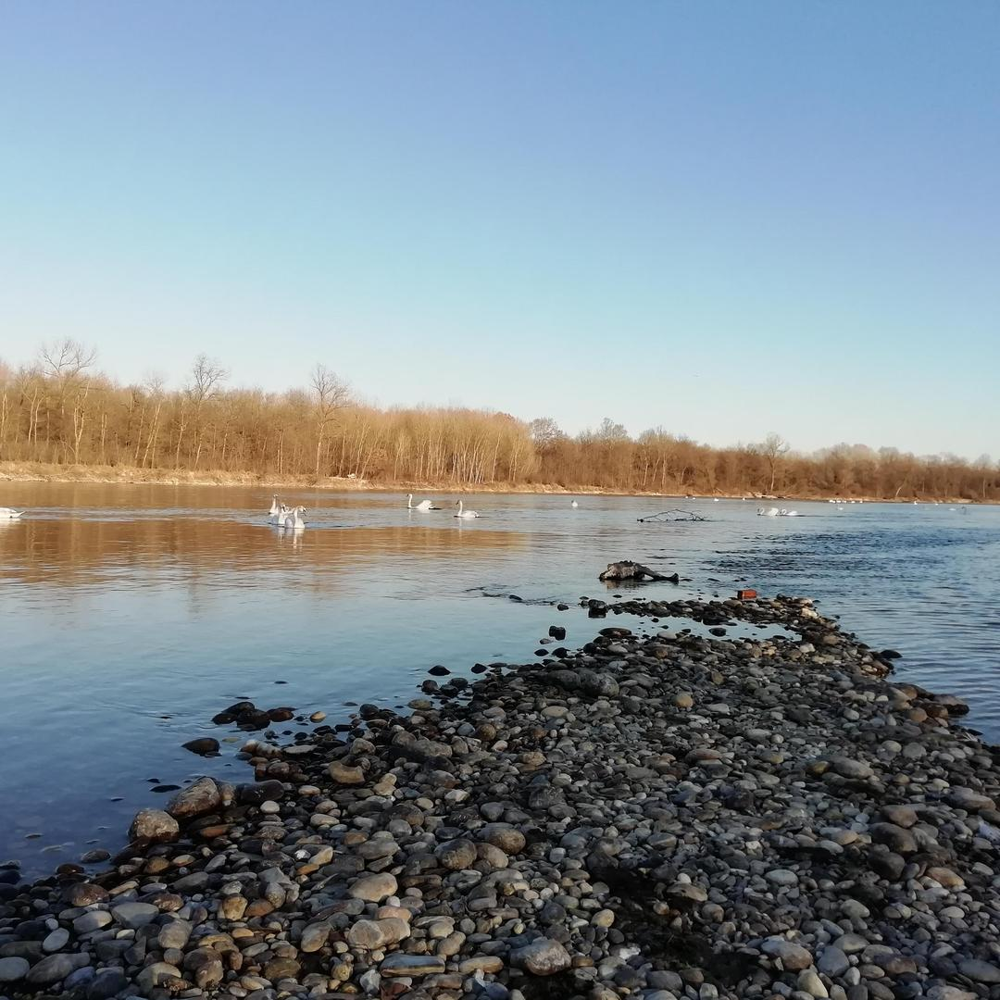

<!DOCTYPE html>
<head>
    <meta http-equiv="content-type" content="text/html; charset=UTF-8" />

        <script>
            L_NO_TOUCH = false;
            L_DISABLE_3D = false;
        </script>

<style>html, body {width: 100%;height: 100%;margin: 0;padding: 0;}</style>
<style>#map {position:absolute;top:0;bottom:0;right:0;left:0;}</style>
<script src="lib/Leaflet/leaflet.js"></script>
<link rel="stylesheet" href="lib/EasyButton-master/src/easy-button.css">
<script src="lib/EasyButton-master/src/easy-button.js"></script>
<script src="js_scripts/jquery-1.12.4.min.js"></script>
<script src="js_scripts/bootstrap.min.js"></script>
<script src="lib/Leaflet/leaflet.awesome-markers.js"></script>
<link rel="stylesheet" href="lib/Leaflet/leaflet.css"/>
<link rel="stylesheet" href="css/bootstrap.min.css"/>
<link rel="stylesheet" href="css/bootstrap-theme.min.css"/>
<link rel="stylesheet" href="css/font-awesome.min.css"/>
<link rel="stylesheet" href="lib/Leaflet/leaflet.awesome-markers.css"/>
<link rel="stylesheet" href="lib/Leaflet/leaflet.awesome.rotate.min.css"/>

            <meta name="viewport" content="width=device-width,
                initial-scale=1.0, maximum-scale=1.0, user-scalable=no" />
            <style>
                #map_3b9cba5f9c6c40a587c039f941887341 {
                    position: relative;
                    width: 100.0%;
                    height: 100.0%;
                    left: 0.0%;
                    top: 0.0%;
                }
            </style>

</head>
<body>

            <div class="folium-map" id="map_3b9cba5f9c6c40a587c039f941887341" ></div>

</body>
<script>


            var marker_9c2ec643f36e4777ab0adde8fcb679a9 = L.marker(
                [45.335276, 8.828578],
                {}
            );


        var custom_icon_615279beb2f44f60b903de55271d8fed = L.icon({"iconSize": [30, 30], "iconUrl": "https://em-content.zobj.net/thumbs/160/microsoft/74/cloud_2601.png"});
        marker_9c2ec643f36e4777ab0adde8fcb679a9.setIcon(custom_icon_615279beb2f44f60b903de55271d8fed);


        var popup_40e1afb0413641a2a85ff3e6cb5fa3e7 = L.popup({"maxWidth": "270"});


            var html_d9b5137ede654541a73e6235f19b4500 = $(`<div id="html_d9b5137ede654541a73e6235f19b4500" style="width: 100.0%; height: 100.0%;"><h1 style = "font-size: 30px;"><b>3 Navigli</b></h1><br><a href="mailto:info@ecologiaacustica.org;satorcollettivonoise@gmail.com?subject=PAESAGGIO SONORO --- [segnalazione] --- audio: 3 Navigli"><i><br>Facci sapere cosa ne pensi di questo audio!</a><audio id="audio_AL_45.335276, 8.828578" loop> <source src="dati/AL_45.335276, 8.828578/3NAVIGLI-converted.mp3" type="audio/mpeg"> </audio></div>`)[0];
            popup_40e1afb0413641a2a85ff3e6cb5fa3e7.setContent(html_d9b5137ede654541a73e6235f19b4500);


        marker_9c2ec643f36e4777ab0adde8fcb679a9.bindPopup(popup_40e1afb0413641a2a85ff3e6cb5fa3e7)
marker_9c2ec643f36e4777ab0adde8fcb679a9.on('click', function (e) {this.openPopup(); document.getElementById('audio_AL_45.335276, 8.828578').play();});
        ;


            var marker_8cba44fef0c54257bd0f1131a3722b6c = L.marker(
                [45.320201, 8.856242],
                {}
            );


        var custom_icon_7e0e165410554811a029c241b7802e58 = L.icon({"iconSize": [30, 30], "iconUrl": "https://em-content.zobj.net/thumbs/160/microsoft/74/ambulance_1f691.png"});
        marker_8cba44fef0c54257bd0f1131a3722b6c.setIcon(custom_icon_7e0e165410554811a029c241b7802e58);


        var popup_5e688f57b9a24ebe8c641a42711fe0a0 = L.popup({"maxWidth": "270"});


            var html_31db6e7476e3462a81e4e7dd46bc41b7 = $(`<div id="html_31db6e7476e3462a81e4e7dd46bc41b7" style="width: 100.0%; height: 100.0%;"><h1 style = "font-size: 30px;"><b>Ambulanza via Cavour</b></h1><br><a href="mailto:info@ecologiaacustica.org;satorcollettivonoise@gmail.com?subject=PAESAGGIO SONORO --- [segnalazione] --- audio: Ambulanza via Cavour"><i><br>Facci sapere cosa ne pensi di questo audio!</a><audio id="audio_AL_AMBULANZA CORSO CAVOUR" loop> <source src="dati/AL_AMBULANZA CORSO CAVOUR/ambulanza via cavour-converted.mp3" type="audio/mpeg"> </audio></div>`)[0];
            popup_5e688f57b9a24ebe8c641a42711fe0a0.setContent(html_31db6e7476e3462a81e4e7dd46bc41b7);


        marker_8cba44fef0c54257bd0f1131a3722b6c.bindPopup(popup_5e688f57b9a24ebe8c641a42711fe0a0)
marker_8cba44fef0c54257bd0f1131a3722b6c.on('click', function (e) {this.openPopup(); document.getElementById('audio_AL_AMBULANZA CORSO CAVOUR').play();});
        ;


            var marker_3b133ecf46ad48fc8b73fdb89673f183 = L.marker(
                [45.31789728, 8.853489165],
                {}
            );


        var custom_icon_cc1fdbf9613d417498ada23f1799c698 = L.icon({"iconSize": [30, 30], "iconUrl": "https://em-content.zobj.net/thumbs/160/microsoft/74/ambulance_1f691.png"});
        marker_3b133ecf46ad48fc8b73fdb89673f183.setIcon(custom_icon_cc1fdbf9613d417498ada23f1799c698);


        var popup_e0bc95f1db344b15aa8512a825f02841 = L.popup({"maxWidth": "270"});


            var html_dcbb78b0f22840e89fdbba364615bdf3 = $(`<div id="html_dcbb78b0f22840e89fdbba364615bdf3" style="width: 100.0%; height: 100.0%;"><h1 style = "font-size: 30px;"><b>Ambulanza corso Garibaldi</b></h1><br><a href="mailto:info@ecologiaacustica.org;satorcollettivonoise@gmail.com?subject=PAESAGGIO SONORO --- [segnalazione] --- audio: Ambulanza corso Garibaldi"><i><br>Facci sapere cosa ne pensi di questo audio!</a><audio id="audio_AL_AMBULANZA CORSO GARIBALDI" loop> <source src="dati/AL_AMBULANZA CORSO GARIBALDI/ambulanza corso garibaldi-converted.mp3" type="audio/mpeg"> </audio></div>`)[0];
            popup_e0bc95f1db344b15aa8512a825f02841.setContent(html_dcbb78b0f22840e89fdbba364615bdf3);


        marker_3b133ecf46ad48fc8b73fdb89673f183.bindPopup(popup_e0bc95f1db344b15aa8512a825f02841)
marker_3b133ecf46ad48fc8b73fdb89673f183.on('click', function (e) {this.openPopup(); document.getElementById('audio_AL_AMBULANZA CORSO GARIBALDI').play();});
        ;


            var marker_69de8b0e4a064b41963c193fed984b42 = L.marker(
                [45.299802, 8.831145],
                {}
            );


        var custom_icon_12e2adc7ad02412495309e31cf30b638 = L.icon({"iconSize": [30, 30], "iconUrl": "https://em-content.zobj.net/thumbs/160/microsoft/74/gear_2699.png"});
        marker_69de8b0e4a064b41963c193fed984b42.setIcon(custom_icon_12e2adc7ad02412495309e31cf30b638);


        var popup_50f25a566edc470a87b2c905968e0d75 = L.popup({"maxWidth": "270"});


            var html_6052f639bb6e451da067bcdc437ec0c6 = $(`<div id="html_6052f639bb6e451da067bcdc437ec0c6" style="width: 100.0%; height: 100.0%;"><h1 style = "font-size: 30px;"><b>Rottamaio</b></h1><br><a href="mailto:info@ecologiaacustica.org;satorcollettivonoise@gmail.com?subject=PAESAGGIO SONORO --- [segnalazione] --- audio: Rottamaio"><i><br>Facci sapere cosa ne pensi di questo audio!</a><audio id="audio_AL_AUTODEMOLIZIONI PICCHIO" loop> <source src="dati/AL_AUTODEMOLIZIONI PICCHIO/ROTTAMAIO PICCHIO-converted.mp3" type="audio/mpeg"> </audio></div>`)[0];
            popup_50f25a566edc470a87b2c905968e0d75.setContent(html_6052f639bb6e451da067bcdc437ec0c6);


        marker_69de8b0e4a064b41963c193fed984b42.bindPopup(popup_50f25a566edc470a87b2c905968e0d75)
marker_69de8b0e4a064b41963c193fed984b42.on('click', function (e) {this.openPopup(); document.getElementById('audio_AL_AUTODEMOLIZIONI PICCHIO').play();});
        ;


            var marker_a38533d94fff43ccafaf3b46388cd659 = L.marker(
                [45.327416, 8.839585],
                {}
            );


        var custom_icon_cb9de5bdce5c4b23a9fa19a1edba0c2d = L.icon({"iconSize": [30, 30], "iconUrl": "https://em-content.zobj.net/thumbs/160/microsoft/74/gear_2699.png"});
        marker_a38533d94fff43ccafaf3b46388cd659.setIcon(custom_icon_cb9de5bdce5c4b23a9fa19a1edba0c2d);


        var popup_f054b72fe6b34a8ea18e1c9353d1ca3a = L.popup({"maxWidth": "270"});


            var html_a6d724cf214c42988739270589c756a7 = $(`<div id="html_a6d724cf214c42988739270589c756a7" style="width: 100.0%; height: 100.0%;"><h1 style = "font-size: 30px;"><b>Autolavaggio</b></h1><br><a href="mailto:info@ecologiaacustica.org;satorcollettivonoise@gmail.com?subject=PAESAGGIO SONORO --- [segnalazione] --- audio: Autolavaggio"><i><br>Facci sapere cosa ne pensi di questo audio!</a><audio id="audio_AL_AUTOLAVAGGIO SEVEN WASH" loop> <source src="dati/AL_AUTOLAVAGGIO SEVEN WASH/AUTOLavaggio  seven wash-converted.mp3" type="audio/mpeg"> </audio></div>`)[0];
            popup_f054b72fe6b34a8ea18e1c9353d1ca3a.setContent(html_a6d724cf214c42988739270589c756a7);


        marker_a38533d94fff43ccafaf3b46388cd659.bindPopup(popup_f054b72fe6b34a8ea18e1c9353d1ca3a)
marker_a38533d94fff43ccafaf3b46388cd659.on('click', function (e) {this.openPopup(); document.getElementById('audio_AL_AUTOLAVAGGIO SEVEN WASH').play();});
        ;


            var marker_4929b54c051e45d8adddcfff8db4c9bb = L.marker(
                [45.320629, 8.909743],
                {}
            );


        var custom_icon_349cf241b0c94bc6a3bdcc464c795e18 = L.icon({"iconSize": [30, 30], "iconUrl": "https://em-content.zobj.net/thumbs/160/microsoft/209/people-holding-hands_1f9d1-200d-1f91d-200d-1f9d1.png"});
        marker_4929b54c051e45d8adddcfff8db4c9bb.setIcon(custom_icon_349cf241b0c94bc6a3bdcc464c795e18);


        var popup_841f16a45b1746729014227df642ffb9 = L.popup({"maxWidth": "270"});


            var html_a6f6f8441a8b435bbf1b4061c0f14740 = $(`<div id="html_a6f6f8441a8b435bbf1b4061c0f14740" style="width: 100.0%; height: 100.0%;"><h1 style = "font-size: 30px;"><b>Anziani</b></h1><br><a href="mailto:info@ecologiaacustica.org;satorcollettivonoise@gmail.com?subject=PAESAGGIO SONORO --- [segnalazione] --- audio: Anziani"><i><br>Facci sapere cosa ne pensi di questo audio!</a><audio id="audio_AL_AYALA ANZIANI" loop> <source src="dati/AL_AYALA ANZIANI/ayala anziani-converted.mp3" type="audio/mpeg"> </audio></div>`)[0];
            popup_841f16a45b1746729014227df642ffb9.setContent(html_a6f6f8441a8b435bbf1b4061c0f14740);


        marker_4929b54c051e45d8adddcfff8db4c9bb.bindPopup(popup_841f16a45b1746729014227df642ffb9)
marker_4929b54c051e45d8adddcfff8db4c9bb.on('click', function (e) {this.openPopup(); document.getElementById('audio_AL_AYALA ANZIANI').play();});
        ;


            var marker_ad70038edb064665b584388579151918 = L.marker(
                [45.316647, 8.857617],
                {}
            );


        var custom_icon_2f00c99574e34263811c9332ba78800b = L.icon({"iconSize": [30, 30], "iconUrl": "https://em-content.zobj.net/thumbs/160/microsoft/74/church_26ea.png"});
        marker_ad70038edb064665b584388579151918.setIcon(custom_icon_2f00c99574e34263811c9332ba78800b);


        var popup_6c054a47354941f88c4e25a621c66d0d = L.popup({"maxWidth": "270"});


            var html_aa7c9a3ac8ed48dbb28b8d8b06b2b32f = $(`<div id="html_aa7c9a3ac8ed48dbb28b8d8b06b2b32f" style="width: 100.0%; height: 100.0%;"><h1 style = "font-size: 30px;"><b>Campane in castello</b></h1><br><a href="mailto:info@ecologiaacustica.org;satorcollettivonoise@gmail.com?subject=PAESAGGIO SONORO --- [segnalazione] --- audio: Campane in castello"><i><br>Facci sapere cosa ne pensi di questo audio!</a><audio id="audio_AL_CAMPANE CASTELLO" loop> <source src="dati/AL_CAMPANE CASTELLO/campane castello-converted.mp3" type="audio/mpeg"> </audio></div>`)[0];
            popup_6c054a47354941f88c4e25a621c66d0d.setContent(html_aa7c9a3ac8ed48dbb28b8d8b06b2b32f);


        marker_ad70038edb064665b584388579151918.bindPopup(popup_6c054a47354941f88c4e25a621c66d0d)
marker_ad70038edb064665b584388579151918.on('click', function (e) {this.openPopup(); document.getElementById('audio_AL_CAMPANE CASTELLO').play();});
        ;


            var marker_6c0fc4aaa1334b73b649e19887d4475d = L.marker(
                [45.31739182, 8.85012567],
                {}
            );


        var custom_icon_a8b9a684b0cb4c21b91317a96caa19ac = L.icon({"iconSize": [30, 30], "iconUrl": "https://em-content.zobj.net/thumbs/160/microsoft/74/church_26ea.png"});
        marker_6c0fc4aaa1334b73b649e19887d4475d.setIcon(custom_icon_a8b9a684b0cb4c21b91317a96caa19ac);


        var popup_ee5ee00aad65464bb7bdf97d8fb7d314 = L.popup({"maxWidth": "270"});


            var html_7edaf2860aef4011b85af39fcb49813d = $(`<div id="html_7edaf2860aef4011b85af39fcb49813d" style="width: 100.0%; height: 100.0%;"><h1 style = "font-size: 30px;"><b>Campana Immacolata</b></h1><br><a href="mailto:info@ecologiaacustica.org;satorcollettivonoise@gmail.com?subject=PAESAGGIO SONORO --- [segnalazione] --- audio: Campana Immacolata"><i><br>Facci sapere cosa ne pensi di questo audio!</a><audio id="audio_AL_CAMPANE IMMACOLATA" loop> <source src="dati/AL_CAMPANE IMMACOLATA/campane immacolata-converted.mp3" type="audio/mpeg"> </audio></div>`)[0];
            popup_ee5ee00aad65464bb7bdf97d8fb7d314.setContent(html_7edaf2860aef4011b85af39fcb49813d);


        marker_6c0fc4aaa1334b73b649e19887d4475d.bindPopup(popup_ee5ee00aad65464bb7bdf97d8fb7d314)
marker_6c0fc4aaa1334b73b649e19887d4475d.on('click', function (e) {this.openPopup(); document.getElementById('audio_AL_CAMPANE IMMACOLATA').play();});
        ;


            var marker_f025536c64cc4a41a96713327853e943 = L.marker(
                [45.318809, 8.853754],
                {}
            );


        var custom_icon_7d4e1747ce0b45ceb8778f6a917ccffb = L.icon({"iconSize": [30, 30], "iconUrl": "https://em-content.zobj.net/thumbs/160/microsoft/74/church_26ea.png"});
        marker_f025536c64cc4a41a96713327853e943.setIcon(custom_icon_7d4e1747ce0b45ceb8778f6a917ccffb);


        var popup_5cdb980794164c8bab3476da640f3968 = L.popup({"maxWidth": "270"});


            var html_51e7ba6020f84bb1b79f51f74c9c547c = $(`<div id="html_51e7ba6020f84bb1b79f51f74c9c547c" style="width: 100.0%; height: 100.0%;"><h1 style = "font-size: 30px;"><b>Campana San Bernardo</b></h1><br><a href="mailto:info@ecologiaacustica.org;satorcollettivonoise@gmail.com?subject=PAESAGGIO SONORO --- [segnalazione] --- audio: Campana San Bernardo"><i><br>Facci sapere cosa ne pensi di questo audio!</a><audio id="audio_AL_CAMPANE SAN BERNARDO" loop> <source src="dati/AL_CAMPANE SAN BERNARDO/campane san bernardo-converted.mp3" type="audio/mpeg"> </audio></div>`)[0];
            popup_5cdb980794164c8bab3476da640f3968.setContent(html_51e7ba6020f84bb1b79f51f74c9c547c);


        marker_f025536c64cc4a41a96713327853e943.bindPopup(popup_5cdb980794164c8bab3476da640f3968)
marker_f025536c64cc4a41a96713327853e943.on('click', function (e) {this.openPopup(); document.getElementById('audio_AL_CAMPANE SAN BERNARDO').play();});
        ;


            var marker_d9816653328e4a379d6ec138e97fd54e = L.marker(
                [45.312951, 8.855561],
                {}
            );


        var custom_icon_e81915cd865749e0939d916089936b7d = L.icon({"iconSize": [30, 30], "iconUrl": "https://em-content.zobj.net/thumbs/160/microsoft/74/church_26ea.png"});
        marker_d9816653328e4a379d6ec138e97fd54e.setIcon(custom_icon_e81915cd865749e0939d916089936b7d);


        var popup_fdd0a86064294da59d5f6dac75ae2a73 = L.popup({"maxWidth": "270"});


            var html_1b6a2d79add84672bcbf9129dc8292d9 = $(`<div id="html_1b6a2d79add84672bcbf9129dc8292d9" style="width: 100.0%; height: 100.0%;"><h1 style = "font-size: 30px;"><b>Campane Via Rossini</b></h1><br><a href="mailto:info@ecologiaacustica.org;satorcollettivonoise@gmail.com?subject=PAESAGGIO SONORO --- [segnalazione] --- audio: Campane Via Rossini"><i><br>Facci sapere cosa ne pensi di questo audio!</a><audio id="audio_AL_CAMPANE SS CROCIFISSO VIA ROSSINI" loop> <source src="dati/AL_CAMPANE SS CROCIFISSO VIA ROSSINI/CAMPANE SS CROCIFISSO VIA ROSSINI-converted.mp3" type="audio/mpeg"> </audio></div>`)[0];
            popup_fdd0a86064294da59d5f6dac75ae2a73.setContent(html_1b6a2d79add84672bcbf9129dc8292d9);


        marker_d9816653328e4a379d6ec138e97fd54e.bindPopup(popup_fdd0a86064294da59d5f6dac75ae2a73)
marker_d9816653328e4a379d6ec138e97fd54e.on('click', function (e) {this.openPopup(); document.getElementById('audio_AL_CAMPANE SS CROCIFISSO VIA ROSSINI').play();});
        ;


            var marker_22197be5d4da4d5790e8cb7c9400cb2b = L.marker(
                [45.318437, 8.8622353],
                {}
            );


        var custom_icon_80a5a5630a3e42ec8de52221c734bcc1 = L.icon({"iconSize": [30, 30], "iconUrl": "https://em-content.zobj.net/thumbs/160/microsoft/74/gear_2699.png"});
        marker_22197be5d4da4d5790e8cb7c9400cb2b.setIcon(custom_icon_80a5a5630a3e42ec8de52221c734bcc1);


        var popup_b53399b4c5904052975674ccdf5336a9 = L.popup({"maxWidth": "270"});


            var html_ba8724af78bb4206923a3b3414a997e1 = $(`<div id="html_ba8724af78bb4206923a3b3414a997e1" style="width: 100.0%; height: 100.0%;"><h1 style = "font-size: 30px;"><b>Cancello</b></h1><br><a href="mailto:info@ecologiaacustica.org;satorcollettivonoise@gmail.com?subject=PAESAGGIO SONORO --- [segnalazione] --- audio: Cancello"><i><br>Facci sapere cosa ne pensi di questo audio!</a><audio id="audio_AL_CANCELLO VIA CARDUCCI 9" loop> <source src="dati/AL_CANCELLO VIA CARDUCCI 9/cancello via carducci 9-converted.mp3" type="audio/mpeg"> </audio></div>`)[0];
            popup_b53399b4c5904052975674ccdf5336a9.setContent(html_ba8724af78bb4206923a3b3414a997e1);


        marker_22197be5d4da4d5790e8cb7c9400cb2b.bindPopup(popup_b53399b4c5904052975674ccdf5336a9)
marker_22197be5d4da4d5790e8cb7c9400cb2b.on('click', function (e) {this.openPopup(); document.getElementById('audio_AL_CANCELLO VIA CARDUCCI 9').play();});
        ;


            var marker_2e14f3f49026477aba8d393d0cdcfe16 = L.marker(
                [45.316329, 8.856831],
                {}
            );


        var custom_icon_ece01b42ba5c426baced04cff907225b = L.icon({"iconSize": [30, 30], "iconUrl": "https://em-content.zobj.net/thumbs/160/microsoft/74/cloud_2601.png"});
        marker_2e14f3f49026477aba8d393d0cdcfe16.setIcon(custom_icon_ece01b42ba5c426baced04cff907225b);


        var popup_f62ac25f68e44b6b968323731cb6b507 = L.popup({"maxWidth": "270"});


            var html_d019793488434507aea16685b02db60b = $(`<div id="html_d019793488434507aea16685b02db60b" style="width: 100.0%; height: 100.0%;"><h1 style = "font-size: 30px;"><b>Castello</b></h1><br><a href="mailto:info@ecologiaacustica.org;satorcollettivonoise@gmail.com?subject=PAESAGGIO SONORO --- [segnalazione] --- audio: Castello"><i><br>Facci sapere cosa ne pensi di questo audio!</a><audio id="audio_AL_CASTELLO" loop> <source src="dati/AL_CASTELLO/AL_CASTELLO-converted.mp3" type="audio/mpeg"> </audio></div>`)[0];
            popup_f62ac25f68e44b6b968323731cb6b507.setContent(html_d019793488434507aea16685b02db60b);


        marker_2e14f3f49026477aba8d393d0cdcfe16.bindPopup(popup_f62ac25f68e44b6b968323731cb6b507)
marker_2e14f3f49026477aba8d393d0cdcfe16.on('click', function (e) {this.openPopup(); document.getElementById('audio_AL_CASTELLO').play();});
        ;


            var marker_752b631f0c1a4d11840ca5c59b726561 = L.marker(
                [45.31598777, 8.860193825],
                {}
            );


        var custom_icon_9c87a8dafce540858eba8c7813c579fb = L.icon({"iconSize": [30, 30], "iconUrl": "https://em-content.zobj.net/thumbs/160/microsoft/74/bird_1f426.png"});
        marker_752b631f0c1a4d11840ca5c59b726561.setIcon(custom_icon_9c87a8dafce540858eba8c7813c579fb);


        var popup_c13c70231a734fb3ba2232203f6b37dc = L.popup({"maxWidth": "270"});


            var html_7e5844b4db2b42bd9cab26452f229854 = $(`<div id="html_7e5844b4db2b42bd9cab26452f229854" style="width: 100.0%; height: 100.0%;"><h1 style = "font-size: 30px;"><b>Cavallerizza</b></h1><br><a href="mailto:info@ecologiaacustica.org;satorcollettivonoise@gmail.com?subject=PAESAGGIO SONORO --- [segnalazione] --- audio: Cavallerizza"><i><br>Facci sapere cosa ne pensi di questo audio!</a><audio id="audio_AL_CAVALLERIZZA CON CONDIZIONATORE E UCCELLINI" loop> <source src="dati/AL_CAVALLERIZZA CON CONDIZIONATORE E UCCELLINI/cavallerizza senza bimbi ma con condizionatore iniziale e non-converted.mp3" type="audio/mpeg"> </audio></div>`)[0];
            popup_c13c70231a734fb3ba2232203f6b37dc.setContent(html_7e5844b4db2b42bd9cab26452f229854);


        marker_752b631f0c1a4d11840ca5c59b726561.bindPopup(popup_c13c70231a734fb3ba2232203f6b37dc)
marker_752b631f0c1a4d11840ca5c59b726561.on('click', function (e) {this.openPopup(); document.getElementById('audio_AL_CAVALLERIZZA CON CONDIZIONATORE E UCCELLINI').play();});
        ;


            var marker_7d9e99f5eb384dcc9f21cf49078f4a56 = L.marker(
                [45.347941, 8.849416],
                {}
            );


        var custom_icon_4f0e7b42df7744549abf61855080beae = L.icon({"iconSize": [30, 30], "iconUrl": "https://em-content.zobj.net/thumbs/160/microsoft/74/cloud_2601.png"});
        marker_7d9e99f5eb384dcc9f21cf49078f4a56.setIcon(custom_icon_4f0e7b42df7744549abf61855080beae);


        var popup_ae80f792ca4349b3a01fcce09d9f68ff = L.popup({"maxWidth": "270"});


            var html_014798b6da1a4f0c9eb4a55df1366cb5 = $(`<div id="html_014798b6da1a4f0c9eb4a55df1366cb5" style="width: 100.0%; height: 100.0%;"><h1 style = "font-size: 30px;"><b>Ramo dei Prati</b></h1><br><a href="mailto:info@ecologiaacustica.org;satorcollettivonoise@gmail.com?subject=PAESAGGIO SONORO --- [segnalazione] --- audio: Ramo dei Prati"><i><br>Facci sapere cosa ne pensi di questo audio!</a><audio id="audio_AL_CHIESA BUCCELLA" loop> <source src="dati/AL_CHIESA BUCCELLA/RAMO DEI PRATI-converted.mp3" type="audio/mpeg"> </audio></div>`)[0];
            popup_ae80f792ca4349b3a01fcce09d9f68ff.setContent(html_014798b6da1a4f0c9eb4a55df1366cb5);


        marker_7d9e99f5eb384dcc9f21cf49078f4a56.bindPopup(popup_ae80f792ca4349b3a01fcce09d9f68ff)
marker_7d9e99f5eb384dcc9f21cf49078f4a56.on('click', function (e) {this.openPopup(); document.getElementById('audio_AL_CHIESA BUCCELLA').play();});
        ;


            var marker_c45e85b182f84d00aacce598dca4df70 = L.marker(
                [45.324436, 8.835918],
                {}
            );


        var custom_icon_6d2ab6bad5c441f3b5397e29cafadeec = L.icon({"iconSize": [30, 30], "iconUrl": "https://em-content.zobj.net/thumbs/160/microsoft/74/cloud_2601.png"});
        marker_c45e85b182f84d00aacce598dca4df70.setIcon(custom_icon_6d2ab6bad5c441f3b5397e29cafadeec);


        var popup_ad3effc6117845b9a1299be382e30924 = L.popup({"maxWidth": "270"});


            var html_947d26a16957416bad1c682b04e031f7 = $(`<div id="html_947d26a16957416bad1c682b04e031f7" style="width: 100.0%; height: 100.0%;"><h1 style = "font-size: 30px;"><b>Chiesa Battù</b></h1><br><a href="mailto:info@ecologiaacustica.org;satorcollettivonoise@gmail.com?subject=PAESAGGIO SONORO --- [segnalazione] --- audio: Chiesa Battù"><i><br>Facci sapere cosa ne pensi di questo audio!</a><audio id="audio_AL_CHIESA SANTA MARIA DEL PARTO BATTU" loop> <source src="dati/AL_CHIESA SANTA MARIA DEL PARTO BATTU/STRADA BARBAVARA-converted.mp3" type="audio/mpeg"> </audio></div>`)[0];
            popup_ad3effc6117845b9a1299be382e30924.setContent(html_947d26a16957416bad1c682b04e031f7);


        marker_c45e85b182f84d00aacce598dca4df70.bindPopup(popup_ad3effc6117845b9a1299be382e30924)
marker_c45e85b182f84d00aacce598dca4df70.on('click', function (e) {this.openPopup(); document.getElementById('audio_AL_CHIESA SANTA MARIA DEL PARTO BATTU').play();});
        ;


            var marker_f02af0b85b0043a4b6cd2658fc039dfa = L.marker(
                [45.314712, 8.850959],
                {}
            );


        var custom_icon_e805149a7cab4f9a9c789a1fc7427375 = L.icon({"iconSize": [30, 30], "iconUrl": "https://em-content.zobj.net/thumbs/160/microsoft/74/automobile_1f697.png"});
        marker_f02af0b85b0043a4b6cd2658fc039dfa.setIcon(custom_icon_e805149a7cab4f9a9c789a1fc7427375);


        var popup_ba1614cd5b024beeb86c928dd55b8ef6 = L.popup({"maxWidth": "270"});


            var html_a8d27c0232e94dac85766cbe9594c62d = $(`<div id="html_a8d27c0232e94dac85766cbe9594c62d" style="width: 100.0%; height: 100.0%;"><h1 style = "font-size: 30px;"><b>Traffico corso Torino</b></h1><br><a href="mailto:info@ecologiaacustica.org;satorcollettivonoise@gmail.com?subject=PAESAGGIO SONORO --- [segnalazione] --- audio: Traffico corso Torino"><i><br>Facci sapere cosa ne pensi di questo audio!</a><audio id="audio_AL_CORSO TORINO 9 H 18" loop> <source src="dati/AL_CORSO TORINO 9 H 18/corso torino 9 traffico-converted.mp3" type="audio/mpeg"> </audio></div>`)[0];
            popup_ba1614cd5b024beeb86c928dd55b8ef6.setContent(html_a8d27c0232e94dac85766cbe9594c62d);


        marker_f02af0b85b0043a4b6cd2658fc039dfa.bindPopup(popup_ba1614cd5b024beeb86c928dd55b8ef6)
marker_f02af0b85b0043a4b6cd2658fc039dfa.on('click', function (e) {this.openPopup(); document.getElementById('audio_AL_CORSO TORINO 9 H 18').play();});
        ;


            var marker_fec8405d2fed49b3b9616c471aa71d5a = L.marker(
                [45.31581126, 8.855427057],
                {}
            );


        var custom_icon_73fe1f2a1239401c821720e80e650585 = L.icon({"iconSize": [30, 30], "iconUrl": "https://em-content.zobj.net/thumbs/160/microsoft/74/water-wave_1f30a.png"});
        marker_fec8405d2fed49b3b9616c471aa71d5a.setIcon(custom_icon_73fe1f2a1239401c821720e80e650585);


        var popup_c8867949f639436a80d4bd21aaa931ef = L.popup({"maxWidth": "270"});


            var html_87fd0a89fc4a4fc684223572ba653176 = $(`<div id="html_87fd0a89fc4a4fc684223572ba653176" style="width: 100.0%; height: 100.0%;"><h1 style = "font-size: 30px;"><b>Parco Roncalli</b></h1><br><a href="mailto:info@ecologiaacustica.org;satorcollettivonoise@gmail.com?subject=PAESAGGIO SONORO --- [segnalazione] --- audio: Parco Roncalli"><i><br>Facci sapere cosa ne pensi di questo audio!</a><audio id="audio_AL_CORTILE OFFICINE RONCALLI" loop> <source src="dati/AL_CORTILE OFFICINE RONCALLI/parco roncalli con colombi in amore-converted.mp3" type="audio/mpeg"> </audio></div>`)[0];
            popup_c8867949f639436a80d4bd21aaa931ef.setContent(html_87fd0a89fc4a4fc684223572ba653176);


        marker_fec8405d2fed49b3b9616c471aa71d5a.bindPopup(popup_c8867949f639436a80d4bd21aaa931ef)
marker_fec8405d2fed49b3b9616c471aa71d5a.on('click', function (e) {this.openPopup(); document.getElementById('audio_AL_CORTILE OFFICINE RONCALLI').play();});
        ;


            var marker_e9cc8d3fa8894726bb433fe3dcdf404e = L.marker(
                [45.318346, 8.855921],
                {}
            );


        var custom_icon_9d06fb303aab436e81974f7abad155f0 = L.icon({"iconSize": [30, 30], "iconUrl": "https://em-content.zobj.net/thumbs/160/microsoft/74/water-wave_1f30a.png"});
        marker_e9cc8d3fa8894726bb433fe3dcdf404e.setIcon(custom_icon_9d06fb303aab436e81974f7abad155f0);


        var popup_ad75851410734348803206d7e37ce04f = L.popup({"maxWidth": "270"});


            var html_08828b8d15874c7c9af5353d5e8cec29 = $(`<div id="html_08828b8d15874c7c9af5353d5e8cec29" style="width: 100.0%; height: 100.0%;"><h1 style = "font-size: 30px;"><b>San Francesco</b></h1><br><a href="mailto:info@ecologiaacustica.org;satorcollettivonoise@gmail.com?subject=PAESAGGIO SONORO --- [segnalazione] --- audio: San Francesco"><i><br>Facci sapere cosa ne pensi di questo audio!</a><audio id="audio_AL_FONTANA SAN FRANCESCO" loop> <source src="dati/AL_FONTANA SAN FRANCESCO/SAN FRANCESCO-converted.mp3" type="audio/mpeg"> </audio></div>`)[0];
            popup_ad75851410734348803206d7e37ce04f.setContent(html_08828b8d15874c7c9af5353d5e8cec29);


        marker_e9cc8d3fa8894726bb433fe3dcdf404e.bindPopup(popup_ad75851410734348803206d7e37ce04f)
marker_e9cc8d3fa8894726bb433fe3dcdf404e.on('click', function (e) {this.openPopup(); document.getElementById('audio_AL_FONTANA SAN FRANCESCO').play();});
        ;


            var marker_743e566b093544e5933299bf048514d2 = L.marker(
                [45.319, 8.853801],
                {}
            );


        var custom_icon_9984c50edb3b4b37b91bbfdc0536783a = L.icon({"iconSize": [30, 30], "iconUrl": "https://em-content.zobj.net/thumbs/160/microsoft/74/water-wave_1f30a.png"});
        marker_743e566b093544e5933299bf048514d2.setIcon(custom_icon_9984c50edb3b4b37b91bbfdc0536783a);


        var popup_7539ce3208ab4fc9bdc431bf11094ef7 = L.popup({"maxWidth": "270"});


            var html_f110e83f531842008435aef1ebe7b527 = $(`<div id="html_f110e83f531842008435aef1ebe7b527" style="width: 100.0%; height: 100.0%;"><h1 style = "font-size: 30px;"><b>San Bernardo</b></h1><br><a href="mailto:info@ecologiaacustica.org;satorcollettivonoise@gmail.com?subject=PAESAGGIO SONORO --- [segnalazione] --- audio: San Bernardo"><i><br>Facci sapere cosa ne pensi di questo audio!</a><audio id="audio_AL_FONTANELLA INCROCIO SAN BERNARDO" loop> <source src="dati/AL_FONTANELLA INCROCIO SAN BERNARDO/AL_FONTANELLA INCROCIO SAN BERNARDO.mp3" type="audio/mpeg"> </audio></div>`)[0];
            popup_7539ce3208ab4fc9bdc431bf11094ef7.setContent(html_f110e83f531842008435aef1ebe7b527);


        marker_743e566b093544e5933299bf048514d2.bindPopup(popup_7539ce3208ab4fc9bdc431bf11094ef7)
marker_743e566b093544e5933299bf048514d2.on('click', function (e) {this.openPopup(); document.getElementById('audio_AL_FONTANELLA INCROCIO SAN BERNARDO').play();});
        ;


            var marker_0dd335bae2aa464a9c1661dacf7a20e3 = L.marker(
                [45.320298, 8.849036],
                {}
            );


        var custom_icon_61182c34c3724e099eb9f4bb6b8c3719 = L.icon({"iconSize": [30, 30], "iconUrl": "https://em-content.zobj.net/thumbs/160/microsoft/74/water-wave_1f30a.png"});
        marker_0dd335bae2aa464a9c1661dacf7a20e3.setIcon(custom_icon_61182c34c3724e099eb9f4bb6b8c3719);


        var popup_2fa56b2da8814e23b40310fcac66d34e = L.popup({"maxWidth": "270"});


            var html_25bdf6f02d034de09fc552b8c774819d = $(`<div id="html_25bdf6f02d034de09fc552b8c774819d" style="width: 100.0%; height: 100.0%;"><h1 style = "font-size: 30px;"><b>Parco in via d'Avalos</b></h1><br><a href="mailto:info@ecologiaacustica.org;satorcollettivonoise@gmail.com?subject=PAESAGGIO SONORO --- [segnalazione] --- audio: Parco in via d'Avalos"><i><br>Facci sapere cosa ne pensi di questo audio!</a><audio id="audio_AL_FONTANELLA PARCO VIA DAVALOS" loop> <source src="dati/AL_FONTANELLA PARCO VIA DAVALOS/AL_FONTANELLA PARCO VIA DAVALOS.mp3" type="audio/mpeg"> </audio></div>`)[0];
            popup_2fa56b2da8814e23b40310fcac66d34e.setContent(html_25bdf6f02d034de09fc552b8c774819d);


        marker_0dd335bae2aa464a9c1661dacf7a20e3.bindPopup(popup_2fa56b2da8814e23b40310fcac66d34e)
marker_0dd335bae2aa464a9c1661dacf7a20e3.on('click', function (e) {this.openPopup(); document.getElementById('audio_AL_FONTANELLA PARCO VIA DAVALOS').play();});
        ;


            var marker_25501f1e9a1843edb80455521661a50f = L.marker(
                [45.319209, 8.911778],
                {}
            );


        var custom_icon_11435a9c006e43b9988f8cdfd0bf86b3 = L.icon({"iconSize": [30, 30], "iconUrl": "https://em-content.zobj.net/thumbs/160/microsoft/74/bird_1f426.png"});
        marker_25501f1e9a1843edb80455521661a50f.setIcon(custom_icon_11435a9c006e43b9988f8cdfd0bf86b3);


        var popup_4b4fd32c1293488486841ffec4f41da1 = L.popup({"maxWidth": "270"});


            var html_8f7f0a0fe29a48cd82904cd185e04f5a = $(`<div id="html_8f7f0a0fe29a48cd82904cd185e04f5a" style="width: 100.0%; height: 100.0%;"><h1 style = "font-size: 30px;"><b>Gallinelle</b></h1><br><a href="mailto:info@ecologiaacustica.org;satorcollettivonoise@gmail.com?subject=PAESAGGIO SONORO --- [segnalazione] --- audio: Gallinelle"><i><br>Facci sapere cosa ne pensi di questo audio!</a><audio id="audio_AL_GALLINELLE AYALA" loop> <source src="dati/AL_GALLINELLE AYALA/gallinelle ayala-converted.mp3" type="audio/mpeg"> </audio></div>`)[0];
            popup_4b4fd32c1293488486841ffec4f41da1.setContent(html_8f7f0a0fe29a48cd82904cd185e04f5a);


        marker_25501f1e9a1843edb80455521661a50f.bindPopup(popup_4b4fd32c1293488486841ffec4f41da1)
marker_25501f1e9a1843edb80455521661a50f.on('click', function (e) {this.openPopup(); document.getElementById('audio_AL_GALLINELLE AYALA').play();});
        ;


            var marker_cdf2a2c19ee24c2181fa27192fb3d745 = L.marker(
                [45.31926654, 8.84883821],
                {}
            );


        var custom_icon_c552467c67b6484c8b545e2db9b3a504 = L.icon({"iconSize": [30, 30], "iconUrl": "https://em-content.zobj.net/thumbs/160/microsoft/74/high-voltage-sign_26a1.png"});
        marker_cdf2a2c19ee24c2181fa27192fb3d745.setIcon(custom_icon_c552467c67b6484c8b545e2db9b3a504);


        var popup_08f83afc07024fb483929bee150e1bfa = L.popup({"maxWidth": "270"});


            var html_269d642ccbd34fd3a60fdb424b36df10 = $(`<div id="html_269d642ccbd34fd3a60fdb424b36df10" style="width: 100.0%; height: 100.0%;"><h1 style = "font-size: 30px;"><b>Generatore in via Trivulzio</b></h1><br><a href="mailto:info@ecologiaacustica.org;satorcollettivonoise@gmail.com?subject=PAESAGGIO SONORO --- [segnalazione] --- audio: Generatore in via Trivulzio"><i><br>Facci sapere cosa ne pensi di questo audio!</a><audio id="audio_AL_GENERATORE VIA TRIVULZIO" loop> <source src="dati/AL_GENERATORE VIA TRIVULZIO/GENERATORE-converted.mp3" type="audio/mpeg"> </audio></div>`)[0];
            popup_08f83afc07024fb483929bee150e1bfa.setContent(html_269d642ccbd34fd3a60fdb424b36df10);


        marker_cdf2a2c19ee24c2181fa27192fb3d745.bindPopup(popup_08f83afc07024fb483929bee150e1bfa)
marker_cdf2a2c19ee24c2181fa27192fb3d745.on('click', function (e) {this.openPopup(); document.getElementById('audio_AL_GENERATORE VIA TRIVULZIO').play();});
        ;


            var marker_65b23e428b2e40beb36b7ecb2f4f19f4 = L.marker(
                [45.3163211, 8.8556406],
                {}
            );


        var custom_icon_50282cd28405455d86380fe5b87c1780 = L.icon({"iconSize": [30, 30], "iconUrl": "https://em-content.zobj.net/thumbs/160/microsoft/74/gear_2699.png"});
        marker_65b23e428b2e40beb36b7ecb2f4f19f4.setIcon(custom_icon_50282cd28405455d86380fe5b87c1780);


        var popup_a6dc6feb1cc942aa8a78abb21ddcb8af = L.popup({"maxWidth": "270"});


            var html_e181889218154fac8523f813063f0acf = $(`<div id="html_e181889218154fac8523f813063f0acf" style="width: 100.0%; height: 100.0%;"><h1 style = "font-size: 30px;"><b>Tatuaggio</b></h1><br><a href="mailto:info@ecologiaacustica.org;satorcollettivonoise@gmail.com?subject=PAESAGGIO SONORO --- [segnalazione] --- audio: Tatuaggio"><i><br>Facci sapere cosa ne pensi di questo audio!</a><audio id="audio_AL_GUNTATOO VIA DEL POPOLO" loop> <source src="dati/AL_GUNTATOO VIA DEL POPOLO/macchinetta tatoo-converted.mp3" type="audio/mpeg"> </audio></div>`)[0];
            popup_a6dc6feb1cc942aa8a78abb21ddcb8af.setContent(html_e181889218154fac8523f813063f0acf);


        marker_65b23e428b2e40beb36b7ecb2f4f19f4.bindPopup(popup_a6dc6feb1cc942aa8a78abb21ddcb8af)
marker_65b23e428b2e40beb36b7ecb2f4f19f4.on('click', function (e) {this.openPopup(); document.getElementById('audio_AL_GUNTATOO VIA DEL POPOLO').play();});
        ;


            var marker_7d1f9640541a4938aa0243578a059fd9 = L.marker(
                [45.325309, 8.882199526],
                {}
            );


        var custom_icon_e59f26deaf884ed088256180ad1356e9 = L.icon({"iconSize": [30, 30], "iconUrl": "https://em-content.zobj.net/thumbs/160/microsoft/209/people-holding-hands_1f9d1-200d-1f91d-200d-1f9d1.png"});
        marker_7d1f9640541a4938aa0243578a059fd9.setIcon(custom_icon_e59f26deaf884ed088256180ad1356e9);


        var popup_62253eefd2184e38b7e6a444654556fb = L.popup({"maxWidth": "270"});


            var html_f2f0102a62b748c5b18b6530bc295244 = $(`<div id="html_f2f0102a62b748c5b18b6530bc295244" style="width: 100.0%; height: 100.0%;"><h1 style = "font-size: 30px;"><b>Luna Park</b></h1><br><a href="mailto:info@ecologiaacustica.org;satorcollettivonoise@gmail.com?subject=PAESAGGIO SONORO --- [segnalazione] --- audio: Luna Park"><i><br>Facci sapere cosa ne pensi di questo audio!</a><audio id="audio_AL_LUNA PARK" loop> <source src="dati/AL_LUNA PARK/luna park-converted.mp3" type="audio/mpeg"> </audio></div>`)[0];
            popup_62253eefd2184e38b7e6a444654556fb.setContent(html_f2f0102a62b748c5b18b6530bc295244);


        marker_7d1f9640541a4938aa0243578a059fd9.bindPopup(popup_62253eefd2184e38b7e6a444654556fb)
marker_7d1f9640541a4938aa0243578a059fd9.on('click', function (e) {this.openPopup(); document.getElementById('audio_AL_LUNA PARK').play();});
        ;


            var marker_8821beeb07b24355b60488b8ed1f1a65 = L.marker(
                [45.288236, 8.904653],
                {}
            );


        var custom_icon_106bcc23e09e44ff851047bb8c5d860f = L.icon({"iconSize": [30, 30], "iconUrl": "https://em-content.zobj.net/thumbs/160/microsoft/74/water-wave_1f30a.png"});
        marker_8821beeb07b24355b60488b8ed1f1a65.setIcon(custom_icon_106bcc23e09e44ff851047bb8c5d860f);


        var popup_f0e0ea462571469898843227ddb469f6 = L.popup({"maxWidth": "270"});


            var html_97e29f6f1f134201b3f13d46874a638e = $(`<div id="html_97e29f6f1f134201b3f13d46874a638e" style="width: 100.0%; height: 100.0%;"><h1 style = "font-size: 30px;"><b>Marcita</b></h1><br><a href="mailto:info@ecologiaacustica.org;satorcollettivonoise@gmail.com?subject=PAESAGGIO SONORO --- [segnalazione] --- audio: Marcita"><i><br>Facci sapere cosa ne pensi di questo audio!</a><audio id="audio_AL_MARCITE SFORZESCA" loop> <source src="dati/AL_MARCITE SFORZESCA/AL_SFORZESCA MARCITE.mp3" type="audio/mpeg"> </audio></div>`)[0];
            popup_f0e0ea462571469898843227ddb469f6.setContent(html_97e29f6f1f134201b3f13d46874a638e);


        marker_8821beeb07b24355b60488b8ed1f1a65.bindPopup(popup_f0e0ea462571469898843227ddb469f6)
marker_8821beeb07b24355b60488b8ed1f1a65.on('click', function (e) {this.openPopup(); document.getElementById('audio_AL_MARCITE SFORZESCA').play();});
        ;


            var marker_40f5eb9fe24d470ead13872d9a2325c3 = L.marker(
                [45.315997, 8.850214],
                {}
            );


        var custom_icon_d0f0cbf1b9024531b20762dc8fe1b3d8 = L.icon({"iconSize": [30, 30], "iconUrl": "https://em-content.zobj.net/thumbs/160/microsoft/74/cloud_2601.png"});
        marker_40f5eb9fe24d470ead13872d9a2325c3.setIcon(custom_icon_d0f0cbf1b9024531b20762dc8fe1b3d8);


        var popup_bf73924e0ee94321871910716083a495 = L.popup({"maxWidth": "270"});


            var html_4e7e0bc44e524996b3a1f4c1c080f4fd = $(`<div id="html_4e7e0bc44e524996b3a1f4c1c080f4fd" style="width: 100.0%; height: 100.0%;"><h1 style = "font-size: 30px;"><b>Mercato</b></h1><br><a href="mailto:info@ecologiaacustica.org;satorcollettivonoise@gmail.com?subject=PAESAGGIO SONORO --- [segnalazione] --- audio: Mercato"><i><br>Facci sapere cosa ne pensi di questo audio!</a><audio id="audio_AL_MERCATO" loop> <source src="dati/AL_MERCATO/mercato-converted.mp3" type="audio/mpeg"> </audio></div>`)[0];
            popup_bf73924e0ee94321871910716083a495.setContent(html_4e7e0bc44e524996b3a1f4c1c080f4fd);


        marker_40f5eb9fe24d470ead13872d9a2325c3.bindPopup(popup_bf73924e0ee94321871910716083a495)
marker_40f5eb9fe24d470ead13872d9a2325c3.on('click', function (e) {this.openPopup(); document.getElementById('audio_AL_MERCATO').play();});
        ;


            var marker_b8c43f63a86349fb94d520ac88ffa63f = L.marker(
                [45.31951172, 8.829756978],
                {}
            );


        var custom_icon_7816935299b1407bbabfce1ac4e92c3e = L.icon({"iconSize": [30, 30], "iconUrl": "https://em-content.zobj.net/thumbs/160/microsoft/74/motor-scooter_1f6f5.png"});
        marker_b8c43f63a86349fb94d520ac88ffa63f.setIcon(custom_icon_7816935299b1407bbabfce1ac4e92c3e);


        var popup_3edb8a0de5f447fdb9e621146814729e = L.popup({"maxWidth": "270"});


            var html_6cd285ef51874c01923455409090ce27 = $(`<div id="html_6cd285ef51874c01923455409090ce27" style="width: 100.0%; height: 100.0%;"><h1 style = "font-size: 30px;"><b>Motorini ai piccolini</b></h1><br><a href="mailto:info@ecologiaacustica.org;satorcollettivonoise@gmail.com?subject=PAESAGGIO SONORO --- [segnalazione] --- audio: Motorini ai piccolini"><i><br>Facci sapere cosa ne pensi di questo audio!</a><audio id="audio_AL_MOTORINI A PICCOLINI" loop> <source src="dati/AL_MOTORINI A PICCOLINI/125 PICCOLINI-converted.mp3" type="audio/mpeg"> </audio></div>`)[0];
            popup_3edb8a0de5f447fdb9e621146814729e.setContent(html_6cd285ef51874c01923455409090ce27);


        marker_b8c43f63a86349fb94d520ac88ffa63f.bindPopup(popup_3edb8a0de5f447fdb9e621146814729e)
marker_b8c43f63a86349fb94d520ac88ffa63f.on('click', function (e) {this.openPopup(); document.getElementById('audio_AL_MOTORINI A PICCOLINI').play();});
        ;


            var marker_9fc3f7a5015f489ba51754fc71205af7 = L.marker(
                [45.318856, 8.850043],
                {}
            );


        var custom_icon_aa48ddf0d54d4a97b1f3f2d1b38bf300 = L.icon({"iconSize": [30, 30], "iconUrl": "https://em-content.zobj.net/thumbs/160/microsoft/74/motor-scooter_1f6f5.png"});
        marker_9fc3f7a5015f489ba51754fc71205af7.setIcon(custom_icon_aa48ddf0d54d4a97b1f3f2d1b38bf300);


        var popup_28d2dc238d8341dfbf62a98c21f7a4d4 = L.popup({"maxWidth": "270"});


            var html_ac91d982f29c4c99be2201a6b4be72c1 = $(`<div id="html_ac91d982f29c4c99be2201a6b4be72c1" style="width: 100.0%; height: 100.0%;"><h1 style = "font-size: 30px;"><b>Motoretta in via d'Avalos</b></h1><br><a href="mailto:info@ecologiaacustica.org;satorcollettivonoise@gmail.com?subject=PAESAGGIO SONORO --- [segnalazione] --- audio: Motoretta in via d'Avalos"><i><br>Facci sapere cosa ne pensi di questo audio!</a><audio id="audio_AL_MOTORINO VIA DAVALOS" loop> <source src="dati/AL_MOTORINO VIA DAVALOS/motoretta via d'avalos-converted.mp3" type="audio/mpeg"> </audio></div>`)[0];
            popup_28d2dc238d8341dfbf62a98c21f7a4d4.setContent(html_ac91d982f29c4c99be2201a6b4be72c1);


        marker_9fc3f7a5015f489ba51754fc71205af7.bindPopup(popup_28d2dc238d8341dfbf62a98c21f7a4d4)
marker_9fc3f7a5015f489ba51754fc71205af7.on('click', function (e) {this.openPopup(); document.getElementById('audio_AL_MOTORINO VIA DAVALOS').play();});
        ;


            var marker_4c10a02aa6a94914bcc836be96456d34 = L.marker(
                [45.315875, 8.85167],
                {}
            );


        var custom_icon_f9017dfaa3284eff914f74f1cdeaec4b = L.icon({"iconSize": [30, 30], "iconUrl": "https://em-content.zobj.net/thumbs/160/microsoft/74/gear_2699.png"});
        marker_4c10a02aa6a94914bcc836be96456d34.setIcon(custom_icon_f9017dfaa3284eff914f74f1cdeaec4b);


        var popup_df95a54205db443d952789cd99c2de7e = L.popup({"maxWidth": "270"});


            var html_8846cacc78cf4b798fea8731b652e0ce = $(`<div id="html_8846cacc78cf4b798fea8731b652e0ce" style="width: 100.0%; height: 100.0%;"><h1 style = "font-size: 30px;"><b>Motosega</b></h1><br><a href="mailto:info@ecologiaacustica.org;satorcollettivonoise@gmail.com?subject=PAESAGGIO SONORO --- [segnalazione] --- audio: Motosega"><i><br>Facci sapere cosa ne pensi di questo audio!</a><audio id="audio_AL_MOTOSEGA PARCO PARRI" loop> <source src="dati/AL_MOTOSEGA PARCO PARRI/MOTOSEGA-converted.mp3" type="audio/mpeg"> </audio></div>`)[0];
            popup_df95a54205db443d952789cd99c2de7e.setContent(html_8846cacc78cf4b798fea8731b652e0ce);


        marker_4c10a02aa6a94914bcc836be96456d34.bindPopup(popup_df95a54205db443d952789cd99c2de7e)
marker_4c10a02aa6a94914bcc836be96456d34.on('click', function (e) {this.openPopup(); document.getElementById('audio_AL_MOTOSEGA PARCO PARRI').play();});
        ;


            var marker_ebfce138eb844b7da2fbc8380703a8fd = L.marker(
                [45.314191, 8.854374],
                {}
            );


        var custom_icon_164829da80924616ac330d36293c55f2 = L.icon({"iconSize": [30, 30], "iconUrl": "https://em-content.zobj.net/thumbs/160/microsoft/74/water-wave_1f30a.png"});
        marker_ebfce138eb844b7da2fbc8380703a8fd.setIcon(custom_icon_164829da80924616ac330d36293c55f2);


        var popup_31da2f110ba043779a0198193236d461 = L.popup({"maxWidth": "270"});


            var html_6e9d7c8c5ff14ce086ba7c6a76dd9356 = $(`<div id="html_6e9d7c8c5ff14ce086ba7c6a76dd9356" style="width: 100.0%; height: 100.0%;"><h1 style = "font-size: 30px;"><b>Mulino in via Mulini</b></h1><br><a href="mailto:info@ecologiaacustica.org;satorcollettivonoise@gmail.com?subject=PAESAGGIO SONORO --- [segnalazione] --- audio: Mulino in via Mulini"><i><br>Facci sapere cosa ne pensi di questo audio!</a><audio id="audio_AL_MULINO VIA MULINI" loop> <source src="dati/AL_MULINO VIA MULINI/AL_MULINO VIA MULINI.mp3" type="audio/mpeg"> </audio></div>`)[0];
            popup_31da2f110ba043779a0198193236d461.setContent(html_6e9d7c8c5ff14ce086ba7c6a76dd9356);


        marker_ebfce138eb844b7da2fbc8380703a8fd.bindPopup(popup_31da2f110ba043779a0198193236d461)
marker_ebfce138eb844b7da2fbc8380703a8fd.on('click', function (e) {this.openPopup(); document.getElementById('audio_AL_MULINO VIA MULINI').play();});
        ;


            var marker_39382d22178944efa2d0c367816419e2 = L.marker(
                [45.319865, 8.910479],
                {}
            );


        var custom_icon_397501b7656a47d6960a6190e138d11a = L.icon({"iconSize": [30, 30], "iconUrl": "https://em-content.zobj.net/thumbs/160/microsoft/74/duck_1f986.png"});
        marker_39382d22178944efa2d0c367816419e2.setIcon(custom_icon_397501b7656a47d6960a6190e138d11a);


        var popup_b68ab042068a49289ef88b0bb4931e80 = L.popup({"maxWidth": "270"});


            var html_1e5c121cff5b4050b7224b5a8964eb9a = $(`<div id="html_1e5c121cff5b4050b7224b5a8964eb9a" style="width: 100.0%; height: 100.0%;"><h1 style = "font-size: 30px;"><b>Papere all'Ayala</b></h1><br><a href="mailto:info@ecologiaacustica.org;satorcollettivonoise@gmail.com?subject=PAESAGGIO SONORO --- [segnalazione] --- audio: Papere all'Ayala"><i><br>Facci sapere cosa ne pensi di questo audio!</a><audio id="audio_AL_PAPERE AYALA" loop> <source src="dati/AL_PAPERE AYALA/papere ayala-converted.mp3" type="audio/mpeg"> </audio></div>`)[0];
            popup_b68ab042068a49289ef88b0bb4931e80.setContent(html_1e5c121cff5b4050b7224b5a8964eb9a);


        marker_39382d22178944efa2d0c367816419e2.bindPopup(popup_b68ab042068a49289ef88b0bb4931e80)
marker_39382d22178944efa2d0c367816419e2.on('click', function (e) {this.openPopup(); document.getElementById('audio_AL_PAPERE AYALA').play();});
        ;


            var marker_8036d7aa14ad45a4bc3fa40bf9318d49 = L.marker(
                [45.327984, 8.849464],
                {}
            );


        var custom_icon_259999fc3d84427f85bbc71dad6cb973 = L.icon({"iconSize": [30, 30], "iconUrl": "https://em-content.zobj.net/thumbs/160/microsoft/74/evergreen-tree_1f332.png"});
        marker_8036d7aa14ad45a4bc3fa40bf9318d49.setIcon(custom_icon_259999fc3d84427f85bbc71dad6cb973);


        var popup_437a0b5bdfb74e7e973b777468f2a531 = L.popup({"maxWidth": "270"});


            var html_b5a021fcfab54276884ad159405029a0 = $(`<div id="html_b5a021fcfab54276884ad159405029a0" style="width: 100.0%; height: 100.0%;"><h1 style = "font-size: 30px;"><b>Parco calistenico</b></h1><br><a href="mailto:info@ecologiaacustica.org;satorcollettivonoise@gmail.com?subject=PAESAGGIO SONORO --- [segnalazione] --- audio: Parco calistenico"><i><br>Facci sapere cosa ne pensi di questo audio!</a><audio id="audio_AL_PARCHETTO CALISTHENICS" loop> <source src="dati/AL_PARCHETTO CALISTHENICS/CALISTENICO-converted.mp3" type="audio/mpeg"> </audio></div>`)[0];
            popup_437a0b5bdfb74e7e973b777468f2a531.setContent(html_b5a021fcfab54276884ad159405029a0);


        marker_8036d7aa14ad45a4bc3fa40bf9318d49.bindPopup(popup_437a0b5bdfb74e7e973b777468f2a531)
marker_8036d7aa14ad45a4bc3fa40bf9318d49.on('click', function (e) {this.openPopup(); document.getElementById('audio_AL_PARCHETTO CALISTHENICS').play();});
        ;


            var marker_15511ef6e2c3492da61678eb4c816418 = L.marker(
                [45.319685, 8.855579],
                {}
            );


        var custom_icon_d3cfb423e354435ea6a3446c4e3a6219 = L.icon({"iconSize": [30, 30], "iconUrl": "https://em-content.zobj.net/thumbs/160/microsoft/74/evergreen-tree_1f332.png"});
        marker_15511ef6e2c3492da61678eb4c816418.setIcon(custom_icon_d3cfb423e354435ea6a3446c4e3a6219);


        var popup_de2cc2ade8c241d291509faba807335c = L.popup({"maxWidth": "270"});


            var html_e0b1c99ca493439aa1b1740667e4461c = $(`<div id="html_e0b1c99ca493439aa1b1740667e4461c" style="width: 100.0%; height: 100.0%;"><h1 style = "font-size: 30px;"><b>Parco alla biblioteca</b></h1><br><a href="mailto:info@ecologiaacustica.org;satorcollettivonoise@gmail.com?subject=PAESAGGIO SONORO --- [segnalazione] --- audio: Parco alla biblioteca"><i><br>Facci sapere cosa ne pensi di questo audio!</a><audio id="audio_AL_PARCO BIBLIOTECA" loop> <source src="dati/AL_PARCO BIBLIOTECA/AL_PARCO BIBLIOTECA.mp3" type="audio/mpeg"> </audio></div>`)[0];
            popup_de2cc2ade8c241d291509faba807335c.setContent(html_e0b1c99ca493439aa1b1740667e4461c);


        marker_15511ef6e2c3492da61678eb4c816418.bindPopup(popup_de2cc2ade8c241d291509faba807335c)
marker_15511ef6e2c3492da61678eb4c816418.on('click', function (e) {this.openPopup(); document.getElementById('audio_AL_PARCO BIBLIOTECA').play();});
        ;


            var marker_e95ba714dd8e4b9aa0c5a9c3e0be3e94 = L.marker(
                [45.316255, 8.851266],
                {}
            );


        var custom_icon_e1a8155ded274d41a5decaa3773fd5dc = L.icon({"iconSize": [30, 30], "iconUrl": "https://em-content.zobj.net/thumbs/160/microsoft/74/evergreen-tree_1f332.png"});
        marker_e95ba714dd8e4b9aa0c5a9c3e0be3e94.setIcon(custom_icon_e1a8155ded274d41a5decaa3773fd5dc);


        var popup_d0025f7bf60940058c58a3fbca8b32e1 = L.popup({"maxWidth": "270"});


            var html_1f9396797cc94c8b888cd64a57647f32 = $(`<div id="html_1f9396797cc94c8b888cd64a57647f32" style="width: 100.0%; height: 100.0%;"><h1 style = "font-size: 30px;"><b>Parco Parri</b></h1><br><a href="mailto:info@ecologiaacustica.org;satorcollettivonoise@gmail.com?subject=PAESAGGIO SONORO --- [segnalazione] --- audio: Parco Parri"><i><br>Facci sapere cosa ne pensi di questo audio!</a><audio id="audio_AL_PARCO PARRI" loop> <source src="dati/AL_PARCO PARRI/AL_PARCO PARRI.mp3" type="audio/mpeg"> </audio></div>`)[0];
            popup_d0025f7bf60940058c58a3fbca8b32e1.setContent(html_1f9396797cc94c8b888cd64a57647f32);


        marker_e95ba714dd8e4b9aa0c5a9c3e0be3e94.bindPopup(popup_d0025f7bf60940058c58a3fbca8b32e1)
marker_e95ba714dd8e4b9aa0c5a9c3e0be3e94.on('click', function (e) {this.openPopup(); document.getElementById('audio_AL_PARCO PARRI').play();});
        ;


            var marker_81f9d5fea8d04dd7b3396d690cb22773 = L.marker(
                [45.3189, 8.86105],
                {}
            );


        var custom_icon_f3bbd57d682343b486bae7f562143cc3 = L.icon({"iconSize": [30, 30], "iconUrl": "https://em-content.zobj.net/thumbs/160/microsoft/74/evergreen-tree_1f332.png"});
        marker_81f9d5fea8d04dd7b3396d690cb22773.setIcon(custom_icon_f3bbd57d682343b486bae7f562143cc3);


        var popup_01b76c3a90b0411c9bbef2d95a2624b9 = L.popup({"maxWidth": "270"});


            var html_debdaa81d59e43d1a9890a1196cf8d15 = $(`<div id="html_debdaa81d59e43d1a9890a1196cf8d15" style="width: 100.0%; height: 100.0%;"><h1 style = "font-size: 30px;"><b>Parco Regina Margherita</b></h1><br><a href="mailto:info@ecologiaacustica.org;satorcollettivonoise@gmail.com?subject=PAESAGGIO SONORO --- [segnalazione] --- audio: Parco Regina Margherita"><i><br>Facci sapere cosa ne pensi di questo audio!</a><audio id="audio_AL_PARCO REGINA MARGHERITA CON BIMBI" loop> <source src="dati/AL_PARCO REGINA MARGHERITA CON BIMBI/AL_PARCO REGINA MARGHERITA CON BIMBI.mp3" type="audio/mpeg"> </audio></div>`)[0];
            popup_01b76c3a90b0411c9bbef2d95a2624b9.setContent(html_debdaa81d59e43d1a9890a1196cf8d15);


        marker_81f9d5fea8d04dd7b3396d690cb22773.bindPopup(popup_01b76c3a90b0411c9bbef2d95a2624b9)
marker_81f9d5fea8d04dd7b3396d690cb22773.on('click', function (e) {this.openPopup(); document.getElementById('audio_AL_PARCO REGINA MARGHERITA CON BIMBI').play();});
        ;


            var marker_8e8a8ca4c7274310b2f353a44634585d = L.marker(
                [45.320439, 8.849083],
                {}
            );


        var custom_icon_16c3d11964424fe99013b8a3d42f9ac1 = L.icon({"iconSize": [30, 30], "iconUrl": "https://em-content.zobj.net/thumbs/160/microsoft/74/evergreen-tree_1f332.png"});
        marker_8e8a8ca4c7274310b2f353a44634585d.setIcon(custom_icon_16c3d11964424fe99013b8a3d42f9ac1);


        var popup_ba56d67aaa614dad9073c61a49a5f1e5 = L.popup({"maxWidth": "270"});


            var html_821cbcfe94cd4c53a3f31ad462cd9f12 = $(`<div id="html_821cbcfe94cd4c53a3f31ad462cd9f12" style="width: 100.0%; height: 100.0%;"><h1 style = "font-size: 30px;"><b>Parchetto di via d'Avalos</b></h1><br><a href="mailto:info@ecologiaacustica.org;satorcollettivonoise@gmail.com?subject=PAESAGGIO SONORO --- [segnalazione] --- audio: Parchetto di via d'Avalos"><i><br>Facci sapere cosa ne pensi di questo audio!</a><audio id="audio_AL_PARCO VIA DAVALOS" loop> <source src="dati/AL_PARCO VIA DAVALOS/parchetto via d'avalos-converted.mp3" type="audio/mpeg"> </audio></div>`)[0];
            popup_ba56d67aaa614dad9073c61a49a5f1e5.setContent(html_821cbcfe94cd4c53a3f31ad462cd9f12);


        marker_8e8a8ca4c7274310b2f353a44634585d.bindPopup(popup_ba56d67aaa614dad9073c61a49a5f1e5)
marker_8e8a8ca4c7274310b2f353a44634585d.on('click', function (e) {this.openPopup(); document.getElementById('audio_AL_PARCO VIA DAVALOS').play();});
        ;


            var marker_cd695e4d656c4076a127cee51cee81d9 = L.marker(
                [45.313775, 8.856216],
                {}
            );


        var custom_icon_0df01fb211d749e0b3b866aa08bd7d35 = L.icon({"iconSize": [30, 30], "iconUrl": "https://em-content.zobj.net/thumbs/160/microsoft/74/evergreen-tree_1f332.png"});
        marker_cd695e4d656c4076a127cee51cee81d9.setIcon(custom_icon_0df01fb211d749e0b3b866aa08bd7d35);


        var popup_0d03d0f54bbd4e76b89f83e15dd96e1a = L.popup({"maxWidth": "270"});


            var html_fb1d49ce0d274c31a7f521d0d9f9d7f3 = $(`<div id="html_fb1d49ce0d274c31a7f521d0d9f9d7f3" style="width: 100.0%; height: 100.0%;"><h1 style = "font-size: 30px;"><b>Via della Costa</b></h1><br><a href="mailto:info@ecologiaacustica.org;satorcollettivonoise@gmail.com?subject=PAESAGGIO SONORO --- [segnalazione] --- audio: Via della Costa"><i><br>Facci sapere cosa ne pensi di questo audio!</a><audio id="audio_AL_PARCO VIA DELLA COSTA" loop> <source src="dati/AL_PARCO VIA DELLA COSTA/VIA DELLA COSTA-converted.mp3" type="audio/mpeg"> </audio></div>`)[0];
            popup_0d03d0f54bbd4e76b89f83e15dd96e1a.setContent(html_fb1d49ce0d274c31a7f521d0d9f9d7f3);


        marker_cd695e4d656c4076a127cee51cee81d9.bindPopup(popup_0d03d0f54bbd4e76b89f83e15dd96e1a)
marker_cd695e4d656c4076a127cee51cee81d9.on('click', function (e) {this.openPopup(); document.getElementById('audio_AL_PARCO VIA DELLA COSTA').play();});
        ;


            var marker_a3b7cf632e784c9cb86d0c1d2ff81bcc = L.marker(
                [45.3342072, 8.8276286],
                {}
            );


        var custom_icon_c446e08e8d2149cfa3606bb47f9bac5c = L.icon({"iconSize": [30, 30], "iconUrl": "https://em-content.zobj.net/thumbs/160/microsoft/74/cloud_2601.png"});
        marker_a3b7cf632e784c9cb86d0c1d2ff81bcc.setIcon(custom_icon_c446e08e8d2149cfa3606bb47f9bac5c);


        var popup_697994b9e9d243659543f571f9c46581 = L.popup({"maxWidth": "270"});


            var html_014552f9cf94425dbc1a021eaab18034 = $(`<div id="html_014552f9cf94425dbc1a021eaab18034" style="width: 100.0%; height: 100.0%;"><h1 style = "font-size: 30px;"><b>3 Navigli</b></h1><br><a href="mailto:info@ecologiaacustica.org;satorcollettivonoise@gmail.com?subject=PAESAGGIO SONORO --- [segnalazione] --- audio: 3 Navigli"><i><br>Facci sapere cosa ne pensi di questo audio!</a><audio id="audio_AL_PASSI SU PONTE 45,3342072 8,8276286" loop> <source src="dati/AL_PASSI SU PONTE 45,3342072 8,8276286/PASSI SU PONTE DI LEGNO 3 NAVIGLI-converted.mp3" type="audio/mpeg"> </audio></div>`)[0];
            popup_697994b9e9d243659543f571f9c46581.setContent(html_014552f9cf94425dbc1a021eaab18034);


        marker_a3b7cf632e784c9cb86d0c1d2ff81bcc.bindPopup(popup_697994b9e9d243659543f571f9c46581)
marker_a3b7cf632e784c9cb86d0c1d2ff81bcc.on('click', function (e) {this.openPopup(); document.getElementById('audio_AL_PASSI SU PONTE 45,3342072 8,8276286').play();});
        ;


            var marker_14745a3b20124fb4b0b794c47652abb0 = L.marker(
                [45.31723339, 8.85803014],
                {}
            );


        var custom_icon_c83e33759e824adb924c6aeebb3307dc = L.icon({"iconSize": [30, 30], "iconUrl": "https://em-content.zobj.net/thumbs/160/microsoft/74/cloud_2601.png"});
        marker_14745a3b20124fb4b0b794c47652abb0.setIcon(custom_icon_c83e33759e824adb924c6aeebb3307dc);


        var popup_95a65ee0fdaa4b8d9b4caa3ca18c4650 = L.popup({"maxWidth": "270"});


            var html_ac6163a7fa4a415798692d534eb1704c = $(`<div id="html_ac6163a7fa4a415798692d534eb1704c" style="width: 100.0%; height: 100.0%;"><h1 style = "font-size: 30px;"><b>Piazza Ducale</b></h1><br><a href="mailto:info@ecologiaacustica.org;satorcollettivonoise@gmail.com?subject=PAESAGGIO SONORO --- [segnalazione] --- audio: Piazza Ducale"><i><br>Facci sapere cosa ne pensi di questo audio!</a><audio id="audio_AL_PIAZZA_DUCALE" loop> <source src="dati/AL_PIAZZA_DUCALE/AL_PIAZZA_DUCALE.mp3" type="audio/mpeg"> </audio></div>`)[0];
            popup_95a65ee0fdaa4b8d9b4caa3ca18c4650.setContent(html_ac6163a7fa4a415798692d534eb1704c);


        marker_14745a3b20124fb4b0b794c47652abb0.bindPopup(popup_95a65ee0fdaa4b8d9b4caa3ca18c4650)
marker_14745a3b20124fb4b0b794c47652abb0.on('click', function (e) {this.openPopup(); document.getElementById('audio_AL_PIAZZA_DUCALE').play();});
        ;


            var marker_956b8686162c4659b3521e90eab5a7b7 = L.marker(
                [45.315474, 8.854798],
                {}
            );


        var custom_icon_7f3f08d907c84627a27e015306963dc8 = L.icon({"iconSize": [30, 30], "iconUrl": "https://em-content.zobj.net/thumbs/160/microsoft/74/gear_2699.png"});
        marker_956b8686162c4659b3521e90eab5a7b7.setIcon(custom_icon_7f3f08d907c84627a27e015306963dc8);


        var popup_04a9bbcd9765456e88a4d600045ae79b = L.popup({"maxWidth": "270"});


            var html_a528fa3654624adba018c5595aa6eb65 = $(`<div id="html_a528fa3654624adba018c5595aa6eb65" style="width: 100.0%; height: 100.0%;"><h1 style = "font-size: 30px;"><b>Ex tribunale</b></h1><br><a href="mailto:info@ecologiaacustica.org;satorcollettivonoise@gmail.com?subject=PAESAGGIO SONORO --- [segnalazione] --- audio: Ex tribunale"><i><br>Facci sapere cosa ne pensi di questo audio!</a><audio id="audio_AL_PIAZZETTA EX TRIBUNALE CON LAVORI IN CORSO" loop> <source src="dati/AL_PIAZZETTA EX TRIBUNALE CON LAVORI IN CORSO/piazzetta ex tribunale-converted.mp3" type="audio/mpeg"> </audio></div>`)[0];
            popup_04a9bbcd9765456e88a4d600045ae79b.setContent(html_a528fa3654624adba018c5595aa6eb65);


        marker_956b8686162c4659b3521e90eab5a7b7.bindPopup(popup_04a9bbcd9765456e88a4d600045ae79b)
marker_956b8686162c4659b3521e90eab5a7b7.on('click', function (e) {this.openPopup(); document.getElementById('audio_AL_PIAZZETTA EX TRIBUNALE CON LAVORI IN CORSO').play();});
        ;


            var marker_abf09298e07942e49e65883d7aa0f95c = L.marker(
                [45.318301, 8.858539],
                {}
            );


        var custom_icon_e25aee048ae740db830cf4b30b889edb = L.icon({"iconSize": [30, 30], "iconUrl": "https://em-content.zobj.net/thumbs/160/microsoft/74/cloud_2601.png"});
        marker_abf09298e07942e49e65883d7aa0f95c.setIcon(custom_icon_e25aee048ae740db830cf4b30b889edb);


        var popup_ccf6ff96c5f04f5a9d08528aca72e246 = L.popup({"maxWidth": "270"});


            var html_b16f0279a95d4671a5ad200d67b79a83 = $(`<div id="html_b16f0279a95d4671a5ad200d67b79a83" style="width: 100.0%; height: 100.0%;"><h1 style = "font-size: 30px;"><b>Piazza San Dionigi</b></h1><br><a href="mailto:info@ecologiaacustica.org;satorcollettivonoise@gmail.com?subject=PAESAGGIO SONORO --- [segnalazione] --- audio: Piazza San Dionigi"><i><br>Facci sapere cosa ne pensi di questo audio!</a><audio id="audio_AL_PIAZZETTA SAN DIONIGI H 16" loop> <source src="dati/AL_PIAZZETTA SAN DIONIGI H 16/piazza san dionigi-converted.mp3" type="audio/mpeg"> </audio></div>`)[0];
            popup_ccf6ff96c5f04f5a9d08528aca72e246.setContent(html_b16f0279a95d4671a5ad200d67b79a83);


        marker_abf09298e07942e49e65883d7aa0f95c.bindPopup(popup_ccf6ff96c5f04f5a9d08528aca72e246)
marker_abf09298e07942e49e65883d7aa0f95c.on('click', function (e) {this.openPopup(); document.getElementById('audio_AL_PIAZZETTA SAN DIONIGI H 16').play();});
        ;


            var marker_6ef8b06dee074354bbeb2763c52fe421 = L.marker(
                [45.315835, 8.85622],
                {}
            );


        var custom_icon_5981a4939e004faba723de158b33f2c6 = L.icon({"iconSize": [30, 30], "iconUrl": "https://em-content.zobj.net/thumbs/160/microsoft/74/cloud_2601.png"});
        marker_6ef8b06dee074354bbeb2763c52fe421.setIcon(custom_icon_5981a4939e004faba723de158b33f2c6);


        var popup_3205670d613845c19ad5966699799219 = L.popup({"maxWidth": "270"});


            var html_9f6c6c50d061494f8e3aec80e5913707 = $(`<div id="html_9f6c6c50d061494f8e3aec80e5913707" style="width: 100.0%; height: 100.0%;"><h1 style = "font-size: 30px;"><b>Portone</b></h1><br><a href="mailto:info@ecologiaacustica.org;satorcollettivonoise@gmail.com?subject=PAESAGGIO SONORO --- [segnalazione] --- audio: Portone"><i><br>Facci sapere cosa ne pensi di questo audio!</a><audio id="audio_AL_PORTONE CASTELLO VIA DEL POPOLO" loop> <source src="dati/AL_PORTONE CASTELLO VIA DEL POPOLO/PORTONE CASTELLO VIA DEL POPOLO-converted.mp3" type="audio/mpeg"> </audio></div>`)[0];
            popup_3205670d613845c19ad5966699799219.setContent(html_9f6c6c50d061494f8e3aec80e5913707);


        marker_6ef8b06dee074354bbeb2763c52fe421.bindPopup(popup_3205670d613845c19ad5966699799219)
marker_6ef8b06dee074354bbeb2763c52fe421.on('click', function (e) {this.openPopup(); document.getElementById('audio_AL_PORTONE CASTELLO VIA DEL POPOLO').play();});
        ;


            var marker_b238611e9b514c0083a7de59673fd508 = L.marker(
                [45.31571, 8.85073],
                {}
            );


        var custom_icon_3e291bd12c324b2198ebfca65a01fe44 = L.icon({"iconSize": [30, 30], "iconUrl": "https://em-content.zobj.net/thumbs/160/microsoft/74/police-cars-revolving-light_1f6a8.png"});
        marker_b238611e9b514c0083a7de59673fd508.setIcon(custom_icon_3e291bd12c324b2198ebfca65a01fe44);


        var popup_828f86d6aa2e4b5693d21396f5e6494e = L.popup({"maxWidth": "270"});


            var html_507e1496404c4bc98ba8876167e2c3aa = $(`<div id="html_507e1496404c4bc98ba8876167e2c3aa" style="width: 100.0%; height: 100.0%;"><h1 style = "font-size: 30px;"><b>Pulisci strada</b></h1><br><a href="mailto:info@ecologiaacustica.org;satorcollettivonoise@gmail.com?subject=PAESAGGIO SONORO --- [segnalazione] --- audio: Pulisci strada"><i><br>Facci sapere cosa ne pensi di questo audio!</a><audio id="audio_AL_PULISCI STRADA MERCATO" loop> <source src="dati/AL_PULISCI STRADA MERCATO/pulisci strada piazza mercato-converted.mp3" type="audio/mpeg"> </audio></div>`)[0];
            popup_828f86d6aa2e4b5693d21396f5e6494e.setContent(html_507e1496404c4bc98ba8876167e2c3aa);


        marker_b238611e9b514c0083a7de59673fd508.bindPopup(popup_828f86d6aa2e4b5693d21396f5e6494e)
marker_b238611e9b514c0083a7de59673fd508.on('click', function (e) {this.openPopup(); document.getElementById('audio_AL_PULISCI STRADA MERCATO').play();});
        ;


            var marker_e44abbefb908450fa9e3a06cbffd346c = L.marker(
                [45.343385, 8.862481],
                {}
            );


        var custom_icon_7c4f9967d27a4a8abbce809373872bd5 = L.icon({"iconSize": [30, 30], "iconUrl": "https://em-content.zobj.net/thumbs/160/microsoft/74/cloud_2601.png"});
        marker_e44abbefb908450fa9e3a06cbffd346c.setIcon(custom_icon_7c4f9967d27a4a8abbce809373872bd5);


        var popup_a1ce898f5c9048869cad550ed57edbe1 = L.popup({"maxWidth": "270"});


            var html_20ed222216e04689a01f4dd658339a70 = $(`<div id="html_20ed222216e04689a01f4dd658339a70" style="width: 100.0%; height: 100.0%;"><h1 style = "font-size: 30px;"><b>Ramo delle streghe</b></h1><br><a href="mailto:info@ecologiaacustica.org;satorcollettivonoise@gmail.com?subject=PAESAGGIO SONORO --- [segnalazione] --- audio: Ramo delle streghe"><i><br>Facci sapere cosa ne pensi di questo audio!</a><audio id="audio_AL_RAMO DELLE STREGHE" loop> <source src="dati/AL_RAMO DELLE STREGHE/AL_RAMO-converted.mp3" type="audio/mpeg"> </audio></div>`)[0];
            popup_a1ce898f5c9048869cad550ed57edbe1.setContent(html_20ed222216e04689a01f4dd658339a70);


        marker_e44abbefb908450fa9e3a06cbffd346c.bindPopup(popup_a1ce898f5c9048869cad550ed57edbe1)
marker_e44abbefb908450fa9e3a06cbffd346c.on('click', function (e) {this.openPopup(); document.getElementById('audio_AL_RAMO DELLE STREGHE').play();});
        ;


            var marker_e0f53246f29440f79cab079b25477a61 = L.marker(
                [45.2991274, 8.9470802],
                {}
            );


        var custom_icon_e0e3bacd56f6466ba508c7f9db941e47 = L.icon({"iconSize": [30, 30], "iconUrl": "https://em-content.zobj.net/thumbs/160/microsoft/74/cloud_2601.png"});
        marker_e0f53246f29440f79cab079b25477a61.setIcon(custom_icon_e0e3bacd56f6466ba508c7f9db941e47);


        var popup_acbdf058258549ffa062de2c828b39d5 = L.popup({"maxWidth": "270"});


            var html_98d725c1ea754896b81c9baf0f92ce49 = $(`<div id="html_98d725c1ea754896b81c9baf0f92ce49" style="width: 100.0%; height: 100.0%;"><h1 style = "font-size: 30px;"><b>Sabbioni</b></h1><br><a href="mailto:info@ecologiaacustica.org;satorcollettivonoise@gmail.com?subject=PAESAGGIO SONORO --- [segnalazione] --- audio: Sabbioni"><i><br>Facci sapere cosa ne pensi di questo audio!</a><audio id="audio_AL_SABBIONI 45.2991274, 8.9470802" loop> <source src="dati/AL_SABBIONI 45.2991274, 8.9470802/sabbioni-converted.mp3" type="audio/mpeg"> </audio></div>`)[0];
            popup_acbdf058258549ffa062de2c828b39d5.setContent(html_98d725c1ea754896b81c9baf0f92ce49);


        marker_e0f53246f29440f79cab079b25477a61.bindPopup(popup_acbdf058258549ffa062de2c828b39d5)
marker_e0f53246f29440f79cab079b25477a61.on('click', function (e) {this.openPopup(); document.getElementById('audio_AL_SABBIONI 45.2991274, 8.9470802').play();});
        ;


            var marker_7127a09e640044ea9fdc81015e584769 = L.marker(
                [45.315358, 8.851655],
                {}
            );


        var custom_icon_8011704e2a0b4047a043a0a84ba31ba9 = L.icon({"iconSize": [30, 30], "iconUrl": "https://em-content.zobj.net/thumbs/160/microsoft/74/gear_2699.png"});
        marker_7127a09e640044ea9fdc81015e584769.setIcon(custom_icon_8011704e2a0b4047a043a0a84ba31ba9);


        var popup_ab9dad305d9d4f5bb734e6871918b6d0 = L.popup({"maxWidth": "270"});


            var html_b9122f794afe41d1b433aadf175635bb = $(`<div id="html_b9122f794afe41d1b433aadf175635bb" style="width: 100.0%; height: 100.0%;"><h1 style = "font-size: 30px;"><b>Soffiafoglie</b></h1><br><a href="mailto:info@ecologiaacustica.org;satorcollettivonoise@gmail.com?subject=PAESAGGIO SONORO --- [segnalazione] --- audio: Soffiafoglie"><i><br>Facci sapere cosa ne pensi di questo audio!</a><audio id="audio_AL_SOFFIAFOGLIE PARCO PARRI" loop> <source src="dati/AL_SOFFIAFOGLIE PARCO PARRI/AL_SOFFIAFOGLIE-converted.mp3" type="audio/mpeg"> </audio></div>`)[0];
            popup_ab9dad305d9d4f5bb734e6871918b6d0.setContent(html_b9122f794afe41d1b433aadf175635bb);


        marker_7127a09e640044ea9fdc81015e584769.bindPopup(popup_ab9dad305d9d4f5bb734e6871918b6d0)
marker_7127a09e640044ea9fdc81015e584769.on('click', function (e) {this.openPopup(); document.getElementById('audio_AL_SOFFIAFOGLIE PARCO PARRI').play();});
        ;


            var marker_d760f6d4295d47bcbf61dcb852e35532 = L.marker(
                [45.292741, 8.926659],
                {}
            );


        var custom_icon_2cf304a72b8d43719fc2328b6a63bea4 = L.icon({"iconSize": [30, 30], "iconUrl": "https://em-content.zobj.net/thumbs/160/microsoft/209/people-holding-hands_1f9d1-200d-1f91d-200d-1f9d1.png"});
        marker_d760f6d4295d47bcbf61dcb852e35532.setIcon(custom_icon_2cf304a72b8d43719fc2328b6a63bea4);


        var popup_7006089f478044cda58fab5fed2c6ea8 = L.popup({"maxWidth": "270"});


            var html_0604f881db3646daad51360adf2429e2 = $(`<div id="html_0604f881db3646daad51360adf2429e2" style="width: 100.0%; height: 100.0%;"><h1 style = "font-size: 30px;"><b>Spari nei Ronchi</b></h1><br><a href="mailto:info@ecologiaacustica.org;satorcollettivonoise@gmail.com?subject=PAESAGGIO SONORO --- [segnalazione] --- audio: Spari nei Ronchi"><i><br>Facci sapere cosa ne pensi di questo audio!</a><audio id="audio_AL_SPARI NEL BOSCO RONCHI" loop> <source src="dati/AL_SPARI NEL BOSCO RONCHI/spari nel bosco dei ronchi-converted.mp3" type="audio/mpeg"> </audio></div>`)[0];
            popup_7006089f478044cda58fab5fed2c6ea8.setContent(html_0604f881db3646daad51360adf2429e2);


        marker_d760f6d4295d47bcbf61dcb852e35532.bindPopup(popup_7006089f478044cda58fab5fed2c6ea8)
marker_d760f6d4295d47bcbf61dcb852e35532.on('click', function (e) {this.openPopup(); document.getElementById('audio_AL_SPARI NEL BOSCO RONCHI').play();});
        ;


            var marker_2b27fe53fa1b48e2967835bef644555a = L.marker(
                [45.32535058, 8.835110804],
                {}
            );


        var custom_icon_ba654bf53cd8413e8ca12e2a7c81ab3d = L.icon({"iconSize": [30, 30], "iconUrl": "https://em-content.zobj.net/thumbs/160/microsoft/74/cloud_2601.png"});
        marker_2b27fe53fa1b48e2967835bef644555a.setIcon(custom_icon_ba654bf53cd8413e8ca12e2a7c81ab3d);


        var popup_ad8ebfa5d8b047148a0ad92140687836 = L.popup({"maxWidth": "270"});


            var html_b73df419e5d3494ca240f06aa2df58d5 = $(`<div id="html_b73df419e5d3494ca240f06aa2df58d5" style="width: 100.0%; height: 100.0%;"><h1 style = "font-size: 30px;"><b>Strada Barbavara</b></h1><br><a href="mailto:info@ecologiaacustica.org;satorcollettivonoise@gmail.com?subject=PAESAGGIO SONORO --- [segnalazione] --- audio: Strada Barbavara"><i><br>Facci sapere cosa ne pensi di questo audio!</a><audio id="audio_AL_STRADA BARBAVARA" loop> <source src="dati/AL_STRADA BARBAVARA/BATTù-converted.mp3" type="audio/mpeg"> </audio></div>`)[0];
            popup_ad8ebfa5d8b047148a0ad92140687836.setContent(html_b73df419e5d3494ca240f06aa2df58d5);


        marker_2b27fe53fa1b48e2967835bef644555a.bindPopup(popup_ad8ebfa5d8b047148a0ad92140687836)
marker_2b27fe53fa1b48e2967835bef644555a.on('click', function (e) {this.openPopup(); document.getElementById('audio_AL_STRADA BARBAVARA').play();});
        ;


            var marker_314d9ff2079846b6b4945457b92a086a = L.marker(
                [45.315874, 8.858551],
                {}
            );


        var custom_icon_7f27db64ab444befad28b0ee2f1336af = L.icon({"iconSize": [30, 30], "iconUrl": "https://em-content.zobj.net/thumbs/160/microsoft/74/cloud_2601.png"});
        marker_314d9ff2079846b6b4945457b92a086a.setIcon(custom_icon_7f27db64ab444befad28b0ee2f1336af);


        var popup_a6cd607012cc49b2bf90900615fc2af6 = L.popup({"maxWidth": "270"});


            var html_f4792ec966cc4ce8b9e3b3515f412f22 = $(`<div id="html_f4792ec966cc4ce8b9e3b3515f412f22" style="width: 100.0%; height: 100.0%;"><h1 style = "font-size: 30px;"><b>Strada coperta</b></h1><br><a href="mailto:info@ecologiaacustica.org;satorcollettivonoise@gmail.com?subject=PAESAGGIO SONORO --- [segnalazione] --- audio: Strada coperta"><i><br>Facci sapere cosa ne pensi di questo audio!</a><audio id="audio_AL_STRADA COPERTA" loop> <source src="dati/AL_STRADA COPERTA/strada coperta sopra portone-converted.mp3" type="audio/mpeg"> </audio></div>`)[0];
            popup_a6cd607012cc49b2bf90900615fc2af6.setContent(html_f4792ec966cc4ce8b9e3b3515f412f22);


        marker_314d9ff2079846b6b4945457b92a086a.bindPopup(popup_a6cd607012cc49b2bf90900615fc2af6)
marker_314d9ff2079846b6b4945457b92a086a.on('click', function (e) {this.openPopup(); document.getElementById('audio_AL_STRADA COPERTA').play();});
        ;


            var marker_3eaf7e4a81fe477589591580d9a656a8 = L.marker(
                [45.315986, 8.858249],
                {}
            );


        var custom_icon_c4be84b8afb644dfbb99ac7f77c7fb37 = L.icon({"iconSize": [30, 30], "iconUrl": "https://em-content.zobj.net/thumbs/160/microsoft/74/cloud_2601.png"});
        marker_3eaf7e4a81fe477589591580d9a656a8.setIcon(custom_icon_c4be84b8afb644dfbb99ac7f77c7fb37);


        var popup_e8accd573d884b6b97226e32fa9aa532 = L.popup({"maxWidth": "270"});


            var html_b8f8202370844bfb967364a1d96fd130 = $(`<div id="html_b8f8202370844bfb967364a1d96fd130" style="width: 100.0%; height: 100.0%;"><h1 style = "font-size: 30px;"><b>Strada sotterranea</b></h1><br><a href="mailto:info@ecologiaacustica.org;satorcollettivonoise@gmail.com?subject=PAESAGGIO SONORO --- [segnalazione] --- audio: Strada sotterranea"><i><br>Facci sapere cosa ne pensi di questo audio!</a><audio id="audio_AL_STRADA SOTTERRANEA" loop> <source src="dati/AL_STRADA SOTTERRANEA/STRADA SOTTERRANEA-converted.mp3" type="audio/mpeg"> </audio></div>`)[0];
            popup_e8accd573d884b6b97226e32fa9aa532.setContent(html_b8f8202370844bfb967364a1d96fd130);


        marker_3eaf7e4a81fe477589591580d9a656a8.bindPopup(popup_e8accd573d884b6b97226e32fa9aa532)
marker_3eaf7e4a81fe477589591580d9a656a8.on('click', function (e) {this.openPopup(); document.getElementById('audio_AL_STRADA SOTTERRANEA').play();});
        ;


            var marker_a95ea7e745a54e7d8093fb0f0362ecf4 = L.marker(
                [45.313771, 8.804277],
                {}
            );


        var custom_icon_653cab54d0004a059fdd9e1bdbc65d4b = L.icon({"iconSize": [30, 30], "iconUrl": "https://em-content.zobj.net/thumbs/160/microsoft/74/cloud_2601.png"});
        marker_a95ea7e745a54e7d8093fb0f0362ecf4.setIcon(custom_icon_653cab54d0004a059fdd9e1bdbc65d4b);


        var popup_a748efc94dc24a72871d4b69a5b27dfb = L.popup({"maxWidth": "270"});


            var html_77bbe8a8c6414ddea1e6d832eb1b3485 = $(`<div id="html_77bbe8a8c6414ddea1e6d832eb1b3485" style="width: 100.0%; height: 100.0%;"><h1 style = "font-size: 30px;"><b>Strada Vignazza</b></h1><br><a href="mailto:info@ecologiaacustica.org;satorcollettivonoise@gmail.com?subject=PAESAGGIO SONORO --- [segnalazione] --- audio: Strada Vignazza"><i><br>Facci sapere cosa ne pensi di questo audio!</a><audio id="audio_AL_STRADA VIGNAZZA" loop> <source src="dati/AL_STRADA VIGNAZZA/strada vignazza piccolini su terdoppio-converted.mp3" type="audio/mpeg"> </audio></div>`)[0];
            popup_a748efc94dc24a72871d4b69a5b27dfb.setContent(html_77bbe8a8c6414ddea1e6d832eb1b3485);


        marker_a95ea7e745a54e7d8093fb0f0362ecf4.bindPopup(popup_a748efc94dc24a72871d4b69a5b27dfb)
marker_a95ea7e745a54e7d8093fb0f0362ecf4.on('click', function (e) {this.openPopup(); document.getElementById('audio_AL_STRADA VIGNAZZA').play();});
        ;


            var marker_32d95f2fc0c04c079d394d1b571cfadc = L.marker(
                [45.318815, 8.80616],
                {}
            );


        var custom_icon_7743d2e544f94d4888d3708d0649f4a6 = L.icon({"iconSize": [30, 30], "iconUrl": "https://em-content.zobj.net/thumbs/160/microsoft/74/water-wave_1f30a.png"});
        marker_32d95f2fc0c04c079d394d1b571cfadc.setIcon(custom_icon_7743d2e544f94d4888d3708d0649f4a6);


        var popup_d3e2bb3c15434d7cbbd43c6c96c412ff = L.popup({"maxWidth": "270"});


            var html_7690478268364de3a57eb0d3d5011514 = $(`<div id="html_7690478268364de3a57eb0d3d5011514" style="width: 100.0%; height: 100.0%;"><h1 style = "font-size: 30px;"><b>Terdoppio</b></h1><br><a href="mailto:info@ecologiaacustica.org;satorcollettivonoise@gmail.com?subject=PAESAGGIO SONORO --- [segnalazione] --- audio: Terdoppio"><i><br>Facci sapere cosa ne pensi di questo audio!</a><audio id="audio_AL_TERDOPPIO" loop> <source src="dati/AL_TERDOPPIO/AL_TERDOPPIO.mp3" type="audio/mpeg"> </audio></div>`)[0];
            popup_d3e2bb3c15434d7cbbd43c6c96c412ff.setContent(html_7690478268364de3a57eb0d3d5011514);


        marker_32d95f2fc0c04c079d394d1b571cfadc.bindPopup(popup_d3e2bb3c15434d7cbbd43c6c96c412ff)
marker_32d95f2fc0c04c079d394d1b571cfadc.on('click', function (e) {this.openPopup(); document.getElementById('audio_AL_TERDOPPIO').play();});
        ;


            var marker_10724fa17fb249d8bbb66b7457b2d098 = L.marker(
                [45.316539, 8.853459],
                {}
            );


        var custom_icon_f572bfe37829424090da52048c35ab6b = L.icon({"iconSize": [30, 30], "iconUrl": "https://em-content.zobj.net/thumbs/160/microsoft/209/people-holding-hands_1f9d1-200d-1f91d-200d-1f9d1.png"});
        marker_10724fa17fb249d8bbb66b7457b2d098.setIcon(custom_icon_f572bfe37829424090da52048c35ab6b);


        var popup_c9edad5b7aae408b83062c3fd7d658aa = L.popup({"maxWidth": "270"});


            var html_17ccde4019334e94a943a3e14575bebc = $(`<div id="html_17ccde4019334e94a943a3e14575bebc" style="width: 100.0%; height: 100.0%;"><h1 style = "font-size: 30px;"><b>Scuola Vidari</b></h1><br><a href="mailto:info@ecologiaacustica.org;satorcollettivonoise@gmail.com?subject=PAESAGGIO SONORO --- [segnalazione] --- audio: Scuola Vidari"><i><br>Facci sapere cosa ne pensi di questo audio!</a><audio id="audio_AL_USCITA SCUOLA VIDARI" loop> <source src="dati/AL_USCITA SCUOLA VIDARI/uscita scuola vidari-converted.mp3" type="audio/mpeg"> </audio></div>`)[0];
            popup_c9edad5b7aae408b83062c3fd7d658aa.setContent(html_17ccde4019334e94a943a3e14575bebc);


        marker_10724fa17fb249d8bbb66b7457b2d098.bindPopup(popup_c9edad5b7aae408b83062c3fd7d658aa)
marker_10724fa17fb249d8bbb66b7457b2d098.on('click', function (e) {this.openPopup(); document.getElementById('audio_AL_USCITA SCUOLA VIDARI').play();});
        ;


            var marker_24b607a925aa490a9e9b4538e17fd3b3 = L.marker(
                [45.310196, 8.812298],
                {}
            );


        var custom_icon_63a7a3c88ca24c3483a7a6560db07ae4 = L.icon({"iconSize": [30, 30], "iconUrl": "https://em-content.zobj.net/thumbs/160/microsoft/74/cloud_2601.png"});
        marker_24b607a925aa490a9e9b4538e17fd3b3.setIcon(custom_icon_63a7a3c88ca24c3483a7a6560db07ae4);


        var popup_23bdad01188244fab5dfc5e1e8a1b352 = L.popup({"maxWidth": "270"});


            var html_c69ccf874cf342aabb19afeef194ccdc = $(`<div id="html_c69ccf874cf342aabb19afeef194ccdc" style="width: 100.0%; height: 100.0%;"><h1 style = "font-size: 30px;"><b>Via Castellana</b></h1><br><a href="mailto:info@ecologiaacustica.org;satorcollettivonoise@gmail.com?subject=PAESAGGIO SONORO --- [segnalazione] --- audio: Via Castellana"><i><br>Facci sapere cosa ne pensi di questo audio!</a><audio id="audio_AL_VIA CASTELLANA" loop> <source src="dati/AL_VIA CASTELLANA/VIA CASTELLANA-converted.mp3" type="audio/mpeg"> </audio></div>`)[0];
            popup_23bdad01188244fab5dfc5e1e8a1b352.setContent(html_c69ccf874cf342aabb19afeef194ccdc);


        marker_24b607a925aa490a9e9b4538e17fd3b3.bindPopup(popup_23bdad01188244fab5dfc5e1e8a1b352)
marker_24b607a925aa490a9e9b4538e17fd3b3.on('click', function (e) {this.openPopup(); document.getElementById('audio_AL_VIA CASTELLANA').play();});
        ;


            var marker_0268de5ddb2e48eaaa06fd5f63b54ec5 = L.marker(
                [45.32039436, 8.849390745],
                {}
            );


        var custom_icon_066ad63eec02483db540db315bfc4c33 = L.icon({"iconSize": [30, 30], "iconUrl": "https://em-content.zobj.net/thumbs/160/microsoft/74/cloud_2601.png"});
        marker_0268de5ddb2e48eaaa06fd5f63b54ec5.setIcon(custom_icon_066ad63eec02483db540db315bfc4c33);


        var popup_69c5442ed02d4a9ca4cfe3a6ca5d53da = L.popup({"maxWidth": "270"});


            var html_70f7c3cf69a643189bead4aef60f2310 = $(`<div id="html_70f7c3cf69a643189bead4aef60f2310" style="width: 100.0%; height: 100.0%;"><h1 style = "font-size: 30px;"><b>Via d'Avalos</b></h1><br><a href="mailto:info@ecologiaacustica.org;satorcollettivonoise@gmail.com?subject=PAESAGGIO SONORO --- [segnalazione] --- audio: Via d'Avalos"><i><br>Facci sapere cosa ne pensi di questo audio!</a><audio id="audio_AL_VIA DAVALOS" loop> <source src="dati/AL_VIA DAVALOS/via davalos-converted.mp3" type="audio/mpeg"> </audio></div>`)[0];
            popup_69c5442ed02d4a9ca4cfe3a6ca5d53da.setContent(html_70f7c3cf69a643189bead4aef60f2310);


        marker_0268de5ddb2e48eaaa06fd5f63b54ec5.bindPopup(popup_69c5442ed02d4a9ca4cfe3a6ca5d53da)
marker_0268de5ddb2e48eaaa06fd5f63b54ec5.on('click', function (e) {this.openPopup(); document.getElementById('audio_AL_VIA DAVALOS').play();});
        ;


            var marker_595a2a30931c40b398b3cfa727331826 = L.marker(
                [45.315128, 8.857423],
                {}
            );


        var custom_icon_8d0e8f05dc9f43588a73032dff64a298 = L.icon({"iconSize": [30, 30], "iconUrl": "https://em-content.zobj.net/thumbs/160/microsoft/74/cloud_2601.png"});
        marker_595a2a30931c40b398b3cfa727331826.setIcon(custom_icon_8d0e8f05dc9f43588a73032dff64a298);


        var popup_903e5927bf2d46aa81379882e695cc71 = L.popup({"maxWidth": "270"});


            var html_15e1fdc6d3b24cf8b04d97379aecc1a2 = $(`<div id="html_15e1fdc6d3b24cf8b04d97379aecc1a2" style="width: 100.0%; height: 100.0%;"><h1 style = "font-size: 30px;"><b>Via Ribeira</b></h1><br><a href="mailto:info@ecologiaacustica.org;satorcollettivonoise@gmail.com?subject=PAESAGGIO SONORO --- [segnalazione] --- audio: Via Ribeira"><i><br>Facci sapere cosa ne pensi di questo audio!</a><audio id="audio_AL_VIA RIBEIRA" loop> <source src="dati/AL_VIA RIBEIRA/VIA RIBEIRA-converted.mp3" type="audio/mpeg"> </audio></div>`)[0];
            popup_903e5927bf2d46aa81379882e695cc71.setContent(html_15e1fdc6d3b24cf8b04d97379aecc1a2);


        marker_595a2a30931c40b398b3cfa727331826.bindPopup(popup_903e5927bf2d46aa81379882e695cc71)
marker_595a2a30931c40b398b3cfa727331826.on('click', function (e) {this.openPopup(); document.getElementById('audio_AL_VIA RIBEIRA').play();});
        ;


            var marker_99e6a24e56ae4abab37f62e7c9e17f3f = L.marker(
                [45.316508, 8.85865],
                {}
            );


        var custom_icon_a7354a3838d9449a9a62f2a3d7206c31 = L.icon({"iconSize": [30, 30], "iconUrl": "https://em-content.zobj.net/thumbs/160/microsoft/74/cloud_2601.png"});
        marker_99e6a24e56ae4abab37f62e7c9e17f3f.setIcon(custom_icon_a7354a3838d9449a9a62f2a3d7206c31);


        var popup_097083a184c64801bbc448ed91419d66 = L.popup({"maxWidth": "270"});


            var html_7a1148fa0839489e8a7449303f1fd83a = $(`<div id="html_7a1148fa0839489e8a7449303f1fd83a" style="width: 100.0%; height: 100.0%;"><h1 style = "font-size: 30px;"><b>Via XX Settembre</b></h1><br><a href="mailto:info@ecologiaacustica.org;satorcollettivonoise@gmail.com?subject=PAESAGGIO SONORO --- [segnalazione] --- audio: Via XX Settembre"><i><br>Facci sapere cosa ne pensi di questo audio!</a><audio id="audio_AL_VIA XX SETTEMBRE" loop> <source src="dati/AL_VIA XX SETTEMBRE/via XX settembre-converted.mp3" type="audio/mpeg"> </audio></div>`)[0];
            popup_097083a184c64801bbc448ed91419d66.setContent(html_7a1148fa0839489e8a7449303f1fd83a);


        marker_99e6a24e56ae4abab37f62e7c9e17f3f.bindPopup(popup_097083a184c64801bbc448ed91419d66)
marker_99e6a24e56ae4abab37f62e7c9e17f3f.on('click', function (e) {this.openPopup(); document.getElementById('audio_AL_VIA XX SETTEMBRE').play();});
        ;


            var marker_47e1a6e078dc4c269bdf7dcc5ca8d887 = L.marker(
                [45.319, 8.851353],
                {}
            );


        var custom_icon_2bf3cfd05d834fb09b0fb2a6ab7aa419 = L.icon({"iconSize": [30, 30], "iconUrl": "https://em-content.zobj.net/thumbs/160/microsoft/74/cloud_2601.png"});
        marker_47e1a6e078dc4c269bdf7dcc5ca8d887.setIcon(custom_icon_2bf3cfd05d834fb09b0fb2a6ab7aa419);


        var popup_b709e1bd7d0f476e80676e2b5cca7463 = L.popup({"maxWidth": "270"});


            var html_39f6df4a4ca247a0a2d7b129a46ca493 = $(`<div id="html_39f6df4a4ca247a0a2d7b129a46ca493" style="width: 100.0%; height: 100.0%;"><h1 style = "font-size: 30px;"><b>Vicolo Mezzanabigli</b></h1><br><a href="mailto:info@ecologiaacustica.org;satorcollettivonoise@gmail.com?subject=PAESAGGIO SONORO --- [segnalazione] --- audio: Vicolo Mezzanabigli"><i><br>Facci sapere cosa ne pensi di questo audio!</a><audio id="audio_AL_VICOLO MEZZANABIGLI" loop> <source src="dati/AL_VICOLO MEZZANABIGLI/vicolo mezzanabigli 2-converted.mp3" type="audio/mpeg"> </audio></div>`)[0];
            popup_b709e1bd7d0f476e80676e2b5cca7463.setContent(html_39f6df4a4ca247a0a2d7b129a46ca493);


        marker_47e1a6e078dc4c269bdf7dcc5ca8d887.bindPopup(popup_b709e1bd7d0f476e80676e2b5cca7463)
marker_47e1a6e078dc4c269bdf7dcc5ca8d887.on('click', function (e) {this.openPopup(); document.getElementById('audio_AL_VICOLO MEZZANABIGLI').play();});
        ;


            var marker_3bf55598761a432489c6bed1ef400e16 = L.marker(
                [45.302898, 8.934893],
                {}
            );


        var custom_icon_0e127220f39941b193df1d13e2ea8aa8 = L.icon({"iconSize": [30, 30], "iconUrl": "https://em-content.zobj.net/thumbs/160/microsoft/153/swan_1f9a2.png"});
        marker_3bf55598761a432489c6bed1ef400e16.setIcon(custom_icon_0e127220f39941b193df1d13e2ea8aa8);


        var popup_517cfd370e704b29b5d385ab1f291a86 = L.popup({"maxWidth": "270"});


            var html_0367620b27ad49579c9e9ce1427a85d1 = $(`<div id="html_0367620b27ad49579c9e9ce1427a85d1" style="width: 100.0%; height: 100.0%;"><h1 style = "font-size: 30px;"><b>Lapide Boselli</b></h1><br><a href="mailto:info@ecologiaacustica.org;satorcollettivonoise@gmail.com?subject=PAESAGGIO SONORO --- [segnalazione] --- audio: Lapide Boselli"><i><br>Facci sapere cosa ne pensi di questo audio!</a><audio id="audio_AL_VOLO CIGNI LAPIDE BOSELLI" loop> <source src="dati/AL_VOLO CIGNI LAPIDE BOSELLI/volo cigni lapide boselli-converted.mp3" type="audio/mpeg"> </audio></div>`)[0];
            popup_517cfd370e704b29b5d385ab1f291a86.setContent(html_0367620b27ad49579c9e9ce1427a85d1);


        marker_3bf55598761a432489c6bed1ef400e16.bindPopup(popup_517cfd370e704b29b5d385ab1f291a86)
marker_3bf55598761a432489c6bed1ef400e16.on('click', function (e) {this.openPopup(); document.getElementById('audio_AL_VOLO CIGNI LAPIDE BOSELLI').play();});
        ;


            var marker_d6ded913130c4f99a104270be3a2f00b = L.marker(
                [45.31295183, 8.861503601],
                {}
            );


        var custom_icon_b4b385b3e017404693983d38c67c90e4 = L.icon({"iconSize": [30, 30], "iconUrl": "https://em-content.zobj.net/thumbs/160/microsoft/74/fountain_26f2.png"});
        marker_d6ded913130c4f99a104270be3a2f00b.setIcon(custom_icon_b4b385b3e017404693983d38c67c90e4);


        var popup_be8f41de6a504a5a92e501998835cb3a = L.popup({"maxWidth": "270"});


            var html_1fce3b22f24a4793ad45d46bb3d03a0e = $(`<div id="html_1fce3b22f24a4793ad45d46bb3d03a0e" style="width: 100.0%; height: 100.0%;"><h1 style = "font-size: 30px;"><b>Fontana</b></h1><br><a href="mailto:info@ecologiaacustica.org;satorcollettivonoise@gmail.com?subject=PAESAGGIO SONORO --- [segnalazione] --- audio: Fontana"><i><br>Facci sapere cosa ne pensi di questo audio!</a><audio id="audio_AN_FONTANA_STAZIONE" loop> <source src="dati/AN_FONTANA_STAZIONE/fontana stazione.mp3" type="audio/mpeg"> </audio></div>`)[0];
            popup_be8f41de6a504a5a92e501998835cb3a.setContent(html_1fce3b22f24a4793ad45d46bb3d03a0e);


        marker_d6ded913130c4f99a104270be3a2f00b.bindPopup(popup_be8f41de6a504a5a92e501998835cb3a)
marker_d6ded913130c4f99a104270be3a2f00b.on('click', function (e) {this.openPopup(); document.getElementById('audio_AN_FONTANA_STAZIONE').play();});
        ;


            var marker_fc8d0c7cbc7543aa98576c840f8d38bb = L.marker(
                [45.325122, 8.850307],
                {}
            );


        var custom_icon_e7bb89ace6ab49e4ba6e06fc96760e5e = L.icon({"iconSize": [30, 30], "iconUrl": "https://em-content.zobj.net/thumbs/160/microsoft/74/cloud_2601.png"});
        marker_fc8d0c7cbc7543aa98576c840f8d38bb.setIcon(custom_icon_e7bb89ace6ab49e4ba6e06fc96760e5e);


        var popup_81ac260c42c34fb69b85c037e8c6fff9 = L.popup({"maxWidth": "270"});


            var html_b9b7c32895f44c9090b7ca28b167275b = $(`<div id="html_b9b7c32895f44c9090b7ca28b167275b" style="width: 100.0%; height: 100.0%;"><h1 style = "font-size: 30px;"><b>L'Addolarata</b></h1><br><a href="mailto:info@ecologiaacustica.org;satorcollettivonoise@gmail.com?subject=PAESAGGIO SONORO --- [segnalazione] --- audio: L'Addolarata"><i><br>Facci sapere cosa ne pensi di questo audio!</a><audio id="audio_GU_ADDOLORATA" loop> <source src="dati/GU_ADDOLORATA/ZOOM0041_elab-converted.mp3" type="audio/mpeg"> </audio></div>`)[0];
            popup_81ac260c42c34fb69b85c037e8c6fff9.setContent(html_b9b7c32895f44c9090b7ca28b167275b);


        marker_fc8d0c7cbc7543aa98576c840f8d38bb.bindPopup(popup_81ac260c42c34fb69b85c037e8c6fff9)
marker_fc8d0c7cbc7543aa98576c840f8d38bb.on('click', function (e) {this.openPopup(); document.getElementById('audio_GU_ADDOLORATA').play();});
        ;


            var marker_9b61e0dff3d74c9a8ee8d8d714d5cf71 = L.marker(
                [45.30644102, 8.889899845],
                {}
            );


        var custom_icon_20a9030f232b464ca82a191b8931c490 = L.icon({"iconSize": [30, 30], "iconUrl": "https://em-content.zobj.net/thumbs/160/microsoft/74/cloud_2601.png"});
        marker_9b61e0dff3d74c9a8ee8d8d714d5cf71.setIcon(custom_icon_20a9030f232b464ca82a191b8931c490);


        var popup_9b69812ee3e14476894876c5ba9a42fe = L.popup({"maxWidth": "270"});


            var html_d7dd630319964742a09df0805db530b1 = $(`<div id="html_d7dd630319964742a09df0805db530b1" style="width: 100.0%; height: 100.0%;"><h1 style = "font-size: 30px;"><b>Agriturismo Coldiretti</b></h1><br><a href="mailto:info@ecologiaacustica.org;satorcollettivonoise@gmail.com?subject=PAESAGGIO SONORO --- [segnalazione] --- audio: Agriturismo Coldiretti"><i><br>Facci sapere cosa ne pensi di questo audio!</a><audio id="audio_GU_AGRITURISMO_COLDIRETTI" loop> <source src="dati/GU_AGRITURISMO_COLDIRETTI/ZOOM0025_elab-converted.mp3" type="audio/mpeg"> </audio></div>`)[0];
            popup_9b69812ee3e14476894876c5ba9a42fe.setContent(html_d7dd630319964742a09df0805db530b1);


        marker_9b61e0dff3d74c9a8ee8d8d714d5cf71.bindPopup(popup_9b69812ee3e14476894876c5ba9a42fe)
marker_9b61e0dff3d74c9a8ee8d8d714d5cf71.on('click', function (e) {this.openPopup(); document.getElementById('audio_GU_AGRITURISMO_COLDIRETTI').play();});
        ;


            var marker_0f2cfe54f7af4261b95fb3a2829961c4 = L.marker(
                [45.284964, 8.866013],
                {}
            );


        var custom_icon_26c48c04b1e745c38e987706726b8f63 = L.icon({"iconSize": [30, 30], "iconUrl": "https://em-content.zobj.net/thumbs/160/microsoft/74/cloud_2601.png"});
        marker_0f2cfe54f7af4261b95fb3a2829961c4.setIcon(custom_icon_26c48c04b1e745c38e987706726b8f63);


        var popup_a087164991ed4b58a7053c4dceeb8396 = L.popup({"maxWidth": "270"});


            var html_d730619414124c73b506a872ff18add5 = $(`<div id="html_d730619414124c73b506a872ff18add5" style="width: 100.0%; height: 100.0%;"><h1 style = "font-size: 30px;"><b>Via Pace della Sforzesca</b></h1><br><a href="mailto:info@ecologiaacustica.org;satorcollettivonoise@gmail.com?subject=PAESAGGIO SONORO --- [segnalazione] --- audio: Via Pace della Sforzesca"><i><br>Facci sapere cosa ne pensi di questo audio!</a><audio id="audio_GU_BATTAGLIA_SFORZESCA_1" loop> <source src="dati/GU_BATTAGLIA_SFORZESCA_1/ZOOM0028_elab-converted.mp3" type="audio/mpeg"> </audio></div>`)[0];
            popup_a087164991ed4b58a7053c4dceeb8396.setContent(html_d730619414124c73b506a872ff18add5);


        marker_0f2cfe54f7af4261b95fb3a2829961c4.bindPopup(popup_a087164991ed4b58a7053c4dceeb8396)
marker_0f2cfe54f7af4261b95fb3a2829961c4.on('click', function (e) {this.openPopup(); document.getElementById('audio_GU_BATTAGLIA_SFORZESCA_1').play();});
        ;


            var marker_5190a99dacaa46f39cc7a5bae9bcc162 = L.marker(
                [45.28298, 8.865029],
                {}
            );


        var custom_icon_cbff35be7294454682741cccf07f3171 = L.icon({"iconSize": [30, 30], "iconUrl": "https://em-content.zobj.net/thumbs/160/microsoft/74/small-airplane_1f6e9.png"});
        marker_5190a99dacaa46f39cc7a5bae9bcc162.setIcon(custom_icon_cbff35be7294454682741cccf07f3171);


        var popup_f75fb0c85b2e4407b00670937a65e300 = L.popup({"maxWidth": "270"});


            var html_3c51f68bfe9c4da7b71176d8f001e9ab = $(`<div id="html_3c51f68bfe9c4da7b71176d8f001e9ab" style="width: 100.0%; height: 100.0%;"><h1 style = "font-size: 30px;"><b>Aliante</b></h1><br><a href="mailto:info@ecologiaacustica.org;satorcollettivonoise@gmail.com?subject=PAESAGGIO SONORO --- [segnalazione] --- audio: Aliante"><i><br>Facci sapere cosa ne pensi di questo audio!</a><audio id="audio_GU_BATTAGLIA_SFORZESCA_2" loop> <source src="dati/GU_BATTAGLIA_SFORZESCA_2/ZOOM0029_elab-converted.mp3" type="audio/mpeg"> </audio></div>`)[0];
            popup_f75fb0c85b2e4407b00670937a65e300.setContent(html_3c51f68bfe9c4da7b71176d8f001e9ab);


        marker_5190a99dacaa46f39cc7a5bae9bcc162.bindPopup(popup_f75fb0c85b2e4407b00670937a65e300)
marker_5190a99dacaa46f39cc7a5bae9bcc162.on('click', function (e) {this.openPopup(); document.getElementById('audio_GU_BATTAGLIA_SFORZESCA_2').play();});
        ;


            var marker_cf97c247312341969c5e5120b905ad25 = L.marker(
                [45.283684, 8.859826],
                {}
            );


        var custom_icon_d266e52da76544f7977a71ef5efeec78 = L.icon({"iconSize": [30, 30], "iconUrl": "https://em-content.zobj.net/thumbs/160/microsoft/209/people-holding-hands_1f9d1-200d-1f91d-200d-1f9d1.png"});
        marker_cf97c247312341969c5e5120b905ad25.setIcon(custom_icon_d266e52da76544f7977a71ef5efeec78);


        var popup_ca67e35538864664aac3f8dcad556438 = L.popup({"maxWidth": "270"});


            var html_dd714c4e7c72489cb0b64ac5a0eebe52 = $(`<div id="html_dd714c4e7c72489cb0b64ac5a0eebe52" style="width: 100.0%; height: 100.0%;"><h1 style = "font-size: 30px;"><b>Gioventù</b></h1><br><a href="mailto:info@ecologiaacustica.org;satorcollettivonoise@gmail.com?subject=PAESAGGIO SONORO --- [segnalazione] --- audio: Gioventù"><i><br>Facci sapere cosa ne pensi di questo audio!</a><audio id="audio_GU_BATTAGLIA_SFORZESCA_3" loop> <source src="dati/GU_BATTAGLIA_SFORZESCA_3/ZOOM0032_elab-converted.mp3" type="audio/mpeg"> </audio></div>`)[0];
            popup_ca67e35538864664aac3f8dcad556438.setContent(html_dd714c4e7c72489cb0b64ac5a0eebe52);


        marker_cf97c247312341969c5e5120b905ad25.bindPopup(popup_ca67e35538864664aac3f8dcad556438)
marker_cf97c247312341969c5e5120b905ad25.on('click', function (e) {this.openPopup(); document.getElementById('audio_GU_BATTAGLIA_SFORZESCA_3').play();});
        ;


            var marker_78d6d7f22e0d4a1fabf0b47b67be1e73 = L.marker(
                [45.283238, 8.855915],
                {}
            );


        var custom_icon_729f31e739594396895c3b499e44f939 = L.icon({"iconSize": [30, 30], "iconUrl": "https://em-content.zobj.net/thumbs/160/microsoft/74/high-voltage-sign_26a1.png"});
        marker_78d6d7f22e0d4a1fabf0b47b67be1e73.setIcon(custom_icon_729f31e739594396895c3b499e44f939);


        var popup_25a5e2f3a6ea4ecb97bc6780f4ef5b4a = L.popup({"maxWidth": "270"});


            var html_3cc82a2ab3814fca91b87982374ec448 = $(`<div id="html_3cc82a2ab3814fca91b87982374ec448" style="width: 100.0%; height: 100.0%;"><h1 style = "font-size: 30px;"><b>Energia pulita</b></h1><br><a href="mailto:info@ecologiaacustica.org;satorcollettivonoise@gmail.com?subject=PAESAGGIO SONORO --- [segnalazione] --- audio: Energia pulita"><i><br>Facci sapere cosa ne pensi di questo audio!</a><audio id="audio_GU_BATTAGLIA_SFORZESCA_4" loop> <source src="dati/GU_BATTAGLIA_SFORZESCA_4/ZOOM0036_elab-converted.mp3" type="audio/mpeg"> </audio></div>`)[0];
            popup_25a5e2f3a6ea4ecb97bc6780f4ef5b4a.setContent(html_3cc82a2ab3814fca91b87982374ec448);


        marker_78d6d7f22e0d4a1fabf0b47b67be1e73.bindPopup(popup_25a5e2f3a6ea4ecb97bc6780f4ef5b4a)
marker_78d6d7f22e0d4a1fabf0b47b67be1e73.on('click', function (e) {this.openPopup(); document.getElementById('audio_GU_BATTAGLIA_SFORZESCA_4').play();});
        ;


            var marker_c3ef83db5d45456fb371d38927c812e1 = L.marker(
                [45.284372, 8.8599],
                {}
            );


        var custom_icon_74c293258f284b7bb21ff5b33cf2e107 = L.icon({"iconSize": [30, 30], "iconUrl": "https://em-content.zobj.net/thumbs/160/microsoft/74/bird_1f426.png"});
        marker_c3ef83db5d45456fb371d38927c812e1.setIcon(custom_icon_74c293258f284b7bb21ff5b33cf2e107);


        var popup_700c3b41d4a748e08b7c5b60f36e5ee9 = L.popup({"maxWidth": "270"});


            var html_9a11ed6887394b6d9fb9790298aead30 = $(`<div id="html_9a11ed6887394b6d9fb9790298aead30" style="width: 100.0%; height: 100.0%;"><h1 style = "font-size: 30px;"><b>I ragazzi sono andati a casa</b></h1><br><a href="mailto:info@ecologiaacustica.org;satorcollettivonoise@gmail.com?subject=PAESAGGIO SONORO --- [segnalazione] --- audio: I ragazzi sono andati a casa"><i><br>Facci sapere cosa ne pensi di questo audio!</a><audio id="audio_GU_BATTAGLIA_SFORZESCA_5" loop> <source src="dati/GU_BATTAGLIA_SFORZESCA_5/ZOOM0037_elab-converted.mp3" type="audio/mpeg"> </audio></div>`)[0];
            popup_700c3b41d4a748e08b7c5b60f36e5ee9.setContent(html_9a11ed6887394b6d9fb9790298aead30);


        marker_c3ef83db5d45456fb371d38927c812e1.bindPopup(popup_700c3b41d4a748e08b7c5b60f36e5ee9)
marker_c3ef83db5d45456fb371d38927c812e1.on('click', function (e) {this.openPopup(); document.getElementById('audio_GU_BATTAGLIA_SFORZESCA_5').play();});
        ;


            var marker_6900770374ba49db83693ae9ddf346a9 = L.marker(
                [45.286434, 8.859578],
                {}
            );


        var custom_icon_4519135bf14f48818108b673c9a8f285 = L.icon({"iconSize": [30, 30], "iconUrl": "https://em-content.zobj.net/thumbs/160/microsoft/74/water-wave_1f30a.png"});
        marker_6900770374ba49db83693ae9ddf346a9.setIcon(custom_icon_4519135bf14f48818108b673c9a8f285);


        var popup_75f35ec289b44e93813a65ac5350440c = L.popup({"maxWidth": "270"});


            var html_7cfc1b36c37842378bd30479904b86fd = $(`<div id="html_7cfc1b36c37842378bd30479904b86fd" style="width: 100.0%; height: 100.0%;"><h1 style = "font-size: 30px;"><b>Roggia</b></h1><br><a href="mailto:info@ecologiaacustica.org;satorcollettivonoise@gmail.com?subject=PAESAGGIO SONORO --- [segnalazione] --- audio: Roggia"><i><br>Facci sapere cosa ne pensi di questo audio!</a><audio id="audio_GU_BATTAGLIA_SFORZESCA_6" loop> <source src="dati/GU_BATTAGLIA_SFORZESCA_6/ZOOM0038_elab-converted.mp3" type="audio/mpeg"> </audio></div>`)[0];
            popup_75f35ec289b44e93813a65ac5350440c.setContent(html_7cfc1b36c37842378bd30479904b86fd);


        marker_6900770374ba49db83693ae9ddf346a9.bindPopup(popup_75f35ec289b44e93813a65ac5350440c)
marker_6900770374ba49db83693ae9ddf346a9.on('click', function (e) {this.openPopup(); document.getElementById('audio_GU_BATTAGLIA_SFORZESCA_6').play();});
        ;


            var marker_b8907dfe8a3d4773b1b0024377570e76 = L.marker(
                [45.305114, 8.863925],
                {}
            );


        var custom_icon_679c97fdbe754105877cc4f45db1a76c = L.icon({"iconSize": [30, 30], "iconUrl": "https://em-content.zobj.net/thumbs/160/microsoft/74/gear_2699.png"});
        marker_b8907dfe8a3d4773b1b0024377570e76.setIcon(custom_icon_679c97fdbe754105877cc4f45db1a76c);


        var popup_7e268c4640cc41a2bd6f3f3f8498a4a3 = L.popup({"maxWidth": "270"});


            var html_4100563767874b43aee82e453a62a7bb = $(`<div id="html_4100563767874b43aee82e453a62a7bb" style="width: 100.0%; height: 100.0%;"><h1 style = "font-size: 30px;"><b>Telecamera</b></h1><br><a href="mailto:info@ecologiaacustica.org;satorcollettivonoise@gmail.com?subject=PAESAGGIO SONORO --- [segnalazione] --- audio: Telecamera"><i><br>Facci sapere cosa ne pensi di questo audio!</a><audio id="audio_GU_BERCLEDA_TELECAMERA" loop> <source src="dati/GU_BERCLEDA_TELECAMERA/ZOOM0023_elab-converted.mp3" type="audio/mpeg"> </audio></div>`)[0];
            popup_7e268c4640cc41a2bd6f3f3f8498a4a3.setContent(html_4100563767874b43aee82e453a62a7bb);


        marker_b8907dfe8a3d4773b1b0024377570e76.bindPopup(popup_7e268c4640cc41a2bd6f3f3f8498a4a3)
marker_b8907dfe8a3d4773b1b0024377570e76.on('click', function (e) {this.openPopup(); document.getElementById('audio_GU_BERCLEDA_TELECAMERA').play();});
        ;


            var marker_bdd2ef63f7384199b6263acbc3280780 = L.marker(
                [45.322263, 8.864828],
                {}
            );


        var custom_icon_22ee0096ce5d4f098d17a999bfd639a5 = L.icon({"iconSize": [30, 30], "iconUrl": "https://em-content.zobj.net/thumbs/160/microsoft/74/high-voltage-sign_26a1.png"});
        marker_bdd2ef63f7384199b6263acbc3280780.setIcon(custom_icon_22ee0096ce5d4f098d17a999bfd639a5);


        var popup_c983a2ce957345b8b06aec5cbd120db5 = L.popup({"maxWidth": "270"});


            var html_704f11e595ed493080ca35dc6720d3dc = $(`<div id="html_704f11e595ed493080ca35dc6720d3dc" style="width: 100.0%; height: 100.0%;"><h1 style = "font-size: 30px;"><b>Via Carlo Goldoni</b></h1><br><a href="mailto:info@ecologiaacustica.org;satorcollettivonoise@gmail.com?subject=PAESAGGIO SONORO --- [segnalazione] --- audio: Via Carlo Goldoni"><i><br>Facci sapere cosa ne pensi di questo audio!</a><audio id="audio_GU_BESTE_ENEL" loop> <source src="dati/GU_BESTE_ENEL/ZOOM0031_elab-converted.mp3" type="audio/mpeg"> </audio></div>`)[0];
            popup_c983a2ce957345b8b06aec5cbd120db5.setContent(html_704f11e595ed493080ca35dc6720d3dc);


        marker_bdd2ef63f7384199b6263acbc3280780.bindPopup(popup_c983a2ce957345b8b06aec5cbd120db5)
marker_bdd2ef63f7384199b6263acbc3280780.on('click', function (e) {this.openPopup(); document.getElementById('audio_GU_BESTE_ENEL').play();});
        ;


            var marker_cd6720f40f0e4c8298c3dc3d92814f34 = L.marker(
                [45.30406137, 8.864040971],
                {}
            );


        var custom_icon_f88ff2e642374e258e167297167d82c0 = L.icon({"iconSize": [30, 30], "iconUrl": "https://em-content.zobj.net/thumbs/160/microsoft/209/people-holding-hands_1f9d1-200d-1f91d-200d-1f9d1.png"});
        marker_cd6720f40f0e4c8298c3dc3d92814f34.setIcon(custom_icon_f88ff2e642374e258e167297167d82c0);


        var popup_1f19eb9cc49547139e4fb9a19456fb7f = L.popup({"maxWidth": "270"});


            var html_d4568696354f45b483b77ed1b60c1345 = $(`<div id="html_d4568696354f45b483b77ed1b60c1345" style="width: 100.0%; height: 100.0%;"><h1 style = "font-size: 30px;"><b>Campestre</b></h1><br><a href="mailto:info@ecologiaacustica.org;satorcollettivonoise@gmail.com?subject=PAESAGGIO SONORO --- [segnalazione] --- audio: Campestre"><i><br>Facci sapere cosa ne pensi di questo audio!</a><audio id="audio_GU_CAMPESTRE" loop> <source src="dati/GU_CAMPESTRE/ZOOM0034_elab-converted.mp3" type="audio/mpeg"> </audio></div>`)[0];
            popup_1f19eb9cc49547139e4fb9a19456fb7f.setContent(html_d4568696354f45b483b77ed1b60c1345);


        marker_cd6720f40f0e4c8298c3dc3d92814f34.bindPopup(popup_1f19eb9cc49547139e4fb9a19456fb7f)
marker_cd6720f40f0e4c8298c3dc3d92814f34.on('click', function (e) {this.openPopup(); document.getElementById('audio_GU_CAMPESTRE').play();});
        ;


            var marker_8a81747ec96040babf61162bf70169a2 = L.marker(
                [45.33842032, 8.87050925],
                {}
            );


        var custom_icon_f2c5dc9bae774f718723c8646a8ce669 = L.icon({"iconSize": [30, 30], "iconUrl": "https://em-content.zobj.net/thumbs/160/microsoft/74/small-airplane_1f6e9.png"});
        marker_8a81747ec96040babf61162bf70169a2.setIcon(custom_icon_f2c5dc9bae774f718723c8646a8ce669);


        var popup_a91c6536587f45efa581c8819d8dd5a5 = L.popup({"maxWidth": "270"});


            var html_3bace1f9c6264ffaadba21aa51e80eab = $(`<div id="html_3bace1f9c6264ffaadba21aa51e80eab" style="width: 100.0%; height: 100.0%;"><h1 style = "font-size: 30px;"><b>Centrale Enel</b></h1><br><a href="mailto:info@ecologiaacustica.org;satorcollettivonoise@gmail.com?subject=PAESAGGIO SONORO --- [segnalazione] --- audio: Centrale Enel"><i><br>Facci sapere cosa ne pensi di questo audio!</a><audio id="audio_GU_CENTRALE_ENEL_v2" loop> <source src="dati/GU_CENTRALE_ENEL_v2/ZOOM0037_aereo_acqua_elab-converted.mp3" type="audio/mpeg"> </audio></div>`)[0];
            popup_a91c6536587f45efa581c8819d8dd5a5.setContent(html_3bace1f9c6264ffaadba21aa51e80eab);


        marker_8a81747ec96040babf61162bf70169a2.bindPopup(popup_a91c6536587f45efa581c8819d8dd5a5)
marker_8a81747ec96040babf61162bf70169a2.on('click', function (e) {this.openPopup(); document.getElementById('audio_GU_CENTRALE_ENEL_v2').play();});
        ;


            var marker_1fae747c12b94f29b3cdbc94c84f3f6a = L.marker(
                [45.302728, 8.853031],
                {}
            );


        var custom_icon_60e8a69120b64686aa672bf6bc6ecaba = L.icon({"iconSize": [30, 30], "iconUrl": "https://em-content.zobj.net/thumbs/160/microsoft/74/church_26ea.png"});
        marker_1fae747c12b94f29b3cdbc94c84f3f6a.setIcon(custom_icon_60e8a69120b64686aa672bf6bc6ecaba);


        var popup_070d45cda3544d24b6d3ced2da0d6e29 = L.popup({"maxWidth": "270"});


            var html_db9ecab7bdc54b3fa724acea3ee56659 = $(`<div id="html_db9ecab7bdc54b3fa724acea3ee56659" style="width: 100.0%; height: 100.0%;"><h1 style = "font-size: 30px;"><b>Chiesa del Cuore</b></h1><br><a href="mailto:info@ecologiaacustica.org;satorcollettivonoise@gmail.com?subject=PAESAGGIO SONORO --- [segnalazione] --- audio: Chiesa del Cuore"><i><br>Facci sapere cosa ne pensi di questo audio!</a><audio id="audio_GU_CHIESA_DEL_CUORE" loop> <source src="dati/GU_CHIESA_DEL_CUORE/GU_CHIESA DEL CUORE.mp3" type="audio/mpeg"> </audio></div>`)[0];
            popup_070d45cda3544d24b6d3ced2da0d6e29.setContent(html_db9ecab7bdc54b3fa724acea3ee56659);


        marker_1fae747c12b94f29b3cdbc94c84f3f6a.bindPopup(popup_070d45cda3544d24b6d3ced2da0d6e29)
marker_1fae747c12b94f29b3cdbc94c84f3f6a.on('click', function (e) {this.openPopup(); document.getElementById('audio_GU_CHIESA_DEL_CUORE').play();});
        ;


            var marker_cf6eca6bbe31432f927427dbacbf2acf = L.marker(
                [45.323524, 8.881894],
                {}
            );


        var custom_icon_cf552b32b54e4c2a8761e90f9f33bd4b = L.icon({"iconSize": [30, 30], "iconUrl": "https://em-content.zobj.net/thumbs/160/microsoft/74/church_26ea.png"});
        marker_cf6eca6bbe31432f927427dbacbf2acf.setIcon(custom_icon_cf552b32b54e4c2a8761e90f9f33bd4b);


        var popup_ee8e883b74c041b79eb22c21417b465b = L.popup({"maxWidth": "270"});


            var html_5491fe88140a4813b9f5bc3ab5852821 = $(`<div id="html_5491fe88140a4813b9f5bc3ab5852821" style="width: 100.0%; height: 100.0%;"><h1 style = "font-size: 30px;"><b>Cristo Re</b></h1><br><a href="mailto:info@ecologiaacustica.org;satorcollettivonoise@gmail.com?subject=PAESAGGIO SONORO --- [segnalazione] --- audio: Cristo Re"><i><br>Facci sapere cosa ne pensi di questo audio!</a><audio id="audio_GU_CRISTORE" loop> <source src="dati/GU_CRISTORE/GU_CRISTORE.mp3" type="audio/mpeg"> </audio></div>`)[0];
            popup_ee8e883b74c041b79eb22c21417b465b.setContent(html_5491fe88140a4813b9f5bc3ab5852821);


        marker_cf6eca6bbe31432f927427dbacbf2acf.bindPopup(popup_ee8e883b74c041b79eb22c21417b465b)
marker_cf6eca6bbe31432f927427dbacbf2acf.on('click', function (e) {this.openPopup(); document.getElementById('audio_GU_CRISTORE').play();});
        ;


            var marker_8e45a26c1e254aeeb37c6fcc4149c131 = L.marker(
                [45.31211904, 8.860001045],
                {}
            );


        var custom_icon_51f46ac24d394577b0ee82c90c81842e = L.icon({"iconSize": [30, 30], "iconUrl": "https://em-content.zobj.net/thumbs/160/microsoft/74/water-wave_1f30a.png"});
        marker_8e45a26c1e254aeeb37c6fcc4149c131.setIcon(custom_icon_51f46ac24d394577b0ee82c90c81842e);


        var popup_a6dbe4a8969148e7b04fe00934a9093c = L.popup({"maxWidth": "270"});


            var html_1b029eb4ed544983abff1f81d0093627 = $(`<div id="html_1b029eb4ed544983abff1f81d0093627" style="width: 100.0%; height: 100.0%;"><h1 style = "font-size: 30px;"><b>Giacchetta Canale</b></h1><br><a href="mailto:info@ecologiaacustica.org;satorcollettivonoise@gmail.com?subject=PAESAGGIO SONORO --- [segnalazione] --- audio: Giacchetta Canale"><i><br>Facci sapere cosa ne pensi di questo audio!</a><audio id="audio_GU_GIACCHETTA_CANALE" loop> <source src="dati/GU_GIACCHETTA_CANALE/ZOOM0027_elab-converted.mp3" type="audio/mpeg"> </audio></div>`)[0];
            popup_a6dbe4a8969148e7b04fe00934a9093c.setContent(html_1b029eb4ed544983abff1f81d0093627);


        marker_8e45a26c1e254aeeb37c6fcc4149c131.bindPopup(popup_a6dbe4a8969148e7b04fe00934a9093c)
marker_8e45a26c1e254aeeb37c6fcc4149c131.on('click', function (e) {this.openPopup(); document.getElementById('audio_GU_GIACCHETTA_CANALE').play();});
        ;


            var marker_5a026a141ade42b09464cf2257591d9f = L.marker(
                [45.29917137, 8.905742693],
                {}
            );


        var custom_icon_ad284c76df4b4e49a281d98ca611fa44 = L.icon({"iconSize": [30, 30], "iconUrl": "https://em-content.zobj.net/thumbs/160/microsoft/74/water-wave_1f30a.png"});
        marker_5a026a141ade42b09464cf2257591d9f.setIcon(custom_icon_ad284c76df4b4e49a281d98ca611fa44);


        var popup_8f0cf7380cd6458eb5387cfc822bcdeb = L.popup({"maxWidth": "270"});


            var html_0ebe8e7dd2e84a58a87d01cf656c514d = $(`<div id="html_0ebe8e7dd2e84a58a87d01cf656c514d" style="width: 100.0%; height: 100.0%;"><h1 style = "font-size: 30px;"><b>Laghetto dei piccoli</b></h1><br><a href="mailto:info@ecologiaacustica.org;satorcollettivonoise@gmail.com?subject=PAESAGGIO SONORO --- [segnalazione] --- audio: Laghetto dei piccoli"><i><br>Facci sapere cosa ne pensi di questo audio!</a><audio id="audio_GU_LAGHETTO_DEI_PICCOLI" loop> <source src="dati/GU_LAGHETTO_DEI_PICCOLI/ZOOM0033_elab-converted.mp3" type="audio/mpeg"> </audio></div>`)[0];
            popup_8f0cf7380cd6458eb5387cfc822bcdeb.setContent(html_0ebe8e7dd2e84a58a87d01cf656c514d);


        marker_5a026a141ade42b09464cf2257591d9f.bindPopup(popup_8f0cf7380cd6458eb5387cfc822bcdeb)
marker_5a026a141ade42b09464cf2257591d9f.on('click', function (e) {this.openPopup(); document.getElementById('audio_GU_LAGHETTO_DEI_PICCOLI').play();});
        ;


            var marker_a65d78a34b1d4e0bbc163bc5641adc73 = L.marker(
                [45.3200354, 8.855686002],
                {}
            );


        var custom_icon_db098b70f5944bd29641230c892aab2a = L.icon({"iconSize": [30, 30], "iconUrl": "https://em-content.zobj.net/thumbs/160/microsoft/74/automobile_1f697.png"});
        marker_a65d78a34b1d4e0bbc163bc5641adc73.setIcon(custom_icon_db098b70f5944bd29641230c892aab2a);


        var popup_619c5bfa48694b60a8078a281d9be139 = L.popup({"maxWidth": "270"});


            var html_abc45dd3866f4ed88fdbf1729de19dc2 = $(`<div id="html_abc45dd3866f4ed88fdbf1729de19dc2" style="width: 100.0%; height: 100.0%;"><h1 style = "font-size: 30px;"><b>Pavè</b></h1><br><a href="mailto:info@ecologiaacustica.org;satorcollettivonoise@gmail.com?subject=PAESAGGIO SONORO --- [segnalazione] --- audio: Pavè"><i><br>Facci sapere cosa ne pensi di questo audio!</a><audio id="audio_GU_MADONNA_7_DOLORI" loop> <source src="dati/GU_MADONNA_7_DOLORI/ZOOM0023_elab-converted.mp3" type="audio/mpeg"> </audio></div>`)[0];
            popup_619c5bfa48694b60a8078a281d9be139.setContent(html_abc45dd3866f4ed88fdbf1729de19dc2);


        marker_a65d78a34b1d4e0bbc163bc5641adc73.bindPopup(popup_619c5bfa48694b60a8078a281d9be139)
marker_a65d78a34b1d4e0bbc163bc5641adc73.on('click', function (e) {this.openPopup(); document.getElementById('audio_GU_MADONNA_7_DOLORI').play();});
        ;


            var marker_77040365d8054644b0158b2ea5a90230 = L.marker(
                [45.31246512, 8.883821165],
                {}
            );


        var custom_icon_1ffb6ee512f24966bf44e1f006a608e8 = L.icon({"iconSize": [30, 30], "iconUrl": "https://em-content.zobj.net/thumbs/160/microsoft/74/cat_1f408.png"});
        marker_77040365d8054644b0158b2ea5a90230.setIcon(custom_icon_1ffb6ee512f24966bf44e1f006a608e8);


        var popup_c1fff6627586411eb961e0d7c57c0ecb = L.popup({"maxWidth": "270"});


            var html_44894415cce34136bc3193766fe38b32 = $(`<div id="html_44894415cce34136bc3193766fe38b32" style="width: 100.0%; height: 100.0%;"><h1 style = "font-size: 30px;"><b>Miciopolis</b></h1><br><a href="mailto:info@ecologiaacustica.org;satorcollettivonoise@gmail.com?subject=PAESAGGIO SONORO --- [segnalazione] --- audio: Miciopolis"><i><br>Facci sapere cosa ne pensi di questo audio!</a><audio id="audio_GU_MICIOPOLIS" loop> <source src="dati/GU_MICIOPOLIS/ZOOM0022_elab-converted.mp3" type="audio/mpeg"> </audio></div>`)[0];
            popup_c1fff6627586411eb961e0d7c57c0ecb.setContent(html_44894415cce34136bc3193766fe38b32);


        marker_77040365d8054644b0158b2ea5a90230.bindPopup(popup_c1fff6627586411eb961e0d7c57c0ecb)
marker_77040365d8054644b0158b2ea5a90230.on('click', function (e) {this.openPopup(); document.getElementById('audio_GU_MICIOPOLIS').play();});
        ;


            var marker_f00e4fe295d24d619b778db1714c5e93 = L.marker(
                [45.33092487, 8.861099374],
                {}
            );


        var custom_icon_40369f16bb3a4a9d931b91da81c5c97d = L.icon({"iconSize": [30, 30], "iconUrl": "https://em-content.zobj.net/thumbs/160/microsoft/74/water-wave_1f30a.png"});
        marker_f00e4fe295d24d619b778db1714c5e93.setIcon(custom_icon_40369f16bb3a4a9d931b91da81c5c97d);


        var popup_80c1cefbca7d4d7e829231c830da535e = L.popup({"maxWidth": "270"});


            var html_4bd3042d492d4507b1cf26a11be95094 = $(`<div id="html_4bd3042d492d4507b1cf26a11be95094" style="width: 100.0%; height: 100.0%;"><h1 style = "font-size: 30px;"><b>Morabassa</b></h1><br><a href="mailto:info@ecologiaacustica.org;satorcollettivonoise@gmail.com?subject=PAESAGGIO SONORO --- [segnalazione] --- audio: Morabassa"><i><br>Facci sapere cosa ne pensi di questo audio!</a><audio id="audio_GU_MOLINO_MORABASSA_v1" loop> <source src="dati/GU_MOLINO_MORABASSA_v1/ZOOM0034_elab-converted.mp3" type="audio/mpeg"> </audio></div>`)[0];
            popup_80c1cefbca7d4d7e829231c830da535e.setContent(html_4bd3042d492d4507b1cf26a11be95094);


        marker_f00e4fe295d24d619b778db1714c5e93.bindPopup(popup_80c1cefbca7d4d7e829231c830da535e)
marker_f00e4fe295d24d619b778db1714c5e93.on('click', function (e) {this.openPopup(); document.getElementById('audio_GU_MOLINO_MORABASSA_v1').play();});
        ;


            var marker_40c8ce2377b145cd85afce4577488bff = L.marker(
                [45.319612, 8.831613],
                {}
            );


        var custom_icon_473ea4bda47745629739717fe3734f67 = L.icon({"iconSize": [30, 30], "iconUrl": "https://em-content.zobj.net/thumbs/160/microsoft/209/people-holding-hands_1f9d1-200d-1f91d-200d-1f9d1.png"});
        marker_40c8ce2377b145cd85afce4577488bff.setIcon(custom_icon_473ea4bda47745629739717fe3734f67);


        var popup_7ac8770f50f645f5a6658d19d896ee0a = L.popup({"maxWidth": "270"});


            var html_e722df3002dc49bdb8c80d9bcfbfc289 = $(`<div id="html_e722df3002dc49bdb8c80d9bcfbfc289" style="width: 100.0%; height: 100.0%;"><h1 style = "font-size: 30px;"><b>Palazzetto</b></h1><br><a href="mailto:info@ecologiaacustica.org;satorcollettivonoise@gmail.com?subject=PAESAGGIO SONORO --- [segnalazione] --- audio: Palazzetto"><i><br>Facci sapere cosa ne pensi di questo audio!</a><audio id="audio_GU_PALAZZETTO" loop> <source src="dati/GU_PALAZZETTO/palazzetto-converted.mp3" type="audio/mpeg"> </audio></div>`)[0];
            popup_7ac8770f50f645f5a6658d19d896ee0a.setContent(html_e722df3002dc49bdb8c80d9bcfbfc289);


        marker_40c8ce2377b145cd85afce4577488bff.bindPopup(popup_7ac8770f50f645f5a6658d19d896ee0a)
marker_40c8ce2377b145cd85afce4577488bff.on('click', function (e) {this.openPopup(); document.getElementById('audio_GU_PALAZZETTO').play();});
        ;


            var marker_24fdf3951f2c49f1aa01f6379319fb7d = L.marker(
                [45.33114616, 8.861188604],
                {}
            );


        var custom_icon_68a8f5f4bbd04ad9b69cc16a5148528c = L.icon({"iconSize": [30, 30], "iconUrl": "https://em-content.zobj.net/thumbs/160/microsoft/209/people-holding-hands_1f9d1-200d-1f91d-200d-1f9d1.png"});
        marker_24fdf3951f2c49f1aa01f6379319fb7d.setIcon(custom_icon_68a8f5f4bbd04ad9b69cc16a5148528c);


        var popup_45bfd70d375c4575a557325753eb10cc = L.popup({"maxWidth": "270"});


            var html_0b04d7aa409442a9ad37d6d3c4c11e17 = $(`<div id="html_0b04d7aa409442a9ad37d6d3c4c11e17" style="width: 100.0%; height: 100.0%;"><h1 style = "font-size: 30px;"><b>Spari al poligono</b></h1><br><a href="mailto:info@ecologiaacustica.org;satorcollettivonoise@gmail.com?subject=PAESAGGIO SONORO --- [segnalazione] --- audio: Spari al poligono"><i><br>Facci sapere cosa ne pensi di questo audio!</a><audio id="audio_GU_POLIGONO" loop> <source src="dati/GU_POLIGONO/poligono-converted.mp3" type="audio/mpeg"> </audio></div>`)[0];
            popup_45bfd70d375c4575a557325753eb10cc.setContent(html_0b04d7aa409442a9ad37d6d3c4c11e17);


        marker_24fdf3951f2c49f1aa01f6379319fb7d.bindPopup(popup_45bfd70d375c4575a557325753eb10cc)
marker_24fdf3951f2c49f1aa01f6379319fb7d.on('click', function (e) {this.openPopup(); document.getElementById('audio_GU_POLIGONO').play();});
        ;


            var marker_215c62546e1741b8b049e583a99ad53d = L.marker(
                [45.34084406, 8.867725439],
                {}
            );


        var custom_icon_5e42b41136a146118316d37b287dd4e7 = L.icon({"iconSize": [30, 30], "iconUrl": "https://em-content.zobj.net/thumbs/160/microsoft/209/people-holding-hands_1f9d1-200d-1f91d-200d-1f9d1.png"});
        marker_215c62546e1741b8b049e583a99ad53d.setIcon(custom_icon_5e42b41136a146118316d37b287dd4e7);


        var popup_70882c23b0764fbc9ab293211e419852 = L.popup({"maxWidth": "270"});


            var html_3b9f8ab0d6934479a05f4dc0bcf33817 = $(`<div id="html_3b9f8ab0d6934479a05f4dc0bcf33817" style="width: 100.0%; height: 100.0%;"><h1 style = "font-size: 30px;"><b>Rave a Ticino</b></h1><br><a href="mailto:info@ecologiaacustica.org;satorcollettivonoise@gmail.com?subject=PAESAGGIO SONORO --- [segnalazione] --- audio: Rave a Ticino"><i><br>Facci sapere cosa ne pensi di questo audio!</a><audio id="audio_GU_RAVE_TISIN_v1" loop> <source src="dati/GU_RAVE_TISIN_v1/ZOOM0025_elab-converted.mp3" type="audio/mpeg"> </audio></div>`)[0];
            popup_70882c23b0764fbc9ab293211e419852.setContent(html_3b9f8ab0d6934479a05f4dc0bcf33817);


        marker_215c62546e1741b8b049e583a99ad53d.bindPopup(popup_70882c23b0764fbc9ab293211e419852)
marker_215c62546e1741b8b049e583a99ad53d.on('click', function (e) {this.openPopup(); document.getElementById('audio_GU_RAVE_TISIN_v1').play();});
        ;


            var marker_3a84aaaf17234335ae51e41be5f88325 = L.marker(
                [45.34220987, 8.865593442],
                {}
            );


        var custom_icon_d69c67e8032d4ee3948dbbbfe97a2e50 = L.icon({"iconSize": [30, 30], "iconUrl": "https://em-content.zobj.net/thumbs/160/microsoft/209/people-holding-hands_1f9d1-200d-1f91d-200d-1f9d1.png"});
        marker_3a84aaaf17234335ae51e41be5f88325.setIcon(custom_icon_d69c67e8032d4ee3948dbbbfe97a2e50);


        var popup_3de6562085204db2a476ae6772775527 = L.popup({"maxWidth": "270"});


            var html_c89e8c3554994679aee174b37c8abdd4 = $(`<div id="html_c89e8c3554994679aee174b37c8abdd4" style="width: 100.0%; height: 100.0%;"><h1 style = "font-size: 30px;"><b>Rave a Ticino</b></h1><br><a href="mailto:info@ecologiaacustica.org;satorcollettivonoise@gmail.com?subject=PAESAGGIO SONORO --- [segnalazione] --- audio: Rave a Ticino"><i><br>Facci sapere cosa ne pensi di questo audio!</a><audio id="audio_GU_RAVE_TISIN_v3" loop> <source src="dati/GU_RAVE_TISIN_v3/ZOOM0028_elab-converted.mp3" type="audio/mpeg"> </audio></div>`)[0];
            popup_3de6562085204db2a476ae6772775527.setContent(html_c89e8c3554994679aee174b37c8abdd4);


        marker_3a84aaaf17234335ae51e41be5f88325.bindPopup(popup_3de6562085204db2a476ae6772775527)
marker_3a84aaaf17234335ae51e41be5f88325.on('click', function (e) {this.openPopup(); document.getElementById('audio_GU_RAVE_TISIN_v3').play();});
        ;


            var marker_011584282df04c178b40c49f8ac9c560 = L.marker(
                [45.292744, 8.862007],
                {}
            );


        var custom_icon_35162991a0b14bdcb23ff7d435d23181 = L.icon({"iconSize": [30, 30], "iconUrl": "https://em-content.zobj.net/thumbs/160/microsoft/74/cloud_2601.png"});
        marker_011584282df04c178b40c49f8ac9c560.setIcon(custom_icon_35162991a0b14bdcb23ff7d435d23181);


        var popup_69d511ac0da94f4a8629e0c5cdee81a9 = L.popup({"maxWidth": "270"});


            var html_6358f575d0314b40a2d3f356460243b5 = $(`<div id="html_6358f575d0314b40a2d3f356460243b5" style="width: 100.0%; height: 100.0%;"><h1 style = "font-size: 30px;"><b>Strada delle ripe alte</b></h1><br><a href="mailto:info@ecologiaacustica.org;satorcollettivonoise@gmail.com?subject=PAESAGGIO SONORO --- [segnalazione] --- audio: Strada delle ripe alte"><i><br>Facci sapere cosa ne pensi di questo audio!</a><audio id="audio_GU_RIPE_ALTE" loop> <source src="dati/GU_RIPE_ALTE/ZOOM0024_elab-converted.mp3" type="audio/mpeg"> </audio></div>`)[0];
            popup_69d511ac0da94f4a8629e0c5cdee81a9.setContent(html_6358f575d0314b40a2d3f356460243b5);


        marker_011584282df04c178b40c49f8ac9c560.bindPopup(popup_69d511ac0da94f4a8629e0c5cdee81a9)
marker_011584282df04c178b40c49f8ac9c560.on('click', function (e) {this.openPopup(); document.getElementById('audio_GU_RIPE_ALTE').play();});
        ;


            var marker_7589ea0802e04a3a9080eb5deb53c2bc = L.marker(
                [45.34300948, 8.862928168],
                {}
            );


        var custom_icon_c29e0fc6ef99409ba747eb84605451a2 = L.icon({"iconSize": [30, 30], "iconUrl": "https://em-content.zobj.net/thumbs/160/microsoft/74/bird_1f426.png"});
        marker_7589ea0802e04a3a9080eb5deb53c2bc.setIcon(custom_icon_c29e0fc6ef99409ba747eb84605451a2);


        var popup_2234e8126d4248018e58bba84ae9769d = L.popup({"maxWidth": "270"});


            var html_f89bdb95ea5847aba1b84d2cb5009200 = $(`<div id="html_f89bdb95ea5847aba1b84d2cb5009200" style="width: 100.0%; height: 100.0%;"><h1 style = "font-size: 30px;"><b>Uccelli di Rocca Petrella</b></h1><br><a href="mailto:info@ecologiaacustica.org;satorcollettivonoise@gmail.com?subject=PAESAGGIO SONORO --- [segnalazione] --- audio: Uccelli di Rocca Petrella"><i><br>Facci sapere cosa ne pensi di questo audio!</a><audio id="audio_GU_ROCCA_PETRELLA" loop> <source src="dati/GU_ROCCA_PETRELLA/ZOOM0033_elab-converted.mp3" type="audio/mpeg"> </audio></div>`)[0];
            popup_2234e8126d4248018e58bba84ae9769d.setContent(html_f89bdb95ea5847aba1b84d2cb5009200);


        marker_7589ea0802e04a3a9080eb5deb53c2bc.bindPopup(popup_2234e8126d4248018e58bba84ae9769d)
marker_7589ea0802e04a3a9080eb5deb53c2bc.on('click', function (e) {this.openPopup(); document.getElementById('audio_GU_ROCCA_PETRELLA').play();});
        ;


            var marker_f77c2e2313d3495db66f039b1650bf77 = L.marker(
                [45.307839, 8.860351],
                {}
            );


        var custom_icon_ce3987c03e3c4bf6ba858ac2603c4659 = L.icon({"iconSize": [30, 30], "iconUrl": "https://em-content.zobj.net/thumbs/160/microsoft/74/church_26ea.png"});
        marker_f77c2e2313d3495db66f039b1650bf77.setIcon(custom_icon_ce3987c03e3c4bf6ba858ac2603c4659);


        var popup_8f38fb06ee3b4248b48ac1d717abbf2d = L.popup({"maxWidth": "270"});


            var html_0f667f5fb656487e8b3bfb41bf4b354f = $(`<div id="html_0f667f5fb656487e8b3bfb41bf4b354f" style="width: 100.0%; height: 100.0%;"><h1 style = "font-size: 30px;"><b>Chiesa di San Giovanni e Pio</b></h1><br><a href="mailto:info@ecologiaacustica.org;satorcollettivonoise@gmail.com?subject=PAESAGGIO SONORO --- [segnalazione] --- audio: Chiesa di San Giovanni e Pio"><i><br>Facci sapere cosa ne pensi di questo audio!</a><audio id="audio_GU_SANGIOVANNIePIO" loop> <source src="dati/GU_SANGIOVANNIePIO/GU_SANGIOVANNIePIO.mp3" type="audio/mpeg"> </audio></div>`)[0];
            popup_8f38fb06ee3b4248b48ac1d717abbf2d.setContent(html_0f667f5fb656487e8b3bfb41bf4b354f);


        marker_f77c2e2313d3495db66f039b1650bf77.bindPopup(popup_8f38fb06ee3b4248b48ac1d717abbf2d)
marker_f77c2e2313d3495db66f039b1650bf77.on('click', function (e) {this.openPopup(); document.getElementById('audio_GU_SANGIOVANNIePIO').play();});
        ;


            var marker_1ef02b70a48e4e62a0ba5ee7eb2d108f = L.marker(
                [45.316643, 8.873883],
                {}
            );


        var custom_icon_7d9a4ae057e24ffbbdf1df8780ae57cd = L.icon({"iconSize": [30, 30], "iconUrl": "https://em-content.zobj.net/thumbs/160/microsoft/74/church_26ea.png"});
        marker_1ef02b70a48e4e62a0ba5ee7eb2d108f.setIcon(custom_icon_7d9a4ae057e24ffbbdf1df8780ae57cd);


        var popup_622f484dbd364057bbee915b4967e56a = L.popup({"maxWidth": "270"});


            var html_9d8f16394cf54f759c42dd6789a5c94b = $(`<div id="html_9d8f16394cf54f759c42dd6789a5c94b" style="width: 100.0%; height: 100.0%;"><h1 style = "font-size: 30px;"><b>Chiesa di San Giuseppe</b></h1><br><a href="mailto:info@ecologiaacustica.org;satorcollettivonoise@gmail.com?subject=PAESAGGIO SONORO --- [segnalazione] --- audio: Chiesa di San Giuseppe"><i><br>Facci sapere cosa ne pensi di questo audio!</a><audio id="audio_GU_SANGIUSEPPE" loop> <source src="dati/GU_SANGIUSEPPE/GU_SANGIUSEPPE.mp3" type="audio/mpeg"> </audio></div>`)[0];
            popup_622f484dbd364057bbee915b4967e56a.setContent(html_9d8f16394cf54f759c42dd6789a5c94b);


        marker_1ef02b70a48e4e62a0ba5ee7eb2d108f.bindPopup(popup_622f484dbd364057bbee915b4967e56a)
marker_1ef02b70a48e4e62a0ba5ee7eb2d108f.on('click', function (e) {this.openPopup(); document.getElementById('audio_GU_SANGIUSEPPE').play();});
        ;


            var marker_2d0c58b96c6743b190c21c88dce4935c = L.marker(
                [45.316287, 8.873868],
                {}
            );


        var custom_icon_80f29dd5cceb48a49a7de2b7b0842cb8 = L.icon({"iconSize": [30, 30], "iconUrl": "https://em-content.zobj.net/thumbs/160/microsoft/74/bird_1f426.png"});
        marker_2d0c58b96c6743b190c21c88dce4935c.setIcon(custom_icon_80f29dd5cceb48a49a7de2b7b0842cb8);


        var popup_789a8ff9fbb64bb4b1c07b75b6b5689f = L.popup({"maxWidth": "270"});


            var html_d21cb3812f7d4538b7dc90ac17366417 = $(`<div id="html_d21cb3812f7d4538b7dc90ac17366417" style="width: 100.0%; height: 100.0%;"><h1 style = "font-size: 30px;"><b>Via San Giuseppe</b></h1><br><a href="mailto:info@ecologiaacustica.org;satorcollettivonoise@gmail.com?subject=PAESAGGIO SONORO --- [segnalazione] --- audio: Via San Giuseppe"><i><br>Facci sapere cosa ne pensi di questo audio!</a><audio id="audio_GU_SANGIUSEPPE_UCCELLINI" loop> <source src="dati/GU_SANGIUSEPPE_UCCELLINI/ZOOM0024_elab-converted.mp3" type="audio/mpeg"> </audio></div>`)[0];
            popup_789a8ff9fbb64bb4b1c07b75b6b5689f.setContent(html_d21cb3812f7d4538b7dc90ac17366417);


        marker_2d0c58b96c6743b190c21c88dce4935c.bindPopup(popup_789a8ff9fbb64bb4b1c07b75b6b5689f)
marker_2d0c58b96c6743b190c21c88dce4935c.on('click', function (e) {this.openPopup(); document.getElementById('audio_GU_SANGIUSEPPE_UCCELLINI').play();});
        ;


            var marker_35f84a1402854d9a83880f1bc7aafeaf = L.marker(
                [45.292295, 8.864371],
                {}
            );


        var custom_icon_85e5df04336c4ec59764b6830f6e2150 = L.icon({"iconSize": [30, 30], "iconUrl": "https://em-content.zobj.net/thumbs/160/microsoft/74/cloud_2601.png"});
        marker_35f84a1402854d9a83880f1bc7aafeaf.setIcon(custom_icon_85e5df04336c4ec59764b6830f6e2150);


        var popup_266149209c5c43d0a0f5010542ceaee1 = L.popup({"maxWidth": "270"});


            var html_6d8caf9f3c4d46be893e77b5b93fc006 = $(`<div id="html_6d8caf9f3c4d46be893e77b5b93fc006" style="width: 100.0%; height: 100.0%;"><h1 style = "font-size: 30px;"><b>Marcita</b></h1><br><a href="mailto:info@ecologiaacustica.org;satorcollettivonoise@gmail.com?subject=PAESAGGIO SONORO --- [segnalazione] --- audio: Marcita"><i><br>Facci sapere cosa ne pensi di questo audio!</a><audio id="audio_GU_SANTA_MARCITA" loop> <source src="dati/GU_SANTA_MARCITA/passi in marcita-converted.mp3" type="audio/mpeg"> </audio></div>`)[0];
            popup_266149209c5c43d0a0f5010542ceaee1.setContent(html_6d8caf9f3c4d46be893e77b5b93fc006);


        marker_35f84a1402854d9a83880f1bc7aafeaf.bindPopup(popup_266149209c5c43d0a0f5010542ceaee1)
marker_35f84a1402854d9a83880f1bc7aafeaf.on('click', function (e) {this.openPopup(); document.getElementById('audio_GU_SANTA_MARCITA').play();});
        ;


            var marker_92d981cee53a4867b9ed2639ed754a3a = L.marker(
                [45.306623, 8.860158],
                {}
            );


        var custom_icon_30e9c708f3df4b91b2512576e3eb907e = L.icon({"iconSize": [30, 30], "iconUrl": "https://em-content.zobj.net/thumbs/160/microsoft/209/people-holding-hands_1f9d1-200d-1f91d-200d-1f9d1.png"});
        marker_92d981cee53a4867b9ed2639ed754a3a.setIcon(custom_icon_30e9c708f3df4b91b2512576e3eb907e);


        var popup_343eaaab889942d3aea2afeccfb3613d = L.popup({"maxWidth": "270"});


            var html_3f257463a7104a45a5bb139ec7359ff7 = $(`<div id="html_3f257463a7104a45a5bb139ec7359ff7" style="width: 100.0%; height: 100.0%;"><h1 style = "font-size: 30px;"><b>Skate Park</b></h1><br><a href="mailto:info@ecologiaacustica.org;satorcollettivonoise@gmail.com?subject=PAESAGGIO SONORO --- [segnalazione] --- audio: Skate Park"><i><br>Facci sapere cosa ne pensi di questo audio!</a><audio id="audio_GU_SKATEPARK" loop> <source src="dati/GU_SKATEPARK/skate park2-converted.mp3" type="audio/mpeg"> </audio></div>`)[0];
            popup_343eaaab889942d3aea2afeccfb3613d.setContent(html_3f257463a7104a45a5bb139ec7359ff7);


        marker_92d981cee53a4867b9ed2639ed754a3a.bindPopup(popup_343eaaab889942d3aea2afeccfb3613d)
marker_92d981cee53a4867b9ed2639ed754a3a.on('click', function (e) {this.openPopup(); document.getElementById('audio_GU_SKATEPARK').play();});
        ;


            var marker_c44d79220708473c82d61416db493fb4 = L.marker(
                [45.33321272, 8.860613964],
                {}
            );


        var custom_icon_5377572c1f5941c98f7844586771609f = L.icon({"iconSize": [30, 30], "iconUrl": "https://em-content.zobj.net/thumbs/160/microsoft/74/cloud_2601.png"});
        marker_c44d79220708473c82d61416db493fb4.setIcon(custom_icon_5377572c1f5941c98f7844586771609f);


        var popup_b9c45256d6314554920d8c2a448cd622 = L.popup({"maxWidth": "270"});


            var html_bbd9494ad8a546b5ade562c48d1178de = $(`<div id="html_bbd9494ad8a546b5ade562c48d1178de" style="width: 100.0%; height: 100.0%;"><h1 style = "font-size: 30px;"><b>Campane lontane a Morabassa</b></h1><br><a href="mailto:info@ecologiaacustica.org;satorcollettivonoise@gmail.com?subject=PAESAGGIO SONORO --- [segnalazione] --- audio: Campane lontane a Morabassa"><i><br>Facci sapere cosa ne pensi di questo audio!</a><audio id="audio_GU_STRADA_MORABASSA" loop> <source src="dati/GU_STRADA_MORABASSA/ZOOM0032_elab-converted.mp3" type="audio/mpeg"> </audio></div>`)[0];
            popup_b9c45256d6314554920d8c2a448cd622.setContent(html_bbd9494ad8a546b5ade562c48d1178de);


        marker_c44d79220708473c82d61416db493fb4.bindPopup(popup_b9c45256d6314554920d8c2a448cd622)
marker_c44d79220708473c82d61416db493fb4.on('click', function (e) {this.openPopup(); document.getElementById('audio_GU_STRADA_MORABASSA').play();});
        ;


            var marker_64cade6fae724be1ae153dc7fa7344c6 = L.marker(
                [45.30433837, 8.883231356],
                {}
            );


        var custom_icon_de60f537afe642288bfd73cf62530798 = L.icon({"iconSize": [30, 30], "iconUrl": "https://em-content.zobj.net/thumbs/160/microsoft/74/cloud_2601.png"});
        marker_64cade6fae724be1ae153dc7fa7344c6.setIcon(custom_icon_de60f537afe642288bfd73cf62530798);


        var popup_020e5982eb0b4967801f9e38f9b8bf36 = L.popup({"maxWidth": "270"});


            var html_7ebd6515e4c140f395862df1ea35bca2 = $(`<div id="html_7ebd6515e4c140f395862df1ea35bca2" style="width: 100.0%; height: 100.0%;"><h1 style = "font-size: 30px;"><b>Strada per la Sforzesca</b></h1><br><a href="mailto:info@ecologiaacustica.org;satorcollettivonoise@gmail.com?subject=PAESAGGIO SONORO --- [segnalazione] --- audio: Strada per la Sforzesca"><i><br>Facci sapere cosa ne pensi di questo audio!</a><audio id="audio_GU_STRADA_REBUFFI" loop> <source src="dati/GU_STRADA_REBUFFI/ZOOM0024_elab-converted.mp3" type="audio/mpeg"> </audio></div>`)[0];
            popup_020e5982eb0b4967801f9e38f9b8bf36.setContent(html_7ebd6515e4c140f395862df1ea35bca2);


        marker_64cade6fae724be1ae153dc7fa7344c6.bindPopup(popup_020e5982eb0b4967801f9e38f9b8bf36)
marker_64cade6fae724be1ae153dc7fa7344c6.on('click', function (e) {this.openPopup(); document.getElementById('audio_GU_STRADA_REBUFFI').play();});
        ;


            var marker_366a6070e174405e8df2456bf8aa665a = L.marker(
                [45.29236968, 8.884778005],
                {}
            );


        var custom_icon_0c43d8e1442b477386ef22d33316e919 = L.icon({"iconSize": [30, 30], "iconUrl": "https://em-content.zobj.net/thumbs/160/microsoft/74/cloud_2601.png"});
        marker_366a6070e174405e8df2456bf8aa665a.setIcon(custom_icon_0c43d8e1442b477386ef22d33316e919);


        var popup_e04e6e6b54b44007aa3f8956394c32f1 = L.popup({"maxWidth": "270"});


            var html_1d1f74a53cd04d739c4893db11934987 = $(`<div id="html_1d1f74a53cd04d739c4893db11934987" style="width: 100.0%; height: 100.0%;"><h1 style = "font-size: 30px;"><b>Cimitero musicale</b></h1><br><a href="mailto:info@ecologiaacustica.org;satorcollettivonoise@gmail.com?subject=PAESAGGIO SONORO --- [segnalazione] --- audio: Cimitero musicale"><i><br>Facci sapere cosa ne pensi di questo audio!</a><audio id="audio_GU_STRADA_REBUFFI_v3" loop> <source src="dati/GU_STRADA_REBUFFI_v3/ZOOM0028_elab-converted.mp3" type="audio/mpeg"> </audio></div>`)[0];
            popup_e04e6e6b54b44007aa3f8956394c32f1.setContent(html_1d1f74a53cd04d739c4893db11934987);


        marker_366a6070e174405e8df2456bf8aa665a.bindPopup(popup_e04e6e6b54b44007aa3f8956394c32f1)
marker_366a6070e174405e8df2456bf8aa665a.on('click', function (e) {this.openPopup(); document.getElementById('audio_GU_STRADA_REBUFFI_v3').play();});
        ;


            var marker_007a38b49c25432b9b31c0223808dc26 = L.marker(
                [45.34054176, 8.878860663],
                {}
            );


        var custom_icon_134eeb69196f40e597ef6640e2388282 = L.icon({"iconSize": [30, 30], "iconUrl": "https://em-content.zobj.net/thumbs/160/microsoft/74/water-wave_1f30a.png"});
        marker_007a38b49c25432b9b31c0223808dc26.setIcon(custom_icon_134eeb69196f40e597ef6640e2388282);


        var popup_99586cb6a1d942a0a8eb2bf5e60c327c = L.popup({"maxWidth": "270"});


            var html_fbfb2bb9f7ae4217bb2840a0fb06bc07 = $(`<div id="html_fbfb2bb9f7ae4217bb2840a0fb06bc07" style="width: 100.0%; height: 100.0%;"><h1 style = "font-size: 30px;"><b>Sotto il ponte</b></h1><br><a href="mailto:info@ecologiaacustica.org;satorcollettivonoise@gmail.com?subject=PAESAGGIO SONORO --- [segnalazione] --- audio: Sotto il ponte"><i><br>Facci sapere cosa ne pensi di questo audio!</a><audio id="audio_GU_TICINO_v2" loop> <source src="dati/GU_TICINO_v2/ZOOM0025_elab-converted.mp3" type="audio/mpeg"> </audio></div>`)[0];
            popup_99586cb6a1d942a0a8eb2bf5e60c327c.setContent(html_fbfb2bb9f7ae4217bb2840a0fb06bc07);


        marker_007a38b49c25432b9b31c0223808dc26.bindPopup(popup_99586cb6a1d942a0a8eb2bf5e60c327c)
marker_007a38b49c25432b9b31c0223808dc26.on('click', function (e) {this.openPopup(); document.getElementById('audio_GU_TICINO_v2').play();});
        ;


            var marker_ecfe2a4735c94ec688b39e6482931fc9 = L.marker(
                [45.34069404, 8.878451395],
                {}
            );


        var custom_icon_631ea70bc3e340f0b3592a025500b308 = L.icon({"iconSize": [30, 30], "iconUrl": "https://em-content.zobj.net/thumbs/160/microsoft/74/water-wave_1f30a.png"});
        marker_ecfe2a4735c94ec688b39e6482931fc9.setIcon(custom_icon_631ea70bc3e340f0b3592a025500b308);


        var popup_d567ff4cee4f4ab1a081c72cfd981078 = L.popup({"maxWidth": "270"});


            var html_0eb9b2daef66441590da05589ac5e32a = $(`<div id="html_0eb9b2daef66441590da05589ac5e32a" style="width: 100.0%; height: 100.0%;"><h1 style = "font-size: 30px;"><b>Fiume azzurro</b></h1><br><a href="mailto:info@ecologiaacustica.org;satorcollettivonoise@gmail.com?subject=PAESAGGIO SONORO --- [segnalazione] --- audio: Fiume azzurro"><i><br>Facci sapere cosa ne pensi di questo audio!</a><audio id="audio_GU_TICINO_v3" loop> <source src="dati/GU_TICINO_v3/ZOOM0026_elab-converted.mp3" type="audio/mpeg"> </audio></div>`)[0];
            popup_d567ff4cee4f4ab1a081c72cfd981078.setContent(html_0eb9b2daef66441590da05589ac5e32a);


        marker_ecfe2a4735c94ec688b39e6482931fc9.bindPopup(popup_d567ff4cee4f4ab1a081c72cfd981078)
marker_ecfe2a4735c94ec688b39e6482931fc9.on('click', function (e) {this.openPopup(); document.getElementById('audio_GU_TICINO_v3').play();});
        ;


            var marker_1fb8395d3b4445de9ffdc1fe08fa3ae8 = L.marker(
                [45.33987551, 8.88500919],
                {}
            );


        var custom_icon_c218d81980114cc4875bbe4cca037762 = L.icon({"iconSize": [30, 30], "iconUrl": "https://em-content.zobj.net/thumbs/160/microsoft/153/swan_1f9a2.png"});
        marker_1fb8395d3b4445de9ffdc1fe08fa3ae8.setIcon(custom_icon_c218d81980114cc4875bbe4cca037762);


        var popup_3b937f23ba574d08aeb7a33aabdf2eef = L.popup({"maxWidth": "270"});


            var html_346d2c0954564b0e9b5c3b25f1d26c57 = $(`<div id="html_346d2c0954564b0e9b5c3b25f1d26c57" style="width: 100.0%; height: 100.0%;"><h1 style = "font-size: 30px;"><b>Cigni</b></h1><br><a href="mailto:info@ecologiaacustica.org;satorcollettivonoise@gmail.com?subject=PAESAGGIO SONORO --- [segnalazione] --- audio: Cigni"><i><br>Facci sapere cosa ne pensi di questo audio!</a><audio id="audio_GU_TICINO_v4" loop> <source src="dati/GU_TICINO_v4/cigni elab puliti-converted.mp3" type="audio/mpeg"> </audio></div>`)[0];
            popup_3b937f23ba574d08aeb7a33aabdf2eef.setContent(html_346d2c0954564b0e9b5c3b25f1d26c57);


        marker_1fb8395d3b4445de9ffdc1fe08fa3ae8.bindPopup(popup_3b937f23ba574d08aeb7a33aabdf2eef)
marker_1fb8395d3b4445de9ffdc1fe08fa3ae8.on('click', function (e) {this.openPopup(); document.getElementById('audio_GU_TICINO_v4').play();});
        ;


            var marker_541006e0e6fa4b56824d9f1a55ec1f28 = L.marker(
                [45.311018, 8.860711],
                {}
            );


        var custom_icon_b3b2a6ebc22a446ba7921ee4abcbb4cc = L.icon({"iconSize": [30, 30], "iconUrl": "https://em-content.zobj.net/thumbs/160/microsoft/74/train_1f686.png"});
        marker_541006e0e6fa4b56824d9f1a55ec1f28.setIcon(custom_icon_b3b2a6ebc22a446ba7921ee4abcbb4cc);


        var popup_50a453c847334db587db797023702df9 = L.popup({"maxWidth": "270"});


            var html_ab4c242d2fc84f4da26821bf7bb2abf5 = $(`<div id="html_ab4c242d2fc84f4da26821bf7bb2abf5" style="width: 100.0%; height: 100.0%;"><h1 style = "font-size: 30px;"><b>Treno per Mortara</b></h1><br><a href="mailto:info@ecologiaacustica.org;satorcollettivonoise@gmail.com?subject=PAESAGGIO SONORO --- [segnalazione] --- audio: Treno per Mortara"><i><br>Facci sapere cosa ne pensi di questo audio!</a><audio id="audio_GU_TRENO_BERCLEDA" loop> <source src="dati/GU_TRENO_BERCLEDA/treno belcreda.mp3" type="audio/mpeg"> </audio></div>`)[0];
            popup_50a453c847334db587db797023702df9.setContent(html_ab4c242d2fc84f4da26821bf7bb2abf5);


        marker_541006e0e6fa4b56824d9f1a55ec1f28.bindPopup(popup_50a453c847334db587db797023702df9)
marker_541006e0e6fa4b56824d9f1a55ec1f28.on('click', function (e) {this.openPopup(); document.getElementById('audio_GU_TRENO_BERCLEDA').play();});
        ;


            var marker_fbe5651976f943f9ae118ce5c15fd903 = L.marker(
                [45.325817, 8.869737],
                {}
            );


        var custom_icon_13fdec94ac374032b0713d5ebf85264e = L.icon({"iconSize": [30, 30], "iconUrl": "https://em-content.zobj.net/thumbs/160/microsoft/74/train_1f686.png"});
        marker_fbe5651976f943f9ae118ce5c15fd903.setIcon(custom_icon_13fdec94ac374032b0713d5ebf85264e);


        var popup_3cfb572f76c348c69516f0e9a090ee66 = L.popup({"maxWidth": "270"});


            var html_5ebd58f55e294886bdb9901dd58635dc = $(`<div id="html_5ebd58f55e294886bdb9901dd58635dc" style="width: 100.0%; height: 100.0%;"><h1 style = "font-size: 30px;"><b>Cavalcavia del cimitero</b></h1><br><a href="mailto:info@ecologiaacustica.org;satorcollettivonoise@gmail.com?subject=PAESAGGIO SONORO --- [segnalazione] --- audio: Cavalcavia del cimitero"><i><br>Facci sapere cosa ne pensi di questo audio!</a><audio id="audio_GU_TRENO_CIMITERO" loop> <source src="dati/GU_TRENO_CIMITERO/ZOOM0033_elab-converted.mp3" type="audio/mpeg"> </audio></div>`)[0];
            popup_3cfb572f76c348c69516f0e9a090ee66.setContent(html_5ebd58f55e294886bdb9901dd58635dc);


        marker_fbe5651976f943f9ae118ce5c15fd903.bindPopup(popup_3cfb572f76c348c69516f0e9a090ee66)
marker_fbe5651976f943f9ae118ce5c15fd903.on('click', function (e) {this.openPopup(); document.getElementById('audio_GU_TRENO_CIMITERO').play();});
        ;


            var marker_c25478cca96d4037b53ed84a001eb6cf = L.marker(
                [45.316204, 8.864677],
                {}
            );


        var custom_icon_55dc8b80e2a940a38e381c3d9b987c6f = L.icon({"iconSize": [30, 30], "iconUrl": "https://em-content.zobj.net/thumbs/160/microsoft/74/train_1f686.png"});
        marker_c25478cca96d4037b53ed84a001eb6cf.setIcon(custom_icon_55dc8b80e2a940a38e381c3d9b987c6f);


        var popup_92205996812a428ea56117b559bf2aa0 = L.popup({"maxWidth": "270"});


            var html_fe35959e70f34511814d7f0fccbf77d0 = $(`<div id="html_fe35959e70f34511814d7f0fccbf77d0" style="width: 100.0%; height: 100.0%;"><h1 style = "font-size: 30px;"><b>Treno per Milano</b></h1><br><a href="mailto:info@ecologiaacustica.org;satorcollettivonoise@gmail.com?subject=PAESAGGIO SONORO --- [segnalazione] --- audio: Treno per Milano"><i><br>Facci sapere cosa ne pensi di questo audio!</a><audio id="audio_GU_TRENO_FERRARI" loop> <source src="dati/GU_TRENO_FERRARI/treno ferrari.mp3" type="audio/mpeg"> </audio></div>`)[0];
            popup_92205996812a428ea56117b559bf2aa0.setContent(html_fe35959e70f34511814d7f0fccbf77d0);


        marker_c25478cca96d4037b53ed84a001eb6cf.bindPopup(popup_92205996812a428ea56117b559bf2aa0)
marker_c25478cca96d4037b53ed84a001eb6cf.on('click', function (e) {this.openPopup(); document.getElementById('audio_GU_TRENO_FERRARI').play();});
        ;


            var marker_9903123368aa44c79e6311bff82972b0 = L.marker(
                [45.3064081, 8.866924562],
                {}
            );


        var custom_icon_0d220f7cd1e546a88b306d3081669386 = L.icon({"iconSize": [30, 30], "iconUrl": "https://em-content.zobj.net/thumbs/160/microsoft/74/water-wave_1f30a.png"});
        marker_9903123368aa44c79e6311bff82972b0.setIcon(custom_icon_0d220f7cd1e546a88b306d3081669386);


        var popup_d9a28ddba7f6470d890cceea77717c93 = L.popup({"maxWidth": "270"});


            var html_930440832eb14fa0abcb3fe1fc6d0a2f = $(`<div id="html_930440832eb14fa0abcb3fe1fc6d0a2f" style="width: 100.0%; height: 100.0%;"><h1 style = "font-size: 30px;"><b>Canale in via De Chirico</b></h1><br><a href="mailto:info@ecologiaacustica.org;satorcollettivonoise@gmail.com?subject=PAESAGGIO SONORO --- [segnalazione] --- audio: Canale in via De Chirico"><i><br>Facci sapere cosa ne pensi di questo audio!</a><audio id="audio_GU_VIA_DE_CHIRICO_CANALE_v2" loop> <source src="dati/GU_VIA_DE_CHIRICO_CANALE_v2/ZOOM0029_elab-converted.mp3" type="audio/mpeg"> </audio></div>`)[0];
            popup_d9a28ddba7f6470d890cceea77717c93.setContent(html_930440832eb14fa0abcb3fe1fc6d0a2f);


        marker_9903123368aa44c79e6311bff82972b0.bindPopup(popup_d9a28ddba7f6470d890cceea77717c93)
marker_9903123368aa44c79e6311bff82972b0.on('click', function (e) {this.openPopup(); document.getElementById('audio_GU_VIA_DE_CHIRICO_CANALE_v2').play();});
        ;


            var marker_4af7632a76bc40a1803135e73784a01a = L.marker(
                [45.313838, 8.883707],
                {}
            );


        var custom_icon_4410f69a9abb4b51aafa3dc1968f99e2 = L.icon({"iconSize": [30, 30], "iconUrl": "https://em-content.zobj.net/thumbs/160/microsoft/74/gear_2699.png"});
        marker_4af7632a76bc40a1803135e73784a01a.setIcon(custom_icon_4410f69a9abb4b51aafa3dc1968f99e2);


        var popup_6ce749e860cd4b129d8753c29716804e = L.popup({"maxWidth": "270"});


            var html_657b40cf8bc144f88bc6d8e3813f22dc = $(`<div id="html_657b40cf8bc144f88bc6d8e3813f22dc" style="width: 100.0%; height: 100.0%;"><h1 style = "font-size: 30px;"><b>Via Montebello</b></h1><br><a href="mailto:info@ecologiaacustica.org;satorcollettivonoise@gmail.com?subject=PAESAGGIO SONORO --- [segnalazione] --- audio: Via Montebello"><i><br>Facci sapere cosa ne pensi di questo audio!</a><audio id="audio_GU_VIA_MONTEBELLO" loop> <source src="dati/GU_VIA_MONTEBELLO/pressa_montebello.mp3" type="audio/mpeg"> </audio></div>`)[0];
            popup_6ce749e860cd4b129d8753c29716804e.setContent(html_657b40cf8bc144f88bc6d8e3813f22dc);


        marker_4af7632a76bc40a1803135e73784a01a.bindPopup(popup_6ce749e860cd4b129d8753c29716804e)
marker_4af7632a76bc40a1803135e73784a01a.on('click', function (e) {this.openPopup(); document.getElementById('audio_GU_VIA_MONTEBELLO').play();});
        ;


            var marker_ea51ffacfad34e0c9c49eb46b862492f = L.marker(
                [45.325631, 8.853339],
                {}
            );


        var custom_icon_20111a58d71f4e258d088c49c235f83f = L.icon({"iconSize": [30, 30], "iconUrl": "https://em-content.zobj.net/thumbs/160/microsoft/74/dog_1f415.png"});
        marker_ea51ffacfad34e0c9c49eb46b862492f.setIcon(custom_icon_20111a58d71f4e258d088c49c235f83f);


        var popup_b4b9ee9024de4bc69b95d039733b58da = L.popup({"maxWidth": "270"});


            var html_f0f85e0590d748a8a5e3cc4d14606662 = $(`<div id="html_f0f85e0590d748a8a5e3cc4d14606662" style="width: 100.0%; height: 100.0%;"><h1 style = "font-size: 30px;"><b>Labrador Nero</b></h1><br><a href="mailto:info@ecologiaacustica.org;satorcollettivonoise@gmail.com?subject=PAESAGGIO SONORO --- [segnalazione] --- audio: Labrador Nero"><i><br>Facci sapere cosa ne pensi di questo audio!</a><audio id="audio_GU_VIALE_MONTEGRAPPA_CANE" loop> <source src="dati/GU_VIALE_MONTEGRAPPA_CANE/ZOOM0030_elab-converted.mp3" type="audio/mpeg"> </audio></div>`)[0];
            popup_b4b9ee9024de4bc69b95d039733b58da.setContent(html_f0f85e0590d748a8a5e3cc4d14606662);


        marker_ea51ffacfad34e0c9c49eb46b862492f.bindPopup(popup_b4b9ee9024de4bc69b95d039733b58da)
marker_ea51ffacfad34e0c9c49eb46b862492f.on('click', function (e) {this.openPopup(); document.getElementById('audio_GU_VIALE_MONTEGRAPPA_CANE').play();});
        ;


            var marker_c8bb2a9730a949c38d3f7710b6276eb9 = L.marker(
                [45.3230625, 8.850245651],
                {}
            );


        var custom_icon_2fc4d259ff094fb8909dec567041b824 = L.icon({"iconSize": [30, 30], "iconUrl": "https://em-content.zobj.net/thumbs/160/microsoft/74/motor-scooter_1f6f5.png"});
        marker_c8bb2a9730a949c38d3f7710b6276eb9.setIcon(custom_icon_2fc4d259ff094fb8909dec567041b824);


        var popup_f281dd9664fe42ad8578196ef008e6ef = L.popup({"maxWidth": "270"});


            var html_dd5ea5a2ab27448c800b8490b6d57458 = $(`<div id="html_dd5ea5a2ab27448c800b8490b6d57458" style="width: 100.0%; height: 100.0%;"><h1 style = "font-size: 30px;"><b>Consegna</b></h1><br><a href="mailto:info@ecologiaacustica.org;satorcollettivonoise@gmail.com?subject=PAESAGGIO SONORO --- [segnalazione] --- audio: Consegna"><i><br>Facci sapere cosa ne pensi di questo audio!</a><audio id="audio_GU_VIALE_MONTEGRAPPA_PIZZERIA" loop> <source src="dati/GU_VIALE_MONTEGRAPPA_PIZZERIA/pizzeria_elab-converted.mp3" type="audio/mpeg"> </audio></div>`)[0];
            popup_f281dd9664fe42ad8578196ef008e6ef.setContent(html_dd5ea5a2ab27448c800b8490b6d57458);


        marker_c8bb2a9730a949c38d3f7710b6276eb9.bindPopup(popup_f281dd9664fe42ad8578196ef008e6ef)
marker_c8bb2a9730a949c38d3f7710b6276eb9.on('click', function (e) {this.openPopup(); document.getElementById('audio_GU_VIALE_MONTEGRAPPA_PIZZERIA').play();});
        ;


            var marker_b98f6e49ac824e4d85e54a874a05ee9e = L.marker(
                [45.299852, 8.855601],
                {}
            );


        var custom_icon_c88721949d844108bf41f2fda014ea8c = L.icon({"iconSize": [30, 30], "iconUrl": "https://em-content.zobj.net/thumbs/160/microsoft/74/automobile_1f697.png"});
        marker_b98f6e49ac824e4d85e54a874a05ee9e.setIcon(custom_icon_c88721949d844108bf41f2fda014ea8c);


        var popup_1d31f332b0c14ec0a27ef0be9be06e03 = L.popup({"maxWidth": "270"});


            var html_d0c2ba93468e49ceb0800f061663989a = $(`<div id="html_d0c2ba93468e49ceb0800f061663989a" style="width: 100.0%; height: 100.0%;"><h1 style = "font-size: 30px;"><b>Cavalcavia viale Commercio</b></h1><br><a href="mailto:info@ecologiaacustica.org;satorcollettivonoise@gmail.com?subject=PAESAGGIO SONORO --- [segnalazione] --- audio: Cavalcavia viale Commercio"><i><br>Facci sapere cosa ne pensi di questo audio!</a><audio id="audio_MA_45.299852,8.855601 CAVALCAVIA V.LE COMMERCIO" loop> <source src="dati/MA_45.299852,8.855601 CAVALCAVIA V.LE COMMERCIO/45.299852,8.855601 CAVALCAVIA V.LE COMMERCIO-converted.mp3" type="audio/mpeg"> </audio></div>`)[0];
            popup_1d31f332b0c14ec0a27ef0be9be06e03.setContent(html_d0c2ba93468e49ceb0800f061663989a);


        marker_b98f6e49ac824e4d85e54a874a05ee9e.bindPopup(popup_1d31f332b0c14ec0a27ef0be9be06e03)
marker_b98f6e49ac824e4d85e54a874a05ee9e.on('click', function (e) {this.openPopup(); document.getElementById('audio_MA_45.299852,8.855601 CAVALCAVIA V.LE COMMERCIO').play();});
        ;


            var marker_11334d3bdd6b4fa18ee3d631ed9453fb = L.marker(
                [45.303684, 8.864683],
                {}
            );


        var custom_icon_2884db402ff848979522bbd466f057de = L.icon({"iconSize": [30, 30], "iconUrl": "https://em-content.zobj.net/thumbs/160/microsoft/74/cloud_2601.png"});
        marker_11334d3bdd6b4fa18ee3d631ed9453fb.setIcon(custom_icon_2884db402ff848979522bbd466f057de);


        var popup_e500a9979d3644cdbcad9d8674b1efe7 = L.popup({"maxWidth": "270"});


            var html_0f7b8aa88a3d4948a33d722ed5073ea3 = $(`<div id="html_0f7b8aa88a3d4948a33d722ed5073ea3" style="width: 100.0%; height: 100.0%;"><h1 style = "font-size: 30px;"><b>Z.I.</b></h1><br><a href="mailto:info@ecologiaacustica.org;satorcollettivonoise@gmail.com?subject=PAESAGGIO SONORO --- [segnalazione] --- audio: Z.I."><i><br>Facci sapere cosa ne pensi di questo audio!</a><audio id="audio_MA_45.303684,8.864683 Z.I. 1" loop> <source src="dati/MA_45.303684,8.864683 Z.I. 1/rumore al secondo 49-converted.mp3" type="audio/mpeg"> </audio></div>`)[0];
            popup_e500a9979d3644cdbcad9d8674b1efe7.setContent(html_0f7b8aa88a3d4948a33d722ed5073ea3);


        marker_11334d3bdd6b4fa18ee3d631ed9453fb.bindPopup(popup_e500a9979d3644cdbcad9d8674b1efe7)
marker_11334d3bdd6b4fa18ee3d631ed9453fb.on('click', function (e) {this.openPopup(); document.getElementById('audio_MA_45.303684,8.864683 Z.I. 1').play();});
        ;


            var marker_743f2bd76d464cc6a90124f2928d8937 = L.marker(
                [45.304215, 8.86764],
                {}
            );


        var custom_icon_b2f8d7555e934203a1dfa18c8adc4325 = L.icon({"iconSize": [30, 30], "iconUrl": "https://em-content.zobj.net/thumbs/160/microsoft/74/cloud_2601.png"});
        marker_743f2bd76d464cc6a90124f2928d8937.setIcon(custom_icon_b2f8d7555e934203a1dfa18c8adc4325);


        var popup_94ba08ec55f7418aa3b22c25f141a699 = L.popup({"maxWidth": "270"});


            var html_f7fb2b56af1f49809aec58e110cc925c = $(`<div id="html_f7fb2b56af1f49809aec58e110cc925c" style="width: 100.0%; height: 100.0%;"><h1 style = "font-size: 30px;"><b>Z.I.</b></h1><br><a href="mailto:info@ecologiaacustica.org;satorcollettivonoise@gmail.com?subject=PAESAGGIO SONORO --- [segnalazione] --- audio: Z.I."><i><br>Facci sapere cosa ne pensi di questo audio!</a><audio id="audio_MA_45.304215,8.867640 Z.I. 2" loop> <source src="dati/MA_45.304215,8.867640 Z.I. 2/ZI2-converted.mp3" type="audio/mpeg"> </audio></div>`)[0];
            popup_94ba08ec55f7418aa3b22c25f141a699.setContent(html_f7fb2b56af1f49809aec58e110cc925c);


        marker_743f2bd76d464cc6a90124f2928d8937.bindPopup(popup_94ba08ec55f7418aa3b22c25f141a699)
marker_743f2bd76d464cc6a90124f2928d8937.on('click', function (e) {this.openPopup(); document.getElementById('audio_MA_45.304215,8.867640 Z.I. 2').play();});
        ;


            var marker_74a4376a04424474a381b62fe43a6289 = L.marker(
                [45.304536, 8.86857],
                {}
            );


        var custom_icon_df8a4374e6464aa7a5d87bb2867db44d = L.icon({"iconSize": [30, 30], "iconUrl": "https://em-content.zobj.net/thumbs/160/microsoft/74/cloud_2601.png"});
        marker_74a4376a04424474a381b62fe43a6289.setIcon(custom_icon_df8a4374e6464aa7a5d87bb2867db44d);


        var popup_542868acf1c74f6180a30f192789409d = L.popup({"maxWidth": "270"});


            var html_12ed3c67557042a88fc621a6ef6ae194 = $(`<div id="html_12ed3c67557042a88fc621a6ef6ae194" style="width: 100.0%; height: 100.0%;"><h1 style = "font-size: 30px;"><b>Z.I.</b></h1><br><a href="mailto:info@ecologiaacustica.org;satorcollettivonoise@gmail.com?subject=PAESAGGIO SONORO --- [segnalazione] --- audio: Z.I."><i><br>Facci sapere cosa ne pensi di questo audio!</a><audio id="audio_MA_45.304536,8.868570 Z.I 3" loop> <source src="dati/MA_45.304536,8.868570 Z.I 3/45.304536,8.868570 Z.I 3-converted.mp3" type="audio/mpeg"> </audio></div>`)[0];
            popup_542868acf1c74f6180a30f192789409d.setContent(html_12ed3c67557042a88fc621a6ef6ae194);


        marker_74a4376a04424474a381b62fe43a6289.bindPopup(popup_542868acf1c74f6180a30f192789409d)
marker_74a4376a04424474a381b62fe43a6289.on('click', function (e) {this.openPopup(); document.getElementById('audio_MA_45.304536,8.868570 Z.I 3').play();});
        ;


            var marker_aa32df6adcb34830b9a3a9b8f3fb5ad3 = L.marker(
                [45.304912, 8.855285],
                {}
            );


        var custom_icon_0b5eef868de643f893c12581e7ef832c = L.icon({"iconSize": [30, 30], "iconUrl": "https://em-content.zobj.net/thumbs/160/microsoft/74/automobile_1f697.png"});
        marker_aa32df6adcb34830b9a3a9b8f3fb5ad3.setIcon(custom_icon_0b5eef868de643f893c12581e7ef832c);


        var popup_c56db7f5ac70459aa5bcc982dea92921 = L.popup({"maxWidth": "270"});


            var html_43b6671c91c1464899279d3cc69422dd = $(`<div id="html_43b6671c91c1464899279d3cc69422dd" style="width: 100.0%; height: 100.0%;"><h1 style = "font-size: 30px;"><b>Sottopassaggio strada vecchia per Gambolò</b></h1><br><a href="mailto:info@ecologiaacustica.org;satorcollettivonoise@gmail.com?subject=PAESAGGIO SONORO --- [segnalazione] --- audio: Sottopassaggio strada vecchia per Gambolò"><i><br>Facci sapere cosa ne pensi di questo audio!</a><audio id="audio_MA_45.304912,8.855285 SOTTOPASSAGGIO STR. VECCHIA PER GAMBOLO" loop> <source src="dati/MA_45.304912,8.855285 SOTTOPASSAGGIO STR. VECCHIA PER GAMBOLO/45.304912,8.855285 SOTTOPASSAGGIO STR. VECCHIA PER GAMBOLO'-converted.mp3" type="audio/mpeg"> </audio></div>`)[0];
            popup_c56db7f5ac70459aa5bcc982dea92921.setContent(html_43b6671c91c1464899279d3cc69422dd);


        marker_aa32df6adcb34830b9a3a9b8f3fb5ad3.bindPopup(popup_c56db7f5ac70459aa5bcc982dea92921)
marker_aa32df6adcb34830b9a3a9b8f3fb5ad3.on('click', function (e) {this.openPopup(); document.getElementById('audio_MA_45.304912,8.855285 SOTTOPASSAGGIO STR. VECCHIA PER GAMBOLO').play();});
        ;


            var marker_c4b693c6551345a291f1f19f44742651 = L.marker(
                [45.308636, 8.857979],
                {}
            );


        var custom_icon_c4ba23a6c7d94a49be2ec7d610d38ad8 = L.icon({"iconSize": [30, 30], "iconUrl": "https://em-content.zobj.net/thumbs/160/microsoft/74/automobile_1f697.png"});
        marker_c4b693c6551345a291f1f19f44742651.setIcon(custom_icon_c4ba23a6c7d94a49be2ec7d610d38ad8);


        var popup_e4dc2f0b6f2d4ffb8997dfbd1ad129ee = L.popup({"maxWidth": "270"});


            var html_9ae186cce5294cd7b5fde719d6b3445f = $(`<div id="html_9ae186cce5294cd7b5fde719d6b3445f" style="width: 100.0%; height: 100.0%;"><h1 style = "font-size: 30px;"><b>Sottopassaggio via Mascagni</b></h1><br><a href="mailto:info@ecologiaacustica.org;satorcollettivonoise@gmail.com?subject=PAESAGGIO SONORO --- [segnalazione] --- audio: Sottopassaggio via Mascagni"><i><br>Facci sapere cosa ne pensi di questo audio!</a><audio id="audio_MA_45.308636,8.857979 SOTTOPASSAGGIO VIA MASCAGNI" loop> <source src="dati/MA_45.308636,8.857979 SOTTOPASSAGGIO VIA MASCAGNI/sottopasso via mascagni-converted.mp3" type="audio/mpeg"> </audio></div>`)[0];
            popup_e4dc2f0b6f2d4ffb8997dfbd1ad129ee.setContent(html_9ae186cce5294cd7b5fde719d6b3445f);


        marker_c4b693c6551345a291f1f19f44742651.bindPopup(popup_e4dc2f0b6f2d4ffb8997dfbd1ad129ee)
marker_c4b693c6551345a291f1f19f44742651.on('click', function (e) {this.openPopup(); document.getElementById('audio_MA_45.308636,8.857979 SOTTOPASSAGGIO VIA MASCAGNI').play();});
        ;


            var marker_c5e9f833bf7d4cd3b3ed3a555d381869 = L.marker(
                [45.312071, 8.87721],
                {}
            );


        var custom_icon_dcb7dac5b4904d95a6d0dfb0ad7e0ffd = L.icon({"iconSize": [30, 30], "iconUrl": "https://em-content.zobj.net/thumbs/160/microsoft/74/bird_1f426.png"});
        marker_c5e9f833bf7d4cd3b3ed3a555d381869.setIcon(custom_icon_dcb7dac5b4904d95a6d0dfb0ad7e0ffd);


        var popup_d8ad17ad2bd34cc1bde929f0c3db6ba5 = L.popup({"maxWidth": "270"});


            var html_e82072d2b1764bb7b894157064e76855 = $(`<div id="html_e82072d2b1764bb7b894157064e76855" style="width: 100.0%; height: 100.0%;"><h1 style = "font-size: 30px;"><b>Uccelli in via Albairate</b></h1><br><a href="mailto:info@ecologiaacustica.org;satorcollettivonoise@gmail.com?subject=PAESAGGIO SONORO --- [segnalazione] --- audio: Uccelli in via Albairate"><i><br>Facci sapere cosa ne pensi di questo audio!</a><audio id="audio_MA_45.312071,8.877210 VIA ALBAIRATE - UCCELLI" loop> <source src="dati/MA_45.312071,8.877210 VIA ALBAIRATE - UCCELLI/45.312071,8.877210 VIA ALBAIRATE-converted.mp3" type="audio/mpeg"> </audio></div>`)[0];
            popup_d8ad17ad2bd34cc1bde929f0c3db6ba5.setContent(html_e82072d2b1764bb7b894157064e76855);


        marker_c5e9f833bf7d4cd3b3ed3a555d381869.bindPopup(popup_d8ad17ad2bd34cc1bde929f0c3db6ba5)
marker_c5e9f833bf7d4cd3b3ed3a555d381869.on('click', function (e) {this.openPopup(); document.getElementById('audio_MA_45.312071,8.877210 VIA ALBAIRATE - UCCELLI').play();});
        ;


            var marker_3ce47293631c4be8b23bab0c7b17369d = L.marker(
                [45.312836, 8.872115],
                {}
            );


        var custom_icon_f8dc96f76d21436690c83b00355b384c = L.icon({"iconSize": [30, 30], "iconUrl": "https://em-content.zobj.net/thumbs/160/microsoft/74/evergreen-tree_1f332.png"});
        marker_3ce47293631c4be8b23bab0c7b17369d.setIcon(custom_icon_f8dc96f76d21436690c83b00355b384c);


        var popup_0580b8d848834038a64c957f3b5baa46 = L.popup({"maxWidth": "270"});


            var html_d26749148cd847f786c9d499069c4449 = $(`<div id="html_d26749148cd847f786c9d499069c4449" style="width: 100.0%; height: 100.0%;"><h1 style = "font-size: 30px;"><b>Giardini di via Fogazzaro</b></h1><br><a href="mailto:info@ecologiaacustica.org;satorcollettivonoise@gmail.com?subject=PAESAGGIO SONORO --- [segnalazione] --- audio: Giardini di via Fogazzaro"><i><br>Facci sapere cosa ne pensi di questo audio!</a><audio id="audio_MA_45.312836,8.872115 GIARDINI DI VIA FOGAZZARO" loop> <source src="dati/MA_45.312836,8.872115 GIARDINI DI VIA FOGAZZARO/45.312836,8.872115 GIARDINI DI VIA FOGAZZARO-converted.mp3" type="audio/mpeg"> </audio></div>`)[0];
            popup_0580b8d848834038a64c957f3b5baa46.setContent(html_d26749148cd847f786c9d499069c4449);


        marker_3ce47293631c4be8b23bab0c7b17369d.bindPopup(popup_0580b8d848834038a64c957f3b5baa46)
marker_3ce47293631c4be8b23bab0c7b17369d.on('click', function (e) {this.openPopup(); document.getElementById('audio_MA_45.312836,8.872115 GIARDINI DI VIA FOGAZZARO').play();});
        ;


            var marker_22ff1ae6ef544ba7a397ecea317aca5b = L.marker(
                [45.313449, 8.870595],
                {}
            );


        var custom_icon_0e634f906f4c42e0aab5e30adbee6976 = L.icon({"iconSize": [30, 30], "iconUrl": "https://em-content.zobj.net/thumbs/160/microsoft/74/cloud_2601.png"});
        marker_22ff1ae6ef544ba7a397ecea317aca5b.setIcon(custom_icon_0e634f906f4c42e0aab5e30adbee6976);


        var popup_73d9d9bcb82945b5a3c5c324c605230b = L.popup({"maxWidth": "270"});


            var html_80c460f6d9ea45208a6719c0e10a938f = $(`<div id="html_80c460f6d9ea45208a6719c0e10a938f" style="width: 100.0%; height: 100.0%;"><h1 style = "font-size: 30px;"><b>Via Treves</b></h1><br><a href="mailto:info@ecologiaacustica.org;satorcollettivonoise@gmail.com?subject=PAESAGGIO SONORO --- [segnalazione] --- audio: Via Treves"><i><br>Facci sapere cosa ne pensi di questo audio!</a><audio id="audio_MA_45.313449,8,870595 VIA TREVES" loop> <source src="dati/MA_45.313449,8,870595 VIA TREVES/45.313449,8,870595 VIA TREVES-converted.mp3" type="audio/mpeg"> </audio></div>`)[0];
            popup_73d9d9bcb82945b5a3c5c324c605230b.setContent(html_80c460f6d9ea45208a6719c0e10a938f);


        marker_22ff1ae6ef544ba7a397ecea317aca5b.bindPopup(popup_73d9d9bcb82945b5a3c5c324c605230b)
marker_22ff1ae6ef544ba7a397ecea317aca5b.on('click', function (e) {this.openPopup(); document.getElementById('audio_MA_45.313449,8,870595 VIA TREVES').play();});
        ;


            var marker_cb38bd98fefa40a4b17e5dc7e2fcd423 = L.marker(
                [45.314612, 8.875542],
                {}
            );


        var custom_icon_4dd6b280da0a4cc183453c91448e7a73 = L.icon({"iconSize": [30, 30], "iconUrl": "https://em-content.zobj.net/thumbs/160/microsoft/74/cloud_2601.png"});
        marker_cb38bd98fefa40a4b17e5dc7e2fcd423.setIcon(custom_icon_4dd6b280da0a4cc183453c91448e7a73);


        var popup_f6b583e3c5484c87bd923a6802b32640 = L.popup({"maxWidth": "270"});


            var html_7238b9df274547b8b703cedd9e580ba2 = $(`<div id="html_7238b9df274547b8b703cedd9e580ba2" style="width: 100.0%; height: 100.0%;"><h1 style = "font-size: 30px;"><b>Strada Tre Moroni</b></h1><br><a href="mailto:info@ecologiaacustica.org;satorcollettivonoise@gmail.com?subject=PAESAGGIO SONORO --- [segnalazione] --- audio: Strada Tre Moroni"><i><br>Facci sapere cosa ne pensi di questo audio!</a><audio id="audio_MA_45.314612,8.875542 STRADA TRE MORONI" loop> <source src="dati/MA_45.314612,8.875542 STRADA TRE MORONI/45.314612,8.875542 STRADA TRE MORONI-converted.mp3" type="audio/mpeg"> </audio></div>`)[0];
            popup_f6b583e3c5484c87bd923a6802b32640.setContent(html_7238b9df274547b8b703cedd9e580ba2);


        marker_cb38bd98fefa40a4b17e5dc7e2fcd423.bindPopup(popup_f6b583e3c5484c87bd923a6802b32640)
marker_cb38bd98fefa40a4b17e5dc7e2fcd423.on('click', function (e) {this.openPopup(); document.getElementById('audio_MA_45.314612,8.875542 STRADA TRE MORONI').play();});
        ;


            var marker_b984809f77aa45ef8daad018a4982a66 = L.marker(
                [45.315627, 8.882634],
                {}
            );


        var custom_icon_6414ed8b112d470e8d5abad3cf6b1a8b = L.icon({"iconSize": [30, 30], "iconUrl": "https://em-content.zobj.net/thumbs/160/microsoft/74/automobile_1f697.png"});
        marker_b984809f77aa45ef8daad018a4982a66.setIcon(custom_icon_6414ed8b112d470e8d5abad3cf6b1a8b);


        var popup_ca2a82949cfe4689a3a8288fd3de1abd = L.popup({"maxWidth": "270"});


            var html_89e459128e1340519b5abc1cdebfcc2c = $(`<div id="html_89e459128e1340519b5abc1cdebfcc2c" style="width: 100.0%; height: 100.0%;"><h1 style = "font-size: 30px;"><b>Parcheggio Ipercoop</b></h1><br><a href="mailto:info@ecologiaacustica.org;satorcollettivonoise@gmail.com?subject=PAESAGGIO SONORO --- [segnalazione] --- audio: Parcheggio Ipercoop"><i><br>Facci sapere cosa ne pensi di questo audio!</a><audio id="audio_MA_45.315627,8.882634 PARCHEGGIO IPERCOOP" loop> <source src="dati/MA_45.315627,8.882634 PARCHEGGIO IPERCOOP/parcheggio ipercoop-converted.mp3" type="audio/mpeg"> </audio></div>`)[0];
            popup_ca2a82949cfe4689a3a8288fd3de1abd.setContent(html_89e459128e1340519b5abc1cdebfcc2c);


        marker_b984809f77aa45ef8daad018a4982a66.bindPopup(popup_ca2a82949cfe4689a3a8288fd3de1abd)
marker_b984809f77aa45ef8daad018a4982a66.on('click', function (e) {this.openPopup(); document.getElementById('audio_MA_45.315627,8.882634 PARCHEGGIO IPERCOOP').play();});
        ;


            var marker_9da5392a1e064bb0995287937d0ee5c5 = L.marker(
                [45.316884, 8.873935],
                {}
            );


        var custom_icon_af10e17f698f42afad593e0216ee7086 = L.icon({"iconSize": [30, 30], "iconUrl": "https://em-content.zobj.net/thumbs/160/microsoft/74/water-wave_1f30a.png"});
        marker_9da5392a1e064bb0995287937d0ee5c5.setIcon(custom_icon_af10e17f698f42afad593e0216ee7086);


        var popup_2a6158ad4bef44cfb431b448e3936c66 = L.popup({"maxWidth": "270"});


            var html_bb4d325a1f5a4cacb282ba57eb491c2e = $(`<div id="html_bb4d325a1f5a4cacb282ba57eb491c2e" style="width: 100.0%; height: 100.0%;"><h1 style = "font-size: 30px;"><b>Fontanella</b></h1><br><a href="mailto:info@ecologiaacustica.org;satorcollettivonoise@gmail.com?subject=PAESAGGIO SONORO --- [segnalazione] --- audio: Fontanella"><i><br>Facci sapere cosa ne pensi di questo audio!</a><audio id="audio_MA_45.316884,8.873935 FONTANELLA PUBBLICA - CHIACCHIERICCIO" loop> <source src="dati/MA_45.316884,8.873935 FONTANELLA PUBBLICA - CHIACCHIERICCIO/45.316884,8.873935 FONTANELLA PUBBLICA-converted.mp3" type="audio/mpeg"> </audio></div>`)[0];
            popup_2a6158ad4bef44cfb431b448e3936c66.setContent(html_bb4d325a1f5a4cacb282ba57eb491c2e);


        marker_9da5392a1e064bb0995287937d0ee5c5.bindPopup(popup_2a6158ad4bef44cfb431b448e3936c66)
marker_9da5392a1e064bb0995287937d0ee5c5.on('click', function (e) {this.openPopup(); document.getElementById('audio_MA_45.316884,8.873935 FONTANELLA PUBBLICA - CHIACCHIERICCIO').play();});
        ;


            var marker_66d46d8ac27249fa8e78361ca8427986 = L.marker(
                [45.318791, 8.868528],
                {}
            );


        var custom_icon_c98ab77cc77444099e8e130335a10ef2 = L.icon({"iconSize": [30, 30], "iconUrl": "https://em-content.zobj.net/thumbs/160/microsoft/74/automobile_1f697.png"});
        marker_66d46d8ac27249fa8e78361ca8427986.setIcon(custom_icon_c98ab77cc77444099e8e130335a10ef2);


        var popup_b86a88dabeb84bffab6921931e7eac31 = L.popup({"maxWidth": "270"});


            var html_30778d93a36c485894ea78d583eff071 = $(`<div id="html_30778d93a36c485894ea78d583eff071" style="width: 100.0%; height: 100.0%;"><h1 style = "font-size: 30px;"><b>Cavalcavia La Marmora</b></h1><br><a href="mailto:info@ecologiaacustica.org;satorcollettivonoise@gmail.com?subject=PAESAGGIO SONORO --- [segnalazione] --- audio: Cavalcavia La Marmora"><i><br>Facci sapere cosa ne pensi di questo audio!</a><audio id="audio_MA_45.318791,8.868528 CAVALCAVIA LA MARMORA" loop> <source src="dati/MA_45.318791,8.868528 CAVALCAVIA LA MARMORA/45.318791,8.868528 CAVALCAVIA LA MARMORA-converted.mp3" type="audio/mpeg"> </audio></div>`)[0];
            popup_b86a88dabeb84bffab6921931e7eac31.setContent(html_30778d93a36c485894ea78d583eff071);


        marker_66d46d8ac27249fa8e78361ca8427986.bindPopup(popup_b86a88dabeb84bffab6921931e7eac31)
marker_66d46d8ac27249fa8e78361ca8427986.on('click', function (e) {this.openPopup(); document.getElementById('audio_MA_45.318791,8.868528 CAVALCAVIA LA MARMORA').play();});
        ;


            var marker_f1d1ca81d43042ccb2e63d7f7c99ee8e = L.marker(
                [45.32119, 8.866627],
                {}
            );


        var custom_icon_df4a0ad37054433ba6dc04e09fcb6a9e = L.icon({"iconSize": [30, 30], "iconUrl": "https://em-content.zobj.net/thumbs/160/microsoft/209/people-holding-hands_1f9d1-200d-1f91d-200d-1f9d1.png"});
        marker_f1d1ca81d43042ccb2e63d7f7c99ee8e.setIcon(custom_icon_df4a0ad37054433ba6dc04e09fcb6a9e);


        var popup_e3092f2cd77e42bfa66d8f33dd9be016 = L.popup({"maxWidth": "270"});


            var html_8ed1d599ff904bc58ab0b7d3bfe9c348 = $(`<div id="html_8ed1d599ff904bc58ab0b7d3bfe9c348" style="width: 100.0%; height: 100.0%;"><h1 style = "font-size: 30px;"><b>Ospedale</b></h1><br><a href="mailto:info@ecologiaacustica.org;satorcollettivonoise@gmail.com?subject=PAESAGGIO SONORO --- [segnalazione] --- audio: Ospedale"><i><br>Facci sapere cosa ne pensi di questo audio!</a><audio id="audio_MA_45.321190,8.866627 CORRIDOIO ESTERNO OSPEDALE" loop> <source src="dati/MA_45.321190,8.866627 CORRIDOIO ESTERNO OSPEDALE/corridoio 1-converted.mp3" type="audio/mpeg"> </audio></div>`)[0];
            popup_e3092f2cd77e42bfa66d8f33dd9be016.setContent(html_8ed1d599ff904bc58ab0b7d3bfe9c348);


        marker_f1d1ca81d43042ccb2e63d7f7c99ee8e.bindPopup(popup_e3092f2cd77e42bfa66d8f33dd9be016)
marker_f1d1ca81d43042ccb2e63d7f7c99ee8e.on('click', function (e) {this.openPopup(); document.getElementById('audio_MA_45.321190,8.866627 CORRIDOIO ESTERNO OSPEDALE').play();});
        ;


            var marker_d14ad0af8bba46c8b756f3a2b0685747 = L.marker(
                [45.32183, 8.865533],
                {}
            );


        var custom_icon_19218e70b07142c89a393f670e4b1e5b = L.icon({"iconSize": [30, 30], "iconUrl": "https://em-content.zobj.net/thumbs/160/microsoft/74/cloud_2601.png"});
        marker_d14ad0af8bba46c8b756f3a2b0685747.setIcon(custom_icon_19218e70b07142c89a393f670e4b1e5b);


        var popup_bebf020eb9f54bdda1e4fa0f31a4039d = L.popup({"maxWidth": "270"});


            var html_3c61d8d25c5e4437abb5b885b5dbb72a = $(`<div id="html_3c61d8d25c5e4437abb5b885b5dbb72a" style="width: 100.0%; height: 100.0%;"><h1 style = "font-size: 30px;"><b>Ex convento della Misericordia</b></h1><br><a href="mailto:info@ecologiaacustica.org;satorcollettivonoise@gmail.com?subject=PAESAGGIO SONORO --- [segnalazione] --- audio: Ex convento della Misericordia"><i><br>Facci sapere cosa ne pensi di questo audio!</a><audio id="audio_MA_45.321830,8.865533 EX CONVENTO DELLA MISERICORDIA" loop> <source src="dati/MA_45.321830,8.865533 EX CONVENTO DELLA MISERICORDIA/ex convento misericordia-converted.mp3" type="audio/mpeg"> </audio></div>`)[0];
            popup_bebf020eb9f54bdda1e4fa0f31a4039d.setContent(html_3c61d8d25c5e4437abb5b885b5dbb72a);


        marker_d14ad0af8bba46c8b756f3a2b0685747.bindPopup(popup_bebf020eb9f54bdda1e4fa0f31a4039d)
marker_d14ad0af8bba46c8b756f3a2b0685747.on('click', function (e) {this.openPopup(); document.getElementById('audio_MA_45.321830,8.865533 EX CONVENTO DELLA MISERICORDIA').play();});
        ;


            var marker_76c63099fccf471b9fceb0ad408ad8a2 = L.marker(
                [45.322396, 8.865136],
                {}
            );


        var custom_icon_a158fbdec3e24aae87fe1a12449bffca = L.icon({"iconSize": [30, 30], "iconUrl": "https://em-content.zobj.net/thumbs/160/microsoft/74/evergreen-tree_1f332.png"});
        marker_76c63099fccf471b9fceb0ad408ad8a2.setIcon(custom_icon_a158fbdec3e24aae87fe1a12449bffca);


        var popup_158ea2bb11a04e5fb74e58d853fc94f8 = L.popup({"maxWidth": "270"});


            var html_8106f7ec355c48e69fc8a655b475febc = $(`<div id="html_8106f7ec355c48e69fc8a655b475febc" style="width: 100.0%; height: 100.0%;"><h1 style = "font-size: 30px;"><b>Parco L'Isola che non c'era</b></h1><br><a href="mailto:info@ecologiaacustica.org;satorcollettivonoise@gmail.com?subject=PAESAGGIO SONORO --- [segnalazione] --- audio: Parco L'Isola che non c'era"><i><br>Facci sapere cosa ne pensi di questo audio!</a><audio id="audio_MA_45.322396,8.865136 PARCO LISOLA CHE NON CERA" loop> <source src="dati/MA_45.322396,8.865136 PARCO LISOLA CHE NON CERA/45.322396,8.865136 PARCO LISOLA CHE NON CERA-converted.mp3" type="audio/mpeg"> </audio></div>`)[0];
            popup_158ea2bb11a04e5fb74e58d853fc94f8.setContent(html_8106f7ec355c48e69fc8a655b475febc);


        marker_76c63099fccf471b9fceb0ad408ad8a2.bindPopup(popup_158ea2bb11a04e5fb74e58d853fc94f8)
marker_76c63099fccf471b9fceb0ad408ad8a2.on('click', function (e) {this.openPopup(); document.getElementById('audio_MA_45.322396,8.865136 PARCO LISOLA CHE NON CERA').play();});
        ;


            var marker_3701175b219847ef9012b103fd402173 = L.marker(
                [45.30044, 8.853951],
                {}
            );


        var custom_icon_7cfc78b501d3461e8dbc4c3432e89324 = L.icon({"iconSize": [30, 30], "iconUrl": "https://em-content.zobj.net/thumbs/160/microsoft/209/people-holding-hands_1f9d1-200d-1f91d-200d-1f9d1.png"});
        marker_3701175b219847ef9012b103fd402173.setIcon(custom_icon_7cfc78b501d3461e8dbc4c3432e89324);


        var popup_d59175a4d57d4d889d6051b8c2ad9955 = L.popup({"maxWidth": "270"});


            var html_db92750f923445bb946bd1c1c0b89903 = $(`<div id="html_db92750f923445bb946bd1c1c0b89903" style="width: 100.0%; height: 100.0%;"><h1 style = "font-size: 30px;"><b>Parco Alpini</b></h1><br><a href="mailto:info@ecologiaacustica.org;satorcollettivonoise@gmail.com?subject=PAESAGGIO SONORO --- [segnalazione] --- audio: Parco Alpini"><i><br>Facci sapere cosa ne pensi di questo audio!</a><audio id="audio_MA_BASKET_PARCO_ALPINI" loop> <source src="dati/MA_BASKET_PARCO_ALPINI/basket parco degli alpini-converted.mp3" type="audio/mpeg"> </audio></div>`)[0];
            popup_d59175a4d57d4d889d6051b8c2ad9955.setContent(html_db92750f923445bb946bd1c1c0b89903);


        marker_3701175b219847ef9012b103fd402173.bindPopup(popup_d59175a4d57d4d889d6051b8c2ad9955)
marker_3701175b219847ef9012b103fd402173.on('click', function (e) {this.openPopup(); document.getElementById('audio_MA_BASKET_PARCO_ALPINI').play();});
        ;


            var marker_97b8d6eed3044746b2a2d90cebac8589 = L.marker(
                [45.308311, 8.836347],
                {}
            );


        var custom_icon_529fcf1ba0a144a08ab4d2f3ac739945 = L.icon({"iconSize": [30, 30], "iconUrl": "https://em-content.zobj.net/thumbs/160/microsoft/74/gear_2699.png"});
        marker_97b8d6eed3044746b2a2d90cebac8589.setIcon(custom_icon_529fcf1ba0a144a08ab4d2f3ac739945);


        var popup_bf80e51cba414369812ed9e2ff132da8 = L.popup({"maxWidth": "270"});


            var html_48beb8274a794cdb81c19a2ecd3d6f38 = $(`<div id="html_48beb8274a794cdb81c19a2ecd3d6f38" style="width: 100.0%; height: 100.0%;"><h1 style = "font-size: 30px;"><b>Falegnameria</b></h1><br><a href="mailto:info@ecologiaacustica.org;satorcollettivonoise@gmail.com?subject=PAESAGGIO SONORO --- [segnalazione] --- audio: Falegnameria"><i><br>Facci sapere cosa ne pensi di questo audio!</a><audio id="audio_MA_FALEGNAMERIA" loop> <source src="dati/MA_FALEGNAMERIA/45.308311, 8.836347 falegnameria-converted.mp3" type="audio/mpeg"> </audio></div>`)[0];
            popup_bf80e51cba414369812ed9e2ff132da8.setContent(html_48beb8274a794cdb81c19a2ecd3d6f38);


        marker_97b8d6eed3044746b2a2d90cebac8589.bindPopup(popup_bf80e51cba414369812ed9e2ff132da8)
marker_97b8d6eed3044746b2a2d90cebac8589.on('click', function (e) {this.openPopup(); document.getElementById('audio_MA_FALEGNAMERIA').play();});
        ;


            var marker_47c1e9eddec94b1380c81c14bdafb061 = L.marker(
                [45.322436, 8.872446],
                {}
            );


        var custom_icon_409037525a06460ca3792b6890fde33a = L.icon({"iconSize": [30, 30], "iconUrl": "https://em-content.zobj.net/thumbs/160/microsoft/74/water-wave_1f30a.png"});
        marker_47c1e9eddec94b1380c81c14bdafb061.setIcon(custom_icon_409037525a06460ca3792b6890fde33a);


        var popup_c303494591f5462c828be8bf636674f1 = L.popup({"maxWidth": "270"});


            var html_e7f8d26bd5e84628bf86cb10ceef7583 = $(`<div id="html_e7f8d26bd5e84628bf86cb10ceef7583" style="width: 100.0%; height: 100.0%;"><h1 style = "font-size: 30px;"><b>Fontanella</b></h1><br><a href="mailto:info@ecologiaacustica.org;satorcollettivonoise@gmail.com?subject=PAESAGGIO SONORO --- [segnalazione] --- audio: Fontanella"><i><br>Facci sapere cosa ne pensi di questo audio!</a><audio id="audio_MA_FONTANELLA_CSO_MILANO" loop> <source src="dati/MA_FONTANELLA_CSO_MILANO/45.322436, 8.872446 fontanella c.so milano-converted.mp3" type="audio/mpeg"> </audio></div>`)[0];
            popup_c303494591f5462c828be8bf636674f1.setContent(html_e7f8d26bd5e84628bf86cb10ceef7583);


        marker_47c1e9eddec94b1380c81c14bdafb061.bindPopup(popup_c303494591f5462c828be8bf636674f1)
marker_47c1e9eddec94b1380c81c14bdafb061.on('click', function (e) {this.openPopup(); document.getElementById('audio_MA_FONTANELLA_CSO_MILANO').play();});
        ;


            var marker_89823d2a703e4aaa8b6f61175d19850a = L.marker(
                [45.305254, 8.847423],
                {}
            );


        var custom_icon_59988470a34a47c9ab4c0fc2c2215a17 = L.icon({"iconSize": [30, 30], "iconUrl": "https://em-content.zobj.net/thumbs/160/microsoft/209/people-holding-hands_1f9d1-200d-1f91d-200d-1f9d1.png"});
        marker_89823d2a703e4aaa8b6f61175d19850a.setIcon(custom_icon_59988470a34a47c9ab4c0fc2c2215a17);


        var popup_9bbf94a32f644179bd4b0376336e1dd3 = L.popup({"maxWidth": "270"});


            var html_c39bd0337ec042b18a4f513e9c0f388f = $(`<div id="html_c39bd0337ec042b18a4f513e9c0f388f" style="width: 100.0%; height: 100.0%;"><h1 style = "font-size: 30px;"><b>Partita al Bramante</b></h1><br><a href="mailto:info@ecologiaacustica.org;satorcollettivonoise@gmail.com?subject=PAESAGGIO SONORO --- [segnalazione] --- audio: Partita al Bramante"><i><br>Facci sapere cosa ne pensi di questo audio!</a><audio id="audio_MA_PARTITA_BRAMANTE" loop> <source src="dati/MA_PARTITA_BRAMANTE/partita bramante-converted.mp3" type="audio/mpeg"> </audio></div>`)[0];
            popup_9bbf94a32f644179bd4b0376336e1dd3.setContent(html_c39bd0337ec042b18a4f513e9c0f388f);


        marker_89823d2a703e4aaa8b6f61175d19850a.bindPopup(popup_9bbf94a32f644179bd4b0376336e1dd3)
marker_89823d2a703e4aaa8b6f61175d19850a.on('click', function (e) {this.openPopup(); document.getElementById('audio_MA_PARTITA_BRAMANTE').play();});
        ;


            var marker_397b577cf58846bab1ba1eb3340c2d7d = L.marker(
                [45.306755, 8.860154],
                {}
            );


        var custom_icon_c1e66eb12711436dbe5307db6b09f483 = L.icon({"iconSize": [30, 30], "iconUrl": "https://em-content.zobj.net/thumbs/160/microsoft/209/people-holding-hands_1f9d1-200d-1f91d-200d-1f9d1.png"});
        marker_397b577cf58846bab1ba1eb3340c2d7d.setIcon(custom_icon_c1e66eb12711436dbe5307db6b09f483);


        var popup_47b8a8b40d5c48609a60e43e4b2482f0 = L.popup({"maxWidth": "270"});


            var html_1764c124c9244cc68d83e8a0d8b1273e = $(`<div id="html_1764c124c9244cc68d83e8a0d8b1273e" style="width: 100.0%; height: 100.0%;"><h1 style = "font-size: 30px;"><b>Skate Park</b></h1><br><a href="mailto:info@ecologiaacustica.org;satorcollettivonoise@gmail.com?subject=PAESAGGIO SONORO --- [segnalazione] --- audio: Skate Park"><i><br>Facci sapere cosa ne pensi di questo audio!</a><audio id="audio_MA_SKATEPARK" loop> <source src="dati/MA_SKATEPARK/skate park-converted.mp3" type="audio/mpeg"> </audio></div>`)[0];
            popup_47b8a8b40d5c48609a60e43e4b2482f0.setContent(html_1764c124c9244cc68d83e8a0d8b1273e);


        marker_397b577cf58846bab1ba1eb3340c2d7d.bindPopup(popup_47b8a8b40d5c48609a60e43e4b2482f0)
marker_397b577cf58846bab1ba1eb3340c2d7d.on('click', function (e) {this.openPopup(); document.getElementById('audio_MA_SKATEPARK').play();});
        ;


            var marker_f22afd1774d24b72a3516ad76fc503ac = L.marker(
                [45.32377, 8.850681],
                {}
            );


        var custom_icon_7457f52bba844156b0cb66ab225c9688 = L.icon({"iconSize": [30, 30], "iconUrl": "https://em-content.zobj.net/thumbs/160/microsoft/74/cloud_2601.png"});
        marker_f22afd1774d24b72a3516ad76fc503ac.setIcon(custom_icon_7457f52bba844156b0cb66ab225c9688);


        var popup_7128d88d207342008213b06a0136e773 = L.popup({"maxWidth": "270"});


            var html_4d08ba589b21413389de4feaeeb76738 = $(`<div id="html_4d08ba589b21413389de4feaeeb76738" style="width: 100.0%; height: 100.0%;"><h1 style = "font-size: 30px;"><b>Stadio</b></h1><br><a href="mailto:info@ecologiaacustica.org;satorcollettivonoise@gmail.com?subject=PAESAGGIO SONORO --- [segnalazione] --- audio: Stadio"><i><br>Facci sapere cosa ne pensi di questo audio!</a><audio id="audio_MA_STADIO" loop> <source src="dati/MA_STADIO/stadio-converted.mp3" type="audio/mpeg"> </audio></div>`)[0];
            popup_7128d88d207342008213b06a0136e773.setContent(html_4d08ba589b21413389de4feaeeb76738);


        marker_f22afd1774d24b72a3516ad76fc503ac.bindPopup(popup_7128d88d207342008213b06a0136e773)
marker_f22afd1774d24b72a3516ad76fc503ac.on('click', function (e) {this.openPopup(); document.getElementById('audio_MA_STADIO').play();});
        ;


            var marker_7119b73e8b7140479f714fcb1b711025 = L.marker(
                [45.307694, 8.851649],
                {}
            );


        var custom_icon_8671c9373a3c4939ba4db8ff4c9c3603 = L.icon({"iconSize": [30, 30], "iconUrl": "https://em-content.zobj.net/thumbs/160/microsoft/74/automobile_1f697.png"});
        marker_7119b73e8b7140479f714fcb1b711025.setIcon(custom_icon_8671c9373a3c4939ba4db8ff4c9c3603);


        var popup_06b15e0e014743649de28627304eb50b = L.popup({"maxWidth": "270"});


            var html_35ceb383f8b44af4beafdab9cf1c6671 = $(`<div id="html_35ceb383f8b44af4beafdab9cf1c6671" style="width: 100.0%; height: 100.0%;"><h1 style = "font-size: 30px;"><b>Tombino</b></h1><br><a href="mailto:info@ecologiaacustica.org;satorcollettivonoise@gmail.com?subject=PAESAGGIO SONORO --- [segnalazione] --- audio: Tombino"><i><br>Facci sapere cosa ne pensi di questo audio!</a><audio id="audio_MA_TOMBINO" loop> <source src="dati/MA_TOMBINO/45.307694, 8.851649 tombino con cane-converted.mp3" type="audio/mpeg"> </audio></div>`)[0];
            popup_06b15e0e014743649de28627304eb50b.setContent(html_35ceb383f8b44af4beafdab9cf1c6671);


        marker_7119b73e8b7140479f714fcb1b711025.bindPopup(popup_06b15e0e014743649de28627304eb50b)
marker_7119b73e8b7140479f714fcb1b711025.on('click', function (e) {this.openPopup(); document.getElementById('audio_MA_TOMBINO').play();});
        ;


            var marker_c9a3bfbdb5684ca6871c8c605b5fc1c3 = L.marker(
                [45.325238, 8.839287],
                {}
            );


        var custom_icon_433c7ad7a1a748628dd140c432d9afc3 = L.icon({"iconSize": [30, 30], "iconUrl": "https://em-content.zobj.net/thumbs/160/microsoft/74/dog_1f415.png"});
        marker_c9a3bfbdb5684ca6871c8c605b5fc1c3.setIcon(custom_icon_433c7ad7a1a748628dd140c432d9afc3);


        var popup_4ff9a692df5d40359e8ce0778b5bb515 = L.popup({"maxWidth": "270"});


            var html_a50bd5029d24410880273b3f1c7cd9b6 = $(`<div id="html_a50bd5029d24410880273b3f1c7cd9b6" style="width: 100.0%; height: 100.0%;"><h1 style = "font-size: 30px;"><b>Cane a Battù</b></h1><br><a href="mailto:info@ecologiaacustica.org;satorcollettivonoise@gmail.com?subject=PAESAGGIO SONORO --- [segnalazione] --- audio: Cane a Battù"><i><br>Facci sapere cosa ne pensi di questo audio!</a><audio id="audio_ZZ_CANE_BATTU" loop> <source src="dati/ZZ_CANE_BATTU/CANE BATTù-converted.mp3" type="audio/mpeg"> </audio></div>`)[0];
            popup_4ff9a692df5d40359e8ce0778b5bb515.setContent(html_a50bd5029d24410880273b3f1c7cd9b6);


        marker_c9a3bfbdb5684ca6871c8c605b5fc1c3.bindPopup(popup_4ff9a692df5d40359e8ce0778b5bb515)
marker_c9a3bfbdb5684ca6871c8c605b5fc1c3.on('click', function (e) {this.openPopup(); document.getElementById('audio_ZZ_CANE_BATTU').play();});
        ;


            var marker_b69b02ccd8954c858f512c18aa14b05f = L.marker(
                [45.347507, 8.849651],
                {}
            );


        var custom_icon_fbe57c279ec34964856b90bce45cc6ca = L.icon({"iconSize": [30, 30], "iconUrl": "https://em-content.zobj.net/thumbs/60/microsoft/74/chicken_1f414.png"});
        marker_b69b02ccd8954c858f512c18aa14b05f.setIcon(custom_icon_fbe57c279ec34964856b90bce45cc6ca);


        var popup_38b70057112344a0ba02b6d88a462492 = L.popup({"maxWidth": "270"});


            var html_33ab1501a69247d08a5d84d0a4b8ef6f = $(`<div id="html_33ab1501a69247d08a5d84d0a4b8ef6f" style="width: 100.0%; height: 100.0%;"><h1 style = "font-size: 30px;"><b>Gallo alla Buccella</b></h1><br><a href="mailto:info@ecologiaacustica.org;satorcollettivonoise@gmail.com?subject=PAESAGGIO SONORO --- [segnalazione] --- audio: Gallo alla Buccella"><i><br>Facci sapere cosa ne pensi di questo audio!</a><audio id="audio_ZZ_GALLO_BUCCELLA" loop> <source src="dati/ZZ_GALLO_BUCCELLA/GALLO IN BUCCELLA-converted.mp3" type="audio/mpeg"> </audio></div>`)[0];
            popup_38b70057112344a0ba02b6d88a462492.setContent(html_33ab1501a69247d08a5d84d0a4b8ef6f);


        marker_b69b02ccd8954c858f512c18aa14b05f.bindPopup(popup_38b70057112344a0ba02b6d88a462492)
marker_b69b02ccd8954c858f512c18aa14b05f.on('click', function (e) {this.openPopup(); document.getElementById('audio_ZZ_GALLO_BUCCELLA').play();});
        ;


            var marker_4d65076be7fc4048a505a2a5e6b86c0d = L.marker(
                [45.3178845, 8.846494],
                {}
            );


        var custom_icon_b5bb93b4212047e48190470950c51e49 = L.icon({"iconSize": [30, 30], "iconUrl": "https://em-content.zobj.net/thumbs/160/microsoft/74/high-voltage-sign_26a1.png"});
        marker_4d65076be7fc4048a505a2a5e6b86c0d.setIcon(custom_icon_b5bb93b4212047e48190470950c51e49);


        var popup_80dcf5f2378941b59b05c8bf2ef22c37 = L.popup({"maxWidth": "270"});


            var html_6c00f2260a9b4d819e075c241037a933 = $(`<div id="html_6c00f2260a9b4d819e075c241037a933" style="width: 100.0%; height: 100.0%;"><h1 style = "font-size: 30px;"><b>Citofono Geiger</b></h1><br><a href="mailto:info@ecologiaacustica.org;satorcollettivonoise@gmail.com?subject=PAESAGGIO SONORO --- [segnalazione] --- audio: Citofono Geiger"><i><br>Facci sapere cosa ne pensi di questo audio!</a><audio id="audio_ZZZ_MB_CITOFONO_ROTTO" loop> <source src="dati/ZZZ_MB_CITOFONO_ROTTO/cito_rotto.mp3" type="audio/mpeg"> </audio></div>`)[0];
            popup_80dcf5f2378941b59b05c8bf2ef22c37.setContent(html_6c00f2260a9b4d819e075c241037a933);


        marker_4d65076be7fc4048a505a2a5e6b86c0d.bindPopup(popup_80dcf5f2378941b59b05c8bf2ef22c37)
marker_4d65076be7fc4048a505a2a5e6b86c0d.on('click', function (e) {this.openPopup(); document.getElementById('audio_ZZZ_MB_CITOFONO_ROTTO').play();});
        ;


</script>
<script>
		var Acqua = L.layerGroup([marker_e9cc8d3fa8894726bb433fe3dcdf404e, marker_743e566b093544e5933299bf048514d2, marker_0dd335bae2aa464a9c1661dacf7a20e3, marker_8821beeb07b24355b60488b8ed1f1a65, marker_ebfce138eb844b7da2fbc8380703a8fd, marker_32d95f2fc0c04c079d394d1b571cfadc, marker_d6ded913130c4f99a104270be3a2f00b, marker_6900770374ba49db83693ae9ddf346a9, marker_8e45a26c1e254aeeb37c6fcc4149c131, marker_5a026a141ade42b09464cf2257591d9f, marker_f00e4fe295d24d619b778db1714c5e93, marker_007a38b49c25432b9b31c0223808dc26, marker_ecfe2a4735c94ec688b39e6482931fc9, marker_9903123368aa44c79e6311bff82972b0, marker_9da5392a1e064bb0995287937d0ee5c5, marker_47c1e9eddec94b1380c81c14bdafb061]);
		var Attivita = L.layerGroup([marker_4929b54c051e45d8adddcfff8db4c9bb, marker_7d1f9640541a4938aa0243578a059fd9, marker_d760f6d4295d47bcbf61dcb852e35532, marker_10724fa17fb249d8bbb66b7457b2d098, marker_cf97c247312341969c5e5120b905ad25, marker_cd6720f40f0e4c8298c3dc3d92814f34, marker_40c8ce2377b145cd85afce4577488bff, marker_24fdf3951f2c49f1aa01f6379319fb7d, marker_215c62546e1741b8b049e583a99ad53d, marker_3a84aaaf17234335ae51e41be5f88325, marker_92d981cee53a4867b9ed2639ed754a3a, marker_f1d1ca81d43042ccb2e63d7f7c99ee8e, marker_3701175b219847ef9012b103fd402173, marker_89823d2a703e4aaa8b6f61175d19850a, marker_397b577cf58846bab1ba1eb3340c2d7d]);
		var Campane = L.layerGroup([marker_ad70038edb064665b584388579151918, marker_6c0fc4aaa1334b73b649e19887d4475d, marker_f025536c64cc4a41a96713327853e943, marker_d9816653328e4a379d6ec138e97fd54e, marker_1fae747c12b94f29b3cdbc94c84f3f6a, marker_cf6eca6bbe31432f927427dbacbf2acf, marker_f77c2e2313d3495db66f039b1650bf77, marker_1ef02b70a48e4e62a0ba5ee7eb2d108f]);
		var Animali = L.layerGroup([marker_752b631f0c1a4d11840ca5c59b726561, marker_25501f1e9a1843edb80455521661a50f, marker_39382d22178944efa2d0c367816419e2, marker_3bf55598761a432489c6bed1ef400e16, marker_c3ef83db5d45456fb371d38927c812e1, marker_77040365d8054644b0158b2ea5a90230, marker_7589ea0802e04a3a9080eb5deb53c2bc, marker_2d0c58b96c6743b190c21c88dce4935c, marker_1fb8395d3b4445de9ffdc1fe08fa3ae8, marker_ea51ffacfad34e0c9c49eb46b862492f, marker_c5e9f833bf7d4cd3b3ed3a555d381869, marker_c9a3bfbdb5684ca6871c8c605b5fc1c3, marker_b69b02ccd8954c858f512c18aa14b05f]);
		var Parchi = L.layerGroup([marker_fec8405d2fed49b3b9616c471aa71d5a, marker_8036d7aa14ad45a4bc3fa40bf9318d49, marker_15511ef6e2c3492da61678eb4c816418, marker_e95ba714dd8e4b9aa0c5a9c3e0be3e94, marker_81f9d5fea8d04dd7b3396d690cb22773, marker_8e8a8ca4c7274310b2f353a44634585d, marker_cd695e4d656c4076a127cee51cee81d9, marker_3ce47293631c4be8b23bab0c7b17369d, marker_76c63099fccf471b9fceb0ad408ad8a2]);
		var Tecnofonie = L.layerGroup([marker_8cba44fef0c54257bd0f1131a3722b6c, marker_3b133ecf46ad48fc8b73fdb89673f183, marker_69de8b0e4a064b41963c193fed984b42, marker_a38533d94fff43ccafaf3b46388cd659, marker_22197be5d4da4d5790e8cb7c9400cb2b, marker_cdf2a2c19ee24c2181fa27192fb3d745, marker_65b23e428b2e40beb36b7ecb2f4f19f4, marker_4c10a02aa6a94914bcc836be96456d34, marker_956b8686162c4659b3521e90eab5a7b7, marker_7127a09e640044ea9fdc81015e584769, marker_78d6d7f22e0d4a1fabf0b47b67be1e73, marker_b8907dfe8a3d4773b1b0024377570e76, marker_bdd2ef63f7384199b6263acbc3280780, marker_4af7632a76bc40a1803135e73784a01a, marker_97b8d6eed3044746b2a2d90cebac8589, marker_4d65076be7fc4048a505a2a5e6b86c0d]);
		var Trasporti = L.layerGroup([marker_f02af0b85b0043a4b6cd2658fc039dfa, marker_b8c43f63a86349fb94d520ac88ffa63f, marker_9fc3f7a5015f489ba51754fc71205af7, marker_b238611e9b514c0083a7de59673fd508, marker_5190a99dacaa46f39cc7a5bae9bcc162, marker_8a81747ec96040babf61162bf70169a2, marker_a65d78a34b1d4e0bbc163bc5641adc73, marker_541006e0e6fa4b56824d9f1a55ec1f28, marker_fbe5651976f943f9ae118ce5c15fd903, marker_c25478cca96d4037b53ed84a001eb6cf, marker_c8bb2a9730a949c38d3f7710b6276eb9, marker_b98f6e49ac824e4d85e54a874a05ee9e, marker_aa32df6adcb34830b9a3a9b8f3fb5ad3, marker_c4b693c6551345a291f1f19f44742651, marker_b984809f77aa45ef8daad018a4982a66, marker_66d46d8ac27249fa8e78361ca8427986, marker_7119b73e8b7140479f714fcb1b711025]);
		var Paesaggio = L.layerGroup([marker_9c2ec643f36e4777ab0adde8fcb679a9, marker_2e14f3f49026477aba8d393d0cdcfe16, marker_7d9e99f5eb384dcc9f21cf49078f4a56, marker_c45e85b182f84d00aacce598dca4df70, marker_40f5eb9fe24d470ead13872d9a2325c3, marker_a3b7cf632e784c9cb86d0c1d2ff81bcc, marker_14745a3b20124fb4b0b794c47652abb0, marker_abf09298e07942e49e65883d7aa0f95c, marker_6ef8b06dee074354bbeb2763c52fe421, marker_e44abbefb908450fa9e3a06cbffd346c, marker_e0f53246f29440f79cab079b25477a61, marker_2b27fe53fa1b48e2967835bef644555a, marker_314d9ff2079846b6b4945457b92a086a, marker_3eaf7e4a81fe477589591580d9a656a8, marker_a95ea7e745a54e7d8093fb0f0362ecf4, marker_24b607a925aa490a9e9b4538e17fd3b3, marker_0268de5ddb2e48eaaa06fd5f63b54ec5, marker_595a2a30931c40b398b3cfa727331826, marker_99e6a24e56ae4abab37f62e7c9e17f3f, marker_47e1a6e078dc4c269bdf7dcc5ca8d887, marker_fc8d0c7cbc7543aa98576c840f8d38bb, marker_9b61e0dff3d74c9a8ee8d8d714d5cf71, marker_0f2cfe54f7af4261b95fb3a2829961c4, marker_011584282df04c178b40c49f8ac9c560, marker_35f84a1402854d9a83880f1bc7aafeaf, marker_c44d79220708473c82d61416db493fb4, marker_64cade6fae724be1ae153dc7fa7344c6, marker_366a6070e174405e8df2456bf8aa665a, marker_11334d3bdd6b4fa18ee3d631ed9453fb, marker_743f2bd76d464cc6a90124f2928d8937, marker_74a4376a04424474a381b62fe43a6289, marker_22ff1ae6ef544ba7a397ecea317aca5b, marker_cb38bd98fefa40a4b17e5dc7e2fcd423, marker_d14ad0af8bba46c8b756f3a2b0685747, marker_f22afd1774d24b72a3516ad76fc503ac]);
		var overlayGroups = {
			"Acqua": Acqua,
			"Attivita": Attivita,
			"Campane": Campane,
			"Animali": Animali,
			"Parchi": Parchi,
			"Tecnofonie": Tecnofonie,
			"Trasporti": Trasporti,
			"Paesaggio": Paesaggio,
		};
</script><script>
            var map_3b9cba5f9c6c40a587c039f941887341 = L.map(
                "map_3b9cba5f9c6c40a587c039f941887341",
                {
                    center: [45.317245, 8.858102],
                    crs: L.CRS.EPSG3857,
                    maxBounds: [[45.151245, 8.692102], [45.483245, 9.024102000000001]],
                    zoom: 12,
                    zoomControl: true,
                    preferCanvas: false,
					layers:[Acqua,Attivita,Campane,Animali,Parchi,Tecnofonie,Trasporti,Paesaggio]
                }
            );


            var tile_layer_4eb7ff9798bb462490ffe280ccababd0 = L.tileLayer(
                "https://tile.thunderforest.com/landscape/{z}/{x}/{y}.png?apikey=3dc24c77246845e5b1c941baf227ba56",
                {"attribution": "\u0026copy; \u003ca href=\"http://www.thunderforest.com/\"\u003eThunderforest\u003c/a\u003e, \u0026copy; \u003ca href=\"https://www.openstreetmap.org/copyright\"\u003eOpenStreetMap\u003c/a\u003e contributors | map data by \u003ca href=\"https://www.facebook.com/SatorNoise\"\u003eS\u0026#47\u0026#92TOR\u003c/a\u003e", "detectRetina": false, "maxNativeZoom": 20, "maxZoom": 20, "minZoom": 8, "noWrap": false, "opacity": 1, "subdomains": "abc", "tms": false}
            ).addTo(map_3b9cba5f9c6c40a587c039f941887341);

</script><script>
var tile_layer_2 = L.tileLayer("http://{s}.google.com/vt/lyrs=s&x={x}&y={y}&z={z}",{"attribution": "map data by \u003ca href=\"https://www.facebook.com/SatorNoise\"\u003eS\u0026#47\u0026#92TOR\u003c/a\u003e",maxZoom: 20,minZoom: 8,subdomains:['mt0', 'mt1', 'mt2', 'mt3']});
</script><script>
var baselayers = {"Satellite" : tile_layer_2, "Mappa" :tile_layer_4eb7ff9798bb462490ffe280ccababd0}
</script><script>
layerControl = L.control.layers(baselayers, overlayGroups, {position: 'topleft'} ,{collapsed: true}).addTo(map_3b9cba5f9c6c40a587c039f941887341);
</script>
<script>
            // qui è tutto nuovo

            var attivo = "NO"

            var markerGroup = L.layerGroup().addTo(map_3b9cba5f9c6c40a587c039f941887341);
            map_3b9cba5f9c6c40a587c039f941887341.on('click' , function(e) {
                if (attivo === "YES"){
                markerGroup.clearLayers();
                var poplocation = e.latlng;
                
                var marker = L.marker([e.latlng.lat , e.latlng.lng]).addTo(markerGroup);
                var coordinates = [marker.getLatLng().lat , marker.getLatLng().lng];
                
                //var mailcontent = "mailto:info@ecologiaacustica.org;satorcollettivonoise@gmail.com?subject=PAESAGGIO%20SONORO%20&body=[segnalazione]%20---%20X:%20"+coordinates[0]+"%20Y:%20"+coordinates[1];
                var mailcontent = "mailto:info@ecologiaacustica.org;satorcollettivonoise@gmail.com?subject=PAESAGGIO%20SONORO%20---%20[segnalazione]%20---%20X:%20"+coordinates[0]+"%20Y:%20"+coordinates[1];

                marker.bindPopup("<p>Lat: " + e.latlng.lat + "</p><p>Lon: " + e.latlng.lng + "</p><a href=" + mailcontent + "><i>Segnalaci questo posto!</a>").openOn(map_3b9cba5f9c6c40a587c039f941887341);

                marker.addTo(markerGroup);

            }});
   const locButton = L.easyButton({
		states: [{
            stateName: 'inattivo',
            icon:      '',
            title:     'Attiva la funzione per inviare una segnalazione cliccando un punto sulla mappa', 
            onClick: function(btn, map_3b9cba5f9c6c40a587c039f941887341) {
                attivo = "YES";
                btn.state('attivo');
                
                document.getElementById('map_3b9cba5f9c6c40a587c039f941887341').style.cursor = 'crosshair'
            }
		    }, {
            stateName: 'attivo',
            icon:      '',
            title:     'Clicca per disattivare',
            onClick: function(btn, map_3b9cba5f9c6c40a587c039f941887341) {
                markerGroup.clearLayers();
                attivo = "NO";
                btn.state('inattivo');
                
                document.getElementById('map_3b9cba5f9c6c40a587c039f941887341').style.cursor = ''
            }
		}]
	}).addTo(map_3b9cba5f9c6c40a587c039f941887341);
   locButton.button.style.padding = '0px';
</script>

<script>
L.easyButton('', function(){window.open('info.html' , '_blank')}).addTo(map_3b9cba5f9c6c40a587c039f941887341).button.style.padding='0px';
</script>
